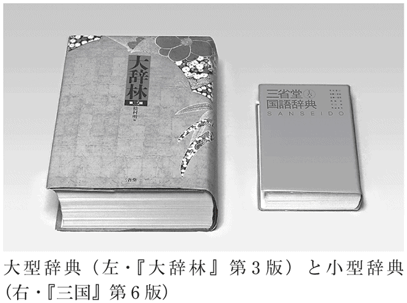
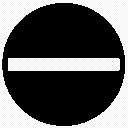

| 辞書を編む | |
| 飯間 浩明 | |
| (2013) | |
皆さん、こんにちは。飯間浩明と申します。私は、『三省堂国語辞典』という辞書の編纂にたずさわっています。
――大学で受け持っている授業や、セミナーなどで、私は最初にこのように自己紹介をします。すると、聴衆の頭からいっせいに「？」マークが飛び出すのが見えます。
「○○食品に勤務しています」「公務員です」「農業をやっています」「専業主婦です」という自己紹介は分かりやすい。そう聞いただけで、ある種のイメージが浮かびます。でも、「国語辞典の編纂をしている人間」というのはどうでしょう。多くの人にとって、あらかじめ「こういう人間」というイメージはあまりないと思います。
まず「編纂」ということばの意味が分からない。とりあえず「編む」ということだとして、「国語辞典を編む」というのも分かりにくい。国語辞典は、ことばを調べるために「ある」ものであって、誰かが「編む」ものだということは――たしかに、理屈ではそのとおりだとしても――考えたこともなかった。
聴衆の心の声は、だいたいそんなところでしょう。
人前で話をする以上、私としては、自分の仕事について説明しておきたい。でも、たまたま、その場で話すべき本題が国語辞典とあまり関係がない場合、辞書の話に時間を割くわけにはいきません。聴衆は、私の素性について不審を抱いたまま、話を聞くことになります。
では、多少の時間的余裕があればいいかというと、そうでもない。
「えー、国語辞典の編纂というのはですね......」
などと、10分使って説明すると、聴衆は分かったような、分からないような顔をしている。20分使って説明すると、非常に分かったような、非常に分からないような顔をする。どうも、中途半端に話すことで、かえってこの仕事に対する誤解を生んでいる気がします。
できるなら、十分に時間をとって、私自身の仕事について思う存分語りたい。国語辞典の編纂がどういうものかについて、多くの人に分かってもらいたい。これが、本書を書くに至った理由です。
そんな話、おもしろいのか、という声が聞こえてきそうです。ふだんから人々の関心を集める職業を語るならともかく、国語辞典の編纂は、地味で、目立たず、さほど関心を引かない仕事です。それを話題に選ぶことは、あまり有利ではなさそうです。
でも、やっている本人にとっては、これ以上おもしろい仕事はありません。スリルと発見に満ち、ものを生み出す喜びがあります。夢中になって打ちこめる仕事です。そのことがうまく伝われば、きっと読者にも楽しんでもらえるでしょう。
ところで、「編纂」とは、むずかしいことばです。「（辞書などを）編むこと」と考えてけっこうですが、もっと簡単に「編集」と言ってはいけないでしょうか。
私は、２つのことばを区別して使っています。「編纂」とは、ごく大ざっぱに言えば、材料を集めて、辞書の原稿を書く仕事です。一方、「編集」とは、その原稿をまとめて、書物の形にする仕事です。
私は、前者の仕事をする「編纂者」です。後者の仕事は、出版社の「編集者」が行います。
紛らわしいことに、「編纂」のことを「編集」と言うこともあります。現に、『三省堂国語辞典』には、「編集」として私の名前が出ています。「なんだ、それならどっちでもいいじゃないか」と言われそうです。
ただ、「編集」と名乗ると、出版社の人ではないか、あるいはフリーランスの編集者ではないか、と誤解を受けることがあるんですね。私はどちらでもありません。日本語学を専攻する研究者です。早稲田大学・成城大学などでも教えています。その研究活動の中心に据えているのが、国語辞典の編纂です。それで「編纂者」と名乗っています。
新聞などの取材を受けるときは、肩書きを「『三省堂国語辞典』編集委員」としてもらいます。「編纂者」は「纂」が常用漢字外なので使えず、「編集者」でもないので、このように表記してもらうのです。
私が国語辞典の編纂に関心を持ったのは、大学院に入って間もない頃です。見坊豪紀（１９１４～１９９２）という偉大な国語辞典編纂者の著書に出合って、衝撃を受けたことが主なきっかけでした。彼の著書を古書店で探して読みあさりました。見坊のすごさについては、第１章で改めて触れます。
当時、人に「あなたは将来どうするのか」と聞かれて、「国語辞典の編纂がしたい」と答えたことを覚えています。言ってしまってから、これは大それた望みだ、国語辞典なんて、大学者でもなければ、そうそう作れるものではないと、我ながらおかしく感じました。
その後、辞書を作りたい、というようなことを周りに言うことはありませんでした。心の内では、おもしろい仕事だ、ぜひ自分も関わりたいと考えていましたが、具体的にどうすれば関われるのか、その方法は分かりませんでした。辞典類の編集を手伝うアルバイトはいくつかやったものの、これだけでは、辞書を編纂したことにはなりません。
その後、私は大学院を離れ、大学の講師などをして生活していました。
転機が訪れたのは、２００５年、38歳の秋でした。三省堂辞書出版部の奥川健太郎さんから、『三省堂国語辞典』第６版の編集（私の言う「編纂」）に加わらないか、とお誘いをいただきました。奥川さんとは、三省堂の類語辞典をお手伝いしたりした関係で、つき合いがありました。
この『三省堂国語辞典』、略して『三国』こそ、見坊豪紀が編集主幹を務めた国語辞典です。私がこよなく愛する辞書であり、日頃から、何かにつけて「『三国』にはこう書いてある」と取り上げて話題にしていました。べつに大学者でも何でもない私が、その『三国』の編纂に加わるというのは、これ以上ない光栄でした。もちろん、アルバイトではなく、正式の編集委員です。まさしく、大学院に入った頃からの夢がかなったわけです。
『三国』第６版では、数名の委員の末席に連なり、無我夢中で編纂に当たりました。辞書は最高のものができましたが、私自身としては、あちこち反省すべき部分が残りました。次の版ではもう少しうまくやろうと思って、準備を重ねました。
そして、今回、『三国』第７版の出版が決まり、私も前回に引き続いて編纂に当たることになりました。本書では、この『三国』第７版の編纂が進んでいく様子を描きながら、辞書作りのおもしろさ、国語辞典の魅力を伝えていきたいと思います。
国語辞典の話をするからには、最初に、国語辞典がどんな書物であるかを確認しておきましょう。ちょっと基本的すぎる話かもしれませんが。
私が今、手に持っているのは、オレンジ色の表紙の『三省堂国語辞典』第６版です。オレンジはこの辞書のイメージカラーです（小型版は白い表紙）。
ちなみに、同じ出版社から出ている『新明解国語辞典』という辞書があります。「新解さん」というあだ名で有名ですね。こちらの表紙は赤色です。時に混同されますが、別々の辞書です。どうぞ、表紙の色で区別してください。
さて、オレンジの表紙を開いて、本文を見てみます。どこかのページを例に、国語辞典の基本的な用語について説明しましょう。「辞書」ということばが出ているページがいいでしょう。次のように書いてあります。
じ しょ［辞書］（名）ことばをたくさん集めて一定の規準で・整理（分類）し、発音・意味・用法などを説明した本。辞典。「―を引く」
ここに挙げた部分、このひとまとまりの情報のことを「項目」と言います。国語辞典の宣伝で「収録項目数○万項目」などと書いてあるのは、このまとまりが何万あるかを言っています。「項目数」のことを「語数」とも言います。
項目の最初には、仮名で〈じ しょ〉と書いてあります。これは「見出し」です。五十音順に並んでいて、ことばを検索するために利用します。
見出しの下には［辞書］という「漢字表記」、そして（名）という「品詞」が続きます。（名）は名詞のことです。形容詞なら（形）、副詞なら（副）と書きます。
さらに、その下に〈ことばを......した本。辞典〉という説明が続きます。この説明文のことを「語釈」と言います。「ことばの意味の解釈」ということです。「語釈」と言う代わりに、簡単に「ことばの意味の説明」と言うこともあります。
最後に「―を引く」の部分。これは「例文」と言います。「辞書」ということばが、たとえばどう使われるかを示した文です。この例文は、編纂者が勝手に作るのではなく、新聞や雑誌、単行本、テレビなどに出てくる実際の例を基にしながらまとめます。この実際の例のことを「用例」と言います。
たとえば、新聞や雑誌に「試しに辞書を引いてみる」「もっと辞書を引きなさい」などの文があったとすると、これは「辞書」ということばの用例です。これらの用例に基づいて、「―を引く」という例文を作るのです。この例文自体を「用例」と言うこともあります。
ここに挙げた用語は、辞書編纂の現場で日常的に使われるもので、本書でも繰り返し出てくるはずです。先を読んで、用語が分からなくなったら、ここに戻ってきてください。
辞書を編む◎目次
※各章扉に記した語釈は、『三省堂国語辞典』を参考にしつつ、本書のために特別に作成したものです。
国語辞典編纂者の日常は、いたって単調なものです。とりわけ、改訂版が刊行された後、次回の改訂版の出版計画が動き出すまでの間、いわばインターバル（休止期間）にあたる時期は、輪をかけて単調です。
インターバルの時期は数年続きます。インターバルと言っても、この期間、編纂者は辞書作りの作業を休んでいるわけではありません。
２００８年の初め、私自身もたずさわった『三省堂国語辞典』第６版が出た後、私の長いインターバルが始まりました。大学での授業や、雑誌原稿などをこなす一方で、日々、次の改訂版のための準備を進めていました。
具体的には、新しくいろいろなことばの実例を集めたり（用例採集）、前回の版の内容を見直して改訂案を作成したり（手入れ）、といったことを続けます。くわしくは、それぞれ第２章・第５章で述べますが、次の出版計画が始動するまでは締め切りもないわけですから、自分で納得がいくまで、ことばの調査に時間をかけることができます。至福の時間です。
どのように至福かというと、たとえば、こんな試みをすることができます。
「ＮＨＫのＢＳの『黒澤明特集』で、黒澤映画の全作品を一挙放送するそうだ。この際だから全部見てやろう。そして、めずらしいことばがあれば、片っ端から記録してやろう」
私は、実際にこのとおりにしました。「七人の侍」「天国と地獄」「赤ひげ」などの作品を大いに楽しみながら、気になったことばをメモしました。作品が古く声が聞きとりにくい箇所は、図書館でシナリオを確認したりもしました。こういう贅沢な時間の使い方は、インターバルの時期でもないとできないものです。
黒澤作品からは、数々の貴重なことばが採集できました。「鑑取り」（関係者への聞きこみ捜査）、「パイスケ」（竹かご）などの特殊語もあれば、「言われないだって」（言われなくても）、「よろしくお引き回し願います」（お世話になります）など、古風なことばもありました。
こんなふうに、まるで切手かコインでも集めるように、たくさんのことばを集めては、喜々としているのが私です。さらに、これらのことばの観察を通じて、辞書の記述を手直ししたほうがいいと考えた時は、改訂案をメモしておきます。
ことばの調査・観察に心置きなく没頭する日常は、突然に破られます。
２０１１年３月、東日本大震災が起こり、日本国内の状況は一変しました。東京に住む私も大きなショックを受け、しばらくは用例採集などは手につきませんでした。震災や原発事故に関するいろいろな情報を集めたり、今後の毎日の暮らし方について妻と話し合ったりする日々が続きました。
その月も替わろうという頃、三省堂の奥川さんからメールが届きました。
ごぶさたしておりますが、地震の際にはご無事でしたでしょうか。
さて、そろそろ『三国』第７版（２０１３年12月発売予定）の編集会議を開始したいと存じます。つきましては、来月ないし再来月で、先生のご都合のいい日をお教え願えませんでしょうか。
『三国』、つまり『三省堂国語辞典』の改訂作業を始めたい、という趣旨のメールでした。
受信したときの私の率直な気持ちは、「えっ、もう改訂作業の時期なのか」「まだ準備が整ってないんだけど」というものでした。前回の第６版の刊行が２００８年の初め。それから３年しか経っておらず、私としては、「まだ前の版が出たばっかり」という感覚です。奥川さんのメールにある予定のとおりに次の版を出すとすれば、６年弱で新版が出ることになります。これは早いですよ。
そうは言っても、決まったのならしかたがない。そろそろ気持ちを切り替えて、改訂作業の態勢に入るとしましょう。
国語辞典の「改訂」と言われても、ぴんと来ない人のほうが多いと思います。改訂とは、単なる字句の微修正ではありません。辞書の全体的な内容を改めて見直す作業です。
従来の版に新しい項目を加えたり、項目に新しい意味を補ったり、既存の項目の語釈を改めたりします。あるいは、不要になった項目や意味を削ったりもします。辞書を生まれ変わらせるためのプロジェクトで、２～３年かけて行います。
ここで『三国』の改訂の歴史を見てみましょう。１９６０年に初版が出て以来、以下のペースで改訂しています。
初 版 １９６０年12月
第２版 １９７４年１月（約13年経過）
第３版 １９８２年２月（約８年経過）
第４版 １９９２年２月（約10年経過）
第５版 ２００１年３月（約９年経過）
第６版 ２００８年１月（約７年経過）
平均して10年弱といったところでしょうか。最初は13年かけて改訂を行っていたのが、その後、改訂サイクルは短くなる傾向にあります。６年弱で改訂版を出すとすれば、その傾向がいっそう進むことになります。
これは、技術革新などによって、世の中の移り変わりが以前に比べて激しくなったことと密接な関係があります。
たとえば、メディアの変化を考えてみましょう。１９６０～80年代は、主要なメディアはほぼ一定していました。長らくの間、人々は紙の新聞を読み、ブラウン管を通してテレビ放送を見、レコードで流行の音楽を聴いていました。ところが、その後、衛星放送やハイビジョンが出てくる、パソコン通信やインターネットが広まる、音楽はＣＤや携帯型音楽プレイヤーを通して聴くようになる、というように、メディアの構造が大きく変わりました。
国語辞典としては、こうした変化に対処しなければなりません。「ハイビジョン」「インターネット」「ブログ」「ツイッター」など、その時々に広まったことばを補う必要があります。また、「炎上」（ブログなどが、たくさんの批判のコメントで埋まること）、「立ち読み」（電子書籍を買う前に、試しに少し読むこと）などの新しい用法も漏らすわけにはいきません。
見過ごしてならないのは、従来の項目にある古い記述です。ＣＤやiPhoneの時代でも、「レコード」の項目は必要です。ただ、たとえば「聴く」の項目に「レコードを―」という例文があったとすると、ちょっと古い感じがします。「音楽を―・ＣＤを―」と変えてもいいかもしれませんね。
話はメディアだけにとどまりません。政治・社会・文化その他の分野全般に変化が起こっています。時代の流れに合わせて辞書の内容を一新しようとすると、とても小手先の修正では間に合いません。新しい辞書をもうひとつ作る、と言っては大げさすぎますが、その何分の一かの労力を必要とする大作業になります。
その作業のための会議が、ついに開かれる運びになりました。
２０１１年５月の夕暮れ時、株式会社三省堂・６階会議室。
前回の改訂作業以来、久し振りに訪れる場所で、私は緊張していました。今日は、ここに『三国』第７版の改訂作業（原稿作成）に当たるメンバーが集まっているのです。
『三国』の改訂には、筆耕・校正・データ作成など、直接・間接にさまざまな人々が関わりますが、原稿作成に関わる人数は10人前後です。今日の会議には、このうち、外部執筆者を除いた５人と、編集部側から数人が出席しています。会議名は「『三省堂国語辞典』第７版・第１回全体会議」とものものしいけれど、ごくこぢんまりとした集まりです。
会議室の真ん中には大テーブルがあります。上座には、市川孝先生・飛田良文先生が着席しています。編集方針について助言し、ゲラ（校正刷り）まできびしくチェックをしてくださる、斯界の権威です。市川先生は文章表現が専門で、『三国』初版からのメンバーのひとり。飛田先生は近代日本語が専門で、『三国』には第４版からたずさわっています。
その横に、さらに３人が並んでいます。両先生のご指導のもと、用例採集から原稿執筆、全体の見直しに至るもろもろの作業を行う、いわば実働部隊。山崎誠さん（国立国語研究所）、塩田雄大さん（ＮＨＫ放送文化研究所）、そしてこの私、飯間です。私は前回の第６版から、山崎・塩田両委員は今回から参加しています。
以上の５人を、「編集委員」と呼びます。「編集部」と言うと出版社側のことになってしまうので、ここは区別してください。
さて、もうひとり忘れてならないのは、会議の案内メールをくださった、辞書出版部（つまり編集部）の奥川健太郎さん。辞書改訂スケジュールを組み、原稿依頼・催促や原稿チェック、編集会議の開催その他を行う、いわば総元締めです。しかも、編集委員と同様、用例採集にもたずさわっています。
私が日常的に共同作業をする相手は、山崎さん、塩田さん、そして奥川さんの３人です。本書でも、この人々の名前が時おり顔を出すことになるでしょう。もう少し、彼らの横顔を描写しておきましょう。
山崎さんは、私より一回り年上。もの静かで、スイーツ全般にくわしい。編集会議の時には、いつも専門店のお菓子を買って来てくださるので、楽しみです。
塩田さんは、私と同年代。髭をたくわえ、話し好きで、Ｂ級グルメにくわしい。編集会議の後の食事会は、彼のチョイスした店で行われることもあります。
奥川さんも、私と同年代。礼儀正しい編集者で、どんな状況でも相手に失礼のないことば遣いをします。原稿が遅れているときなど、それがかえってこわい場合もあります。
市川・飛田両先生を含めたそれぞれのメンバーは、こう言っては失礼かもしれませんが、個性派揃い、キャラが立っています。黒澤映画の「七人の侍」には１人足りませんが、なんとなくそんな集団を思わせます。それぞれの個性を通して、日本語を少しずつ違った視点から複眼的に見つめています。いい改訂版ができそうな予感がします。
本書で「私たち」と言う場合、多くは以上のメンバーのことを指します。「そんな小人数で作っているのですか」と驚かれることがありますが、実際、この体制でやっています。
『広辞苑』『大辞林』といった、卓上にでんと置いて使う、二十数万語規模の大型辞典（これを「中型」と呼ぶ人も多いのですが、本書では「大型」と呼びます）は、何百人の体制で作ります。このことは、巻末に並ぶ名前を数えれば分かります。
一方、『三国』を含めた６万～９万語程度の小型辞典は、一般に小人数の体制です。小型辞典の場合、あまり多くの人で寄ってたかって作ると、「船頭多くして船山に登る」ということになりかねないのです。

体制を小規模にすると、問題点を全員で共有したり、方針の変更を機敏に行ったりするのに都合がよいというメリットがあります。一言で言うと、小回りが利くのです。
あたかも家内制手工業のごとく、小人数で、額を突き合わせて、「ああでもない、こうでもない」と仕事を進めていく。これが『三国』の改訂作業です。
さて、会議の冒頭は、まず編集方針の確認から始まります。これは編集委員と編集者にとっての憲法のようなもので、他の辞書と『三国』を区別する大事なものです。根幹となる「大方針」は２つあります。
ひとつは、「実例に基づいた項目を立てる」ということ。もうひとつは、「中学生にでも分かる説明を心がける」ということです。
まず、「実例に基づいた項目」のほうから見ていきましょう。一般に、どんな国語辞典でも、実例に基づかない項目なんてないはずです。実際に使われていることばだからこそ、辞書に載せるのです。ただ、その載せ方にもいろいろあります。
「甘熟」ということばを知っていますか。「完熟」の誤りではありません。甘く熟する、または熟成することを言うことばです。青果店や洋菓子店などの前を通ると、このことばによく出合います。〈甘熟バナナ〉〈甘熟トマト〉〈甘熟焼き芋〉など、枚挙にいとまがありません。〈甘熟純玄米黒酢〉などの調味料を売り出しているメーカーもあります。
ところが、新聞記事や文学作品を読んでいるときに、このことばを見出だすことはあまりありません。「完熟」は出てきても、「甘熟」は出てこないのです。
国語辞典にも、今のところ「甘熟」は載っていません。国語辞典は、資料とする範囲が新聞の文章や文学作品などであることが多いため、そこに出てこないことばは項目として立ちにくい傾向があります。
しかしながら、「甘熟」は、街の中ではたいへん多く使われています。試しに、「楽天市場」などの通販サイトで「甘熟」を検索してみてください。このことばを使う店が、北から南まで全国に広がっていることが分かるはずです。
ここで、辞書編纂者のとる態度は２つに分かれます。一方は、「『甘熟』ということばは辞書に載せる必要はない」というものです。「新聞や文学作品にあまり出てこないのであれば、日本語としての普遍性に欠ける。『甘熟』は、店が勝手に考え出したのだろう。辞書というものは、むずかしいことばの意味を正しく知るためのもので、俗なことばを積極的に載せる必要はない」。こうした考え方を、ここでは「規範主義」と呼んでおきましょう。
一方、「『甘熟』は辞書に必要」という態度もあります。「たしかに、新聞や文学作品のことばには少ないが、街の中には『甘熟』は厳然としてある。これもまぎれもなく日本語だ。もとは個々の店の造語かもしれないが、一過性のものではなく、それなりに広がりを見せ、定着している。辞書は、『今そこにある日本語』を載せるべきである」。こうした考え方を、「実例主義」と呼んでおきましょう。
『三国』は、この意味で、実例主義なのです。ことばを換えて言えば、世の中に定着したことばはなるべく載せ、今の日本語がどうなっているかを辞書に反映させようとします。「現代日本語を鏡のように映し出す」と表現してもいいでしょう。
実例主義を「鏡」とするならば、規範主義のほうは、同じ「かがみ」でも「手本」という意味の「鑑」です。国語辞典の多くは、どちらかと言うと、「鑑」のほうに重点を置いています。「このことばは正しくはこうです」と説明することが主眼で、「今の日本語はこのようになっています」と示す「鏡」の役割は副次的です。
規範主義の「鑑」か、実例主義の「鏡」か。これは、どちらが優れているというものではありません。ただ、どちらを重視するかによって、辞書の性質は大きく違ってきます。
『三国』は、まずは「鏡」であろうとします。「鑑」の役割をないがしろにするという意味ではありません。それはそれで大事なのだけれど、「今はこうなっています」ということを、できうるかぎり記述したい。これが「大方針」の１つめです。
私たちの確かめた「大方針」の２つめ、「中学生にでも分かる説明を心がける」についても見ていきましょう。
一般に、国語辞典には「辞書の文体」というものがあります。具体的に「どこがどう」とは言いにくいのですが、辞書の語釈を読むと、何となくもったいぶった、むずかしそうな文体という感じがすることが多いのではないでしょうか。
たとえばの話、「汗」ということばを国語辞典ふうに定義してみてください。
「高温時・興奮時などに、人体の表面に分泌される、塩分を含む液体」
だいたい、こんなふうな定義を考えたのではありませんか。「汗」はふだんよく使うことばですが、「辞書ふう」に説明しようとすると、ことさらむずかしく言いたくなりますね。
実際の国語辞典はどうかというと、さらに厳密に書いてあります。
あせ【汗】①哺乳類の汗腺から分泌される分泌物。成分の九九㌫以上は水で、他は乳酸・塩化ナトリウムなど。体熱を放散させて体温の調節を助ける温熱性発汗と、興奮したときや感覚的な刺激を受けたときに起こる精神性発汗とがある。
（『大辞林』第３版）
あせ【汗】①温度刺激により汗腺から排出される分泌液。塩類・ピルビン酸・乳酸・アンモニアなどを含む。気温の高い時、激しい運動をした時などに体温調節の作用をするほか、痛覚・精神的緊張によっても出る。
（『広辞苑』第６版）
これらは科学的には正しいはずですが、「汗」という「ことば」の説明になっているかどうかは議論の余地があります。
文学作品を見てみましょう。「源氏物語」で「汗」ということばが最初に出てくるのは、空蟬という女性を描写した部分です。そこでは、次のように書いてあります。
女はこの人の思ふらむことさへ死ぬばかりわりなきに、流るるまで汗になりて、いとなやましげなる、〔下略〕
（「源氏物語」帚木巻）
空蟬は、光源氏に会ったことが侍女に知れたので、どっと汗が流れたというのです。この汗は、〈哺乳類の汗腺から分泌される分泌物〉とか〈塩類・ピルビン酸・乳酸・アンモニアなどを含む〉とかいう説明とは合わない感じです。
あるいは、夏目漱石「坊っちゃん」にも「汗」は出てきます。主人公が四国の中学校に赴任したその日、宿に泊まったら、部屋がたいそう暑かった。
こんな部屋はいやだと云つたら生憎みんな塞がつて居りますからと云ひながら革鞄を抛り出した儘出て行つた。仕方がないから部屋の中へ這入つて汗をかいて我慢して居た。
（『漱石全集 第二巻』岩波書店、２６２ページ）
この汗も、科学的に言い換えると、坊っちゃんはきょとんとするに違いありません。
ごく単純に考えてみましょう。人々が「汗」ということばを使うとき、いったいどういう意味合いで使っているのでしょうか。紫式部も夏目漱石も、汗腺とか、ピルビン酸とかいうものを前提に「汗」と書き記しているのではありません。これらは、汗に関する科学的知識ではあっても、ことばの意味ではありません。
あなたが子どもに「汗」の意味を聞かれた場合を考えてください。べつに専門語なども使わず、ごく日常的なことばで答えるでしょう。それが「汗」のことばとしての意味です。『三国』でも、なるべく日常語を使って説明しようとしています。こんな具合です。
あせ［汗］（名）①〔生〕暑いときや運動のあと、また緊張（キンチョウ）したときなどに、顔や からだから出る、塩けをふくんだ水。「―を流す・―（っ）かき〔＝汗がよく出る体質（の人）〕」
（『三国』第６版）
ことばとしての「汗」の説明は、これで必要十分です。これなら子どもも分かるし、空蟬も納得するだろうし、坊っちゃんも同意してくれるでしょう。
「汗」は簡単なことばで説明できるとしても、複雑な概念を表すことばは、こうはいかないのではないか、と思う人もいるかもしれません。国語辞典は、日常語ばかり載せているわけではありません。難解な哲学用語などはどうすればいいでしょうか。
こういったことばも、やはり、なるべく日常語で説明することを心がけます。
たとえば、「アプリオリ」ということば。江角マキコさんは、俳優になる以前に会社勤めをしていましたが、大した仕事を任されませんでした。その頃のことを紹介する新聞記事に、「アプリオリ」が使われています。
中途半端を嫌う江角に中途半端が要求され、いいかげんでよい、というレベル環境がアプリオリに存在した。
（『毎日新聞』１９９８年４月６日第14面）
「アプリオリ」の意味が分からなければ、この文全体の意味が理解できません。そこで国語辞典を参照すると、こう書いてあります。
ア プリオリ 〔ラ a priori＝先天的〕物事に対する認識が、いっさいの経験に依存しないことを表わす。訳語は、先験的。ア ポステリオリ
〔ラ a priori＝先天的〕物事に対する認識が、いっさいの経験に依存しないことを表わす。訳語は、先験的。ア ポステリオリ
（『新明解国語辞典』第７版）
この説明はこれで正しいのですが、すっきりとのみこめません。「認識」「依存」「先験的」と、硬いことばが並びます。もう少し簡単にならないでしょうか。子どもが親に、「ねえ、○○ってどういうこと？」と尋ねたとき、「それはね......」と教えてもらえる、あの感じで辞書の説明が書ければ理想的です。試みてみましょう。
ア プリオリ（名・形動ダ）〔ラ a priori＝より先のものから〕〔哲〕経験によって考えてみなくても、もとからわかっていること。「―に存在する」（ア ポステリオリ）
（『三国』第６版）
つまり、「ものには大きさがある」とか、「自分がいる部屋は自分より大きい」とか、わざわざ考えるまでもなく、もともと分かっていることを「アプリオリ」と言うのです。
先の新聞記事に当てはめてみると、江角さんの職場では、「あなたは適当にやっていればいい」という雰囲気が、考えるまでもなく、当然のこととして存在していたのだ、と解釈できます。これでは、働く気力は失せてしまいますね。
「アプリオリ」だけでなく、説明のむずかしいことばは無数にあります。「クオリア」「国際海峡」「証拠金」「スキーマ」「対位法」「不飽和脂肪酸」「プロトコル」などなど......。これらを、小学生にも分かるように、というと無理が出てきますが、まあ中学生になら分かってもらえるように、説明を工夫したいと思います。
中学生向けの説明では、一般の人はもの足りないでしょうか。そんなことはないでしょう。誰でも、自分の知らない分野を理解するためには、中学生向け程度にかみ砕いた説明が役に立つはずです。専門知識を提供する辞書とは別に、「それは要するにどんなものか」という、基本的なことを説明する辞書が必要です。『三国』は、その役割を担おうとしています。これが「大方針」の２つめです。
「実例に基づいた項目を立てる」「中学生にでも分かる説明を心がける」という、『三国』の２つの大方針について説明しました。ここまでで、国語辞典の編集方針には、
① 実例主義か、規範主義か
② 平易な説明か、専門的な説明か
という２つの対立軸があることが分かりました。どちらも、国語辞典の基本的な性格を決定する、重要な対立軸です。
今日の全体会議では出てきませんでしたが、国語辞典を性格づける対立軸は、ほかにも考えられます。もういくつか挙げてみます。
③ 簡単に記すか、くわしく記すか
これは②の「平易か、専門的か」に関連します。ここでは分量のことを考えます。
あるものごとについて、行数を割いてくわしく記述することが必要な場合は、当然あります。百科事典に求められるのはそれです。ひとつのことを深く知りたいとき、百科事典はたいへん役に立ちます。大型の国語辞典も、百科事典と同様の役割を求められる部分があるので、記述がくわしくなる傾向があります。
一方で、説明が長くなると、それだけ筋がこみ入ってきて、「それは要するにどんなものか」が分かりにくくなるという面もあります。「調べたいことがあって百科事典を引いてみたけど、結局、何のことか分からなかった」という経験は誰にでもあるでしょう。
「萌え」を例に取ってみます。このことばは、「○○萌え」「萌えキャラ」のように、一般に定着した観があります。この「萌え」とはどういう意味か、インターネットの「ウィキペディア」（これも一種の百科事典）で調べてみると、こんなふうに書いてあります。
萌え〔略〕オタク文化におけるスラングとしては、主にアニメ・漫画・ゲームソフトなどにおける、登場キャラクターなどへのある種の強い好意などの感情を表す言葉として使用されている。また、そこから転じた若者言葉では、同様のニュアンスがより広い対象に対して用いられる。〔略〕
スラングとしての萌え（もえ）とは、一部文化において、アニメ・漫画・ゲームソフト等様々な媒体における、対象（主として登場キャラクター）への好意・恋慕・傾倒・執着・興奮等のある種の感情を表す言葉である。「対象物に対する狭くて深い感情」という意味を含み、それよりは浅くて広い同種の感情を表す「好き」という言葉を使うのにふさわしくない場合に用いられる。〔下略〕
（２０１３年３月５日閲覧）
説明はまだ続きます。まことに微に入り細を穿った、という感じですが、疑問もあります。説明によれば、「萌え」は〈狭くて深い感情〉、「好き」は〈それよりは浅くて広い同種の感情〉とのことですが、そうすると、「あなただけが死ぬほど好き（＝狭くて深い感情）」と言ってはいけないのでしょうか。説明どおりなら、「あなただけに死ぬほど萌え！」と言わなければならないようにも思われます。少なくとも、そう解釈する余地はあります。右の説明は、ひとつの感情を厳密に捉えようとして、かえって破綻が生じています。
『三国』でも「萌え」という項目を立てています。語釈は次のようにしました。
もえ［（萌え）］（名）......③〔俗〕かわいい少女などに、心が強くときめくこと。
ごくシンプルです。要するに、簡単に言えば、「萌え」とはこういうことだ、という説明です。「工場萌え」「方言萌え」など、「萌え」にもいろいろな対象がありますが、典型的な対象として「かわいい少女」を挙げ、「など」の形で典型例であることを示しています。これで「工場萌え」などの例に行き当たった場合にも類推が利くはずです。
一般の国語辞典では、長い語釈であっても、矛盾した説明になるというようなことはあまりありません。それでも、長くなれば難解になる危険があるのは確かです。一方で、簡単に書くと、説明不足になるおそれもあります。どちらも注意が必要でしょう。
私は、「記述をくわしくするか、簡単にするか」を、よく人物画にたとえます。「この人はこういう顔をしています」と示すには、レオナルド・ダ・ビンチのように、精密な肖像画を描く方法もあります。一方、和田誠さんや高橋春男さんのように、簡単な線で特徴を捉えた似顔絵を描く方法もあります。『三国』は、いわば似顔絵派というわけです。
④ 現代語にしぼるか、古語などを含めるか
この点も対立軸になりえます。
収録語が10万語ぐらいまでのいわゆる小型辞典は、多くの場合、項目を主に現代語にしぼっています。「大殿ごもる」とか「とざまこうざま」とかいった古語を積極的に入れようとすると、もう数万語必要になります。また、漢文に出てくる「雎鳩」「好逑」などの漢語（漢文語と言うべきでしょうか）を加えると、さらに数万語増えます。厚さ８センチに及ぶ大型辞典の場合は、こういった語だけでなく、方言・固有名詞・専門用語なども広く収録しているので、二十数万語に達する結果になります。
ところが、小型辞典の中にも、若干の古語・漢文語を載せているものがあります。『新選国語辞典』第９版で「大殿ごもる」「とざまこうざま」を引くと、ちゃんと出ていました（ちなみに、それぞれ「貴人がお休みになる」「あれこれ」ということ）。別のいくつかの国語辞典では、「とざまこうざま」はなかったけれど、「好逑」は載っていました（ちなみに、「よい配偶者」のこと。先ほどの「雎鳩」は、鳥のミサゴ）。
古文・漢文のことばも少しは載っているほうが便利だと考えるか、それとも、載っていたりいなかったりするよりは、初めからないほうがすっきりすると考えるかで、編集方針が対立します。『三国』は、この点では後者の考えをとります。あくまで現代語重視ということです。
ただし、現代語というのは、現代の新語・時事用語ということではありません。今の私たちが生活の中で使うことば一般を指します。現代の短歌や俳句、落語、時代小説などに出てくることばも、現代語の重要な一角をなします。「あたじけない」「慳貪」（どちらも「けち」の意味）などというのは、その例です。古めかしいことばであっても、採集した用例の中に少なからず出てくれば、積極的に項目に立てます。
このほか、辞書の売り上げに影響する要素としては、
⑤ 語数を多くするか、少なくとどめるか
というものもあります。一般には、語数が多いほうがいいように思われがちですが、どういう目的で辞書を使うかにもよります。自分のよく読む文章の傾向と、その辞書に載っていることばの傾向が一致していれば、６万～７万語ぐらいの規模の辞書であっても、ほとんど不自由はありません。
たとえば、『岩波国語辞典』第７版は、約６万５０００語を収録し、比較的語数が少ないほうです。でも、純文学作品などをよく読む人にとっては頼りになる辞書です。「冤枉」（無実の罪）、「孩児」（おさなご）といった、むずかしめの語も押さえています。
『三国』第６版は、約８万語を擁しますが、「冤枉」「孩児」は載せていません。むしろ、どちらかといえば、新聞や雑誌のほか、一般書などを多く読む利用者を想定して、収録語を選んでいます。街で見かけて、「あれはどういう意味だろう」と疑問に思うようなことばも、できるだけ載せるようにしています。
さらに収録語数の多い辞書でも、内容を見ると、今日では不要と思われる語が多かったり、説明が古かったりするものがあります。「語数は多いが、人には勧められない」と思うような辞書もあります。
一般に、どの辞書も「収録語数○万語！」というところで宣伝効果を狙うため、どうしても語数増に向かう傾向があります。でも、不要な語を削ったりして、語数を抑え、既存の項目のメンテナンスに力を注ぐことも大切です。
第１回の全体会議は、先に見た「大方針」の確認の後、こまごまとした議題に移っていきました。
いわく、新しく追加された「常用漢字」の扱いはどうするか。会話で使うことばには〔話〕と表示してはどうか。外来語を漢字で書く場合、たとえば「レモン」を「檸檬」と書くような場合は、どう表示したら分かりやすいか――。そんなふうな議題です。
ただ、読者にとっては、あまり細かい話は退屈でしょう。まだ会議は続いていますが、ちょっとここで抜け出して、別室で休憩といきましょう。
『三国』の大方針、「実例に基づいた項目を立てる」「中学生にでも分かる説明を心がける」という２つの方針がどこからやって来たかということを、もう少し話したいと思うのです。まあ、お茶でも飲みながら聞いてください。
私たちの編纂する『三省堂国語辞典』を生み出したのは、見坊豪紀という辞書編纂者でした。初版から第４版まで編集主幹を務めました。彼が『三国』を編纂していた頃の方針を、今の私たちも、ずっと受け継いでいます。
「見坊」とはめずらしい名前ですが、『三国』の利用者にさえ、あまり知られていないかもしれません。私にとっては神様のような存在であり、直接教わってはいないけれど、ふだんは「見坊先生」と呼んでいます。ただ、本書では敬称抜きで呼ぶことにします。
この人のどこがすごいか、どこが神様なのか。一言で言えば、生涯に１４５万語の日本語の用例を採集した、ということに尽きます。
用例採集については、くわしくは第２章で述べますが、辞書編纂のために欠かせない基礎作業です。まだ辞書に載っていないことばはないか、あるいは、まだ載っていない用法はないかと、活字や音声、街の中などから、来る日も来る日も、ことばの実例を探します。見坊の場合、そうして集めた用例の総数が実に１４５万語に達したというのです。
見坊豪紀は、１９１４年に東京に生まれました。岩手大学教授、国立国語研究所第三研究部長などを歴任し、１９９２年に亡くなりました（命日は10月21日。これは私の誕生日と同じで、不思議な気持ちがします）。国語辞典編纂にたずさわったのは、１９３９年から亡くなるまでの約50年間です。
計算してみましょう。集めた用例１４５万語を50年で割ると、２万９０００語になります。実際には、用例採集に本腰を入れ始めたのは、１９６０年12月に『三国』初版が世に出た直後からだそうです。すると、正味は30年あまりということになるので、１年に四万数千語を集めた計算です。
いったい、人間業でこれだけ集められるだろうか、ということです。
私が採集してデータ化する用例の数は、どのくらいの規模になるか、記しておきます。１か月にがんばって５００語ぐらい。ふつうは４００語ぐらいです。単純計算で、１年に５０００語ぐらいということになります。一方、見坊は四万数千語を集めていたのですから、その差は約10倍です。
なんでそんなことが可能なんだ！ 新しいことばなんて、１年間に４万語もないぞ！
見坊の集めた１４５万語という数が噓でないことは、三省堂の倉庫に行くと分かります。立ち並ぶ移動式書架の中に、その名も「見坊カード」という、七夕の短冊形の用例カードがぎっしりと詰まっています。それぞれのカードには、新聞・雑誌などから切りぬいた原文が貼りつけられ、見出し・出典・日付・ページなどが書きこまれています。１９６０年代から約30年間の日本語の膨大な資料が、丁寧に整理されて（晩年のものは未整理のものもありますが）、順番に並んでいるのです。
これだけの成果を上げるためには、生活する時間のすべてを用例採集に充てなければならないはずです。事実、見坊は、晩酌もしなかったそうですし、家族との時間もあまり持てなかったと言います。さらには、用例採集に集中するため、53歳で国立国語研究所を辞めてしまったというのですから驚きます。
ある中国語のウェブサイトを見ていたら、「見坊豪紀」を誤訳して「和尚豪紀」（お坊さんの豪紀さん）と記していました。あくまで名字の誤訳ですが、ある意味で真理を衝いています。まさに仏道修行のような人生でした。
いくら私が国語辞典を愛すると言っても、このまねは、おそろしくてできません。まねしようにも、それだけのペースで用例を採集すること自体が不可能です。私は、己の非力を嘆く一方で、「私は私なりのやり方でやる」と、自分を納得させるしかありません。
見坊豪紀の話と、『三国』の「大方針」の話とが、まだうまく結びついていません。もう少し、彼の歩んできた道について話しましょう。
先の略歴紹介で、「国語辞典編纂にたずさわったのは１９３９年から」と記しました。その辞書の名前は『明解国語辞典』と言います。一般向けの小型辞典です。恩師の金田一京助（言語学者・アイヌ文学研究者）の紹介で、見坊は、独りでこの辞書の編纂に当たりました。太平洋戦争の真っ最中、１９４３年に初版が出ました。
計算してみると、当時、見坊は28歳。大学院生でした。これが第一すごい。20代の大学院生が、しかも独りで、国語辞典の編纂なんかできるものでしょうか。それができたのです。山田忠雄（後の『新明解国語辞典』編集主幹）・金田一春彦（京助の子息。日本語のアクセント研究に貢献）という友人の協力はあったようですが、ほとんど独力で辞書を完成しました。この『明解国語辞典』は、「金田一京助編」として刊行されました。
『明解』は、戦後も広く用いられ、一般には「金田一博士の辞書」の呼び名で通っていました。でも、実際は京助は編纂にタッチしていませんでした。このことは、今や「辞書通」の間では常識です。辞書の名義貸しというのは、ごくふつうに行われたようです。
『明解』以前の国語辞典は、古語や文学作品に見られる語を多く載せ、説明のことばも多くは文語体でした。むずかしい書物を読むときの参考にはなりますが、ふだんの生活の中で使うことばを調べるのには向きませんでした。見坊は、従来の辞書の欠点を補うべく、当時の日常語を『明解』の項目に多く採用しました。書誌学者の武藤康史さんの指摘（『明解国語辞典復刻版』解説）によれば、以下はその例です。
赤出汁 アクシデント 開け放つ 味加減 遊び友達 アナウンス イヴェント 異な 色んな 薄切り 裏づける エチケット 園児 おくるみ オペレエション スライス 妥結 未踏 ムニエル やいのやいの レパアトリイ......
今から見るとごくふつうの語ですが、戦時中より前の辞書には概して載っていなかったようです。「イヴェント」「エチケット」なんて、この時代に使われていたのか、と驚きます。見坊自身も、後に〈イヴェント、エチケットは戦後のことばではない〉と記しています。
既存の辞書の引き写しでは、こうしたことばを辞書に載せることはできません。実際の言語生活を反映した辞書を作ろうとすると、「用例採集」という作業が必要になってきます。
用例は、文学作品などの限定された資料から拾うのでは不十分です。そこで、「見るもの聞くもの、手当たり次第に、全部」を資料とすることになります。必要な用例は、新聞・雑誌・書籍・ラジオ・日常会話などを広く見渡さなければ引っかかってきません。こうして、見坊独特のスタイルによることば集めがスタートしました。
用例採集の初期は、カードにことばを書きつけるだけだったようですが、次第に、前後の文脈・出典・日付・ページなどをきちんと記入するようになりました。こうした細かい情報が揃うことで、そのことばがいつ使われたのか、今も使うのか、誰がどんな場合に使うのか、どういうニュアンスで使うのか、などといったことが分かるようになります。
見坊はその後、『明解国語辞典』改訂版（１９５２年）に取り組み、それから、いよいよ『三省堂国語辞典』初版（１９６０年）の編纂に従事します。
『三国』は、言うまでもなく、見坊が中心になって編纂した辞書ですが、これも初版では「金田一京助編」となっています。見坊の名前が出るのは第２版（１９７４年）からで、他の編者と連名のため３番目に書いてあります（筆頭に書かれるようになったのは第３版から）。ずいぶん謙虚な人と言うべきです。
第２版において、見坊スタイルは非常に鮮明になりました。他の辞書になかったことばが、「これでもか」というほど載っています。たとえばこんな具合です。
愛社 網カーラー 躍り出る おどろおどろしい 漁価 （照明の）減光 時短 政管（「政管健保」というのが以前あった） タイ止め 短信（「経済―」） 鉄腕 テトラポット（ド） 道道（北海道の道路） 年古りる ドル入れ ぬら（ナメコなどのぬるぬる） まがまがしい （敷布の模様の）ます目 湯加減 雪化粧 らしい（それらしい。「―女優」）......
後には他の辞書に載るようになった語もありますが、当時の辞書には概して見当たりませんでした。「躍り出る」「雪化粧」など、重要と思われることばでも、それまでの辞書編纂者には、あまり注意されていなかったようです。
こういったことばや用法が、まだ辞書にない、と気づくためには、つねにことばに対するアンテナを張り、実際の例を探さなければなりません。集まった実例が、他辞書の注意していない、新鮮なものであればあるほど、『三国』の個性は際立つ。見坊はそう考えました。
後を引き継ぐ私たちも、同じように考えます。用例採集に力を注ぎ、他とは違った国語辞典が作りたい。「実例に基づいた項目を立てる」という大方針には、この願いが凝縮されています。
一方、「中学生にでも分かる説明を心がける」という大方針も、やはり、見坊豪紀の考えに基づいています。
「女」ということばを例に説明しましょう。昔の主な国語辞典で「女」を引くと、次のように書いてあります。
をんな（名）（一）をみなノ音便。女。ヲウナ。ヲナゴ。婦人。女子。女人。女性。
（『言海』１８８９～91年）
をんな 女（名）〔をみなの音便〕をなこ。をうな。めのこ。め。女子。婦人。
（『大日本国語辞典』１９１５～19年）
オンナ 女 雌性のもの。老幼を問はず女性たる人間。雌性の人類。をなご。をうな。めのこ。め。女子。婦人。
（『大辞典』１９３４～36年）
どの辞書も、単なる言い換えで、説明になっていません。言い換えた語を改めて引けば、くわしく説明されている、というわけでもありません。これでは「女」の意味を知ることができません。『大辞典』の〈雌性の人類〉なんて、あんまりですね。
実は、見坊が初めて編纂した『明解国語辞典』も、「女」の説明は五十歩百歩でした。
おんな③［女］ヲンナ（名）女性。女子。めす。情婦。女中。
こんな具合です。「女って何ですか」「それは女性、女子のことです」と言うわけで、同語反復に陥っています。「女」を「めす」の意味で使うことがどのくらいあるかも疑問です（競馬では「女馬」などと言うようですが）。
これではいけない、と見坊は考えました。『明解』の改訂版を作る際に、次のように語釈を変えました。
おんな③［女］（ヲンナ）（名）ひとの中で、にんしん（妊娠）する（能）力のあるもの。女性。女子。
今日の目から見ると、この語釈は、不妊に苦しむ女性を傷つけかねず、適切な説明とは言えません。また、閉経を迎えた女性はどうなのか、性同一性障害の人はどうなのかなど、いろいろ問題があります。それでも、当時としては画期的だったと言えます。単なる語句の言い換えから脱した語釈になっているからです。
この「女」の語釈は、ちょっと評判になったようです。ただ、週刊誌では、〈これ〔「女」の語釈〕はいいかえじゃないけれども、あんまりいい定義でもない〉（『週刊朝日』１９６３年２月22日号）と、辛口の評価もされました。
『三省堂国語辞典』の初版を編纂するにあたり、見坊は、この語釈をさらに改めました。
『三国』は、現在は一般向けの辞書ですが、当初は、小学校高学年から中学にかけての利用者を想定していました。学習辞典的な色合いが濃いものでした。そこで、性的ななまなましい表現は極力控えられました。右の「女」の定義は、差別的だからという理由ではなく、「妊娠」ということばが露骨だからという理由で、次のように書き換えられました。
おんな［女］ヲンナ（名）人のうちで、やさしくて、子供を生み そだてる人。女子。女性。（男）「―心（ゴコロ）・―子供」
ここでは、「女」というものを〈社会的機能の観点からとらえる〉（見坊豪紀『辞書をつくる』玉川大学出版部）ことを試みています。これも、今日のジェンダーフリーの観点からは問題のある語釈で、性的役割を固定化しかねないものとも言えます。ただ、「女らしい」とか「女っぽい」とかいう形容詞が想定する「女」とは、人のうちで「やさしい」ほうの性別であることは確かで、この語釈も一面の真理を穿ってはいます。ちなみに、この語釈は、同じく編集委員の金田一春彦のアイデアが土台になっているそうです。
こうした試行錯誤は、他の語についても行われました。たとえば、『三国』初版の「水」も有名です。単に「水素二、酸素一の割合の化合物」と化学的に記すのではなく、次のように描写しています。
みず［水］ミヅ（名）われわれの生活に なくてはならない、すき通った つめたい液体。海・川・雨・雲などの形をとって あらわれる。（湯）
見坊が『三国』でことばの意味を説明しようとするとき、辞書の利用者層が小学校高学年生～中学生であったということが、大きな縛りとして働いたと思われます。この年齢層の人々にも分かるように説明するには、まず説明者本人が本当によく分かっている必要があります。小中学生を教えた経験のある人には、うなずいてもらえるはずです。
現在の『三国』が想定する利用者は、一般社会人まで広がっています。「女」や「水」の説明も、一般の利用に堪えるよう、加筆・修正されました。その一方で、中学生ぐらいの人々も、やはり大事な利用者として想定されています。この年齢層でも理解しやすい説明を心がけることは、大方針として残りました。
この大方針は、結果的に、一般の利用者の利益にもなるはずです。「大人だから分かるだろう」という姿勢で説明すると、大人にも分からない語釈になるおそれがあります。それに対し、「中学生にも分かるように」という姿勢で説明すると、中学生にも、大人にも分かるように書けるのです。この先も守り続けたい大方針です。
第１回の全体会議は、編集方針以外の細かい打ち合わせもすみ、２時間ほどで終わりました。時刻はもう夜８時を過ぎています。会議室には、神田明神下の仕出し屋さんから、「鯛と筍味わい御膳」なる弁当が届けられました。待ちかねたように、皆が箸をつけます。
「なかなかいい仕事がしてある」と、グルメの塩田さんがまず評します。
「淡路島いかなご釘煮、か。これ、おいしいですね。『釘煮』は『三国』の項目にありましたっけ」と、品書きの紙を見ながら、山崎さんが問題提起をします。
さあ、どうだろう。食べ物を口に入れたまま、めいめいがおもむろに手元の『三国』をめくってみます。大丈夫、ちゃんとありました。
くぎ に［（釘）煮］（名）〔料〕イカナゴの幼魚の つくだ煮。〔さびた くぎのように見えるから〕
この項目は、前回の改訂（第６版）で入ったものです。よく食卓に上るおかずの名などは、つとめて拾うように気をつけています。
「鯛のフラワー揚げ、というのはこれですかね」と、私も、料理と品書きを見比べながら口を開きます。「アーモンドを花びらのようにまぶして揚げてあるから『フラワー揚げ』なんですね。これはまだ辞書に載ってないと思いますが......」
「まあ、『フラワー揚げ』はまだ載せなくていいんじゃないでしょうか」
一同、やんわりと却下します。それなら、と私は話題を変えます。
「今日、ここへ来る前に、新宿に寄ったんですがね、そこでこんな看板を見かけました。
許可なく小田急百貨店の敷地内において次の行為を禁止します。
『寝そべり』『座り』という名詞があるんですね。『寝そべる』『座る』の名詞形と考えていいでしょうか」
「さあ、どうでしょう。まだ一般化してはいないように思いますけど」
左右の席から、またしても遠慮がちな否定の意見が出ます。どうも、あまり役に立つ話ができません。
ともあれ、食事時の私たちの話題は、こんなふうに、必ずことばの話に収斂していきます。ことばに結びつかない話をすると、何だかオチがないような感じがして、それこそ落ち着かないのです。指導的立場の市川・飛田両先生も、一同の話をにこにこしながら聞き、ときどきご意見をくださいます。
ひとしきり、「このことばは辞書に載せたか」「辞書に載せるべきか」などという話が続いたところで、編集部の奥川さんがまとめました。
「どうぞ、あせらず、ゆっくりご検討ください。新規項目の候補は、最終的には、それぞれのかたからリストを提出していただきますが、締め切りはまだ９か月ほど先です。それまでは、『三国』に新しく載せるのにふさわしい、『これは』ということばを、いっそう多く集めていただければと存じます」
最後に奥川さんからの宿題が出たところで、この日は散会になりました。
山崎・塩田両委員、私、編集部の奥川さんは、その後も２か月ほどの間隔で集まって、小編集会議（小編）と称する話し合いを行いました。そこでの議題は、ごく実務的なこまごまとしたもので、あえてここで紹介するには及ばないでしょう。
毎回の小編には、議題のほかにもねらいがあったと思います。メンバーの用例採集が進んでいるかどうかを奥川さんが把握し、発破をかけるというねらいです。
私たちは、改訂作業の計画が動き出すよりも前から、ことばの用例を集め続けています。すでに相当数の用例が集まっており、数だけを見れば、改訂作業の材料として十分とも言えます。それでも、見逃している重要語はまだまだありそうです。
どうしてそんなに用例を集めることが必要なのかと、なお釈然としない読者がいるかもしれません。第１章では、見坊豪紀の壮絶な用例採集について紹介しました（第１章 １４５万語集めた見坊豪紀）。見坊以前には本格的な現代語の小型辞典はなかったから、あのような用例採集も必要だったのではないか。でも、現代は違うのではないか。そう考えてみることもできます。
べつに苦労して自分でことばを採集しなくても、今の世の中、新しい国語辞典も多いし、新語辞典もある。それらの辞書から、必要と思うことばをリストアップして使わせてもらえばどうだろう。作業はものすごく楽になるのでは？
そういうわけにはいきません。人のふんどしで相撲を取るのはずるいから、という理由は当然すぎるので、ここでは挙げません。理由は２つあります。
第１の理由は、そういった諸種の辞書が見落としていることばが、今なお多いからです。現実にそこにあるのに、他の辞書にはまだ載っていない現代語を発見し、項目に加える。この「実例主義」は、見坊の時代も今も有効です。用例採集をしないということは、『三国』の大切な特色をみすみす手放すことになります。
第２の理由は、実際に目や耳で確かめない情報は、信頼性に欠けるからです。
以前、「チョベリバ」ということばが、たいへん話題になりました。１９９６年頃のことです。「超ベリーバッド」の略で、女子高校生の間で流行中、などと報道されました。ところが、当の若者自身が使っている例がさっぱり集まらず、このことばが広く使われているかどうかについて、疑問の声が多く上がるようになりました。「チョベリバ」は、「こういうことばが広まっている」と、根拠が曖昧なまま言われたことばの例として有名です。
これと同様、根拠の薄いことばが辞書に載っているおそれは多分にあります。また、その辞書が記す語釈が正しいかどうかについても同様の問題があります。無条件に他の辞書を信じるのは危険です。
そこで、自分の目や耳で、「なまのことば」を確かめる必要が出てきます。すなわち、用例採集が必要となるわけです。
改訂版に新規項目を増補しようと思ったら、まず、「何か新しいことばはないか」と、できるだけ広い範囲から用例を探します。そして、重要なことばだと思ったら、そのことばについて何例もの数を揃えます。さらに、その用例をじっとにらんで、ことばの意味・用法を考えます。これでようやく、新規項目の原稿を書くことができます。
『三国』の編纂は、まず第一に、用例に支えられています。『三国』にとっての用例は、すしにとってのネタ、家にとっての材木やレンガに当たります。辞書のでき上がりを左右する大切なものです。
では、その用例というものは、どうやって採集すればいいのでしょうか。とにかく、いつもアンテナを張って、手当たり次第に集める、と言うしかありません。
用例は、あらゆるところに存在します。文字情報としては、新聞・雑誌・書籍・パンフレットはもとより、インターネットのウェブページ・ツイッター・メールの文面など。音声情報としては、テレビ・ラジオ・ＣＤ・ＤＶＤ・インターネットの動画サイトなど。
用例を採集する作業は、基本的には部屋の中で行います。でも、家の外で採集してくることも少なくありません。人との会話や、街を歩きながら目にする看板・ポスターなどの中にも、たくさんの用例が存在します。
百聞は一見にしかず。まずは、用例採集の現場に飛んでみましょう。
ある晴れた春の日、私は、小田急線下北沢駅でふらりと降りました。若者向けの衣料品店・雑貨店などの多い商業地区です。手にはデジタルカメラを持ち、ときどき足を止めては、周囲の看板や立て札などの文字を撮影します。
道々、そうしてパシャパシャやりながら、道路を南下し、東急線の三軒茶屋駅に近づいてきました。もうすでに１・５キロ以上は歩いている計算で、そろそろ疲れてきました。
撮影した用例は、辞書に載るかもしれないものもあれば、当面は載らないと思われるもの、すでに載っているが、確認のために採集したものなどが含まれます。
春キャベツ 炒め煮 （携帯の）機種変 （ファッションの）新色 試し履き コミックカフェ ㈲○○エステート（「不動産」をかっこよく言ったもの） 鍼治、灸治（鍼灸院で） ステン網（ステンレスの網戸） こわれせん（駄菓子屋の店頭で）......
このうち、最後の「こわれせん」とは、壊れた煎餅のことです。「そんなもの、さすがに国語辞典には載らないだろう」と思った人は、まだ認識不足。ここでは「せん」が重要です。「煎餅」の単なる省略語としてすますわけにはいきません。
「せん」は、日頃注意していると、実によく使われています。〈ぬれせん〉〈南部せん〉〈正油せん〉、さらには〈あわ雪ソフトせん〉などの例があります。「煎餅」の省略語というより、「せん」という新たな「造語成分」になっています。造語成分とは、たとえば「品」（食料品・試供品など）や「録」（会議録・人名録など）のように、新しいことばをどんどん生産する能力を持つことばです。
『三国』にも、「せん（煎）」という項目は以前から載っています。ただし、意味は〈せん茶をいれるとき、同じ茶の葉に湯をさすこと〉。「一煎、二煎」などと言うのです。これに加えて、新たに、「『煎餅』を表す造語成分」という意味を記す必要が出てきました。
「こわれせん」という文字を撮影しただけの、一見つまらない写真が、こんなふうに、辞書の内容を再検討する材料になります。一般の人が見ておもしろい写真ではないかもしれませんが、辞書を編纂する立場から見ると、おもしろい用例なのです。
下北沢から三軒茶屋までの間で、ことばの用例を、40～50枚ほど撮影しました。収穫としてはまずまずです。
けっこう満足してはいますが、せっかくならば、もう少し変わったことばはないかという気持ちもあります。三軒茶屋周辺は、下北沢駅付近とは趣が変わり、２車線道路の両側に、昔からの商店が多く並んでいます。新宿や渋谷では採集できないことばもあるはずです。「こわれせん」もその例ですが、ほかにはないでしょうか。
通りには、弁当屋、魚屋、洋品店、それに履物店などが続きます。その履物店を何の気なしに覗くと、入り口近くに、サンダルをたくさん並べた棚があって、太いレタリング文字でこう書いてあります。
思わぬ「お宝」との遭遇です。これが、この日の一番の収穫となりました。
ある種のサンダルを「ヘップサンダル」と呼ぶことは、年配の読者ならご存じかもしれませんが、私は知りませんでした。「サンダルコーナー」であるはずのところに「ヘップコーナー」と書いてあるということは、私にとってまったくの新情報です。
自分の知らないことばは、用例として特に貴重です。証拠として、カメラに収めておきます。道路側から撮影するのだから、店の人に気兼ねしなくてもいいでしょう。
履物店に並ぶ「ヘップ」の印象を一言で言うと、「ビニールでできたつっかけ」です。女性の履く「ミュール」にも似ています。ただ、それよりはずっと生活感が強い。室内で、または近所に買い物に行くときに履くようなタイプのものです。
この時点では、「ヘップ（サンダル）」は、私にとって謎のことばです。でも、このことばが存在するという事実は確認しました。あとは、広く使われているか、どういう意味かが確認できれば、このことばは『三国』の新規項目の候補リストに入ることになります。
家に帰り着いてから、今日一日で撮ったことばの写真を整理します。とりあえず、画像ファイル名に、今日の日付、撮影したことばの見出しなどを記しておきます。また、謎のことばについては、追加の調査を行います。今回は「ヘップ」が該当します。
まずは、ファッションの専門事典で「ヘップサンダル」を引いてみます。それによると〈映画女優オードリー・ヘップバーンの名がつけられたヘップバーン・サンダルのことを履き物業界でよぶ俗称〉とあり、「ヘップ」は大女優の名から来ていることが分かります。
ただ、国語辞典に載せるとすれば、ヘップバーンがこのサンダルとどう関わるのかを明らかにする必要がありますが、この事典だけからはよく分かりません。
国語辞典の中には、すでにこのことばを載せているものがあり、次のような解説を添えています。
・映画の中で女優オードリー・ヘップバーンが着用したことから
・映画「麗しのサブリナ」でＡ＝ヘップバーンが履いたところからの名
いずれも映画に由来することを述べていますが、作品名を挙げているのは一方だけです。しかも、別の新聞記事には〈映画「ローマの休日」に出ていたときのサンダルからきているらしい〉という証言もあります。これでは、作品名さえはっきりしません。
謎は深まりました。さらに調査せざるをえません。私はレンタル店で「ローマの休日」「麗しのサブリナ」を借りてきて、つぶさに見てみました。オードリーの足下ばかりに注目しながら映画を見ていたというのは、我ながら変わっています。
結果はどうだったかと言うと、どちらにも、ヘップサンダルの定義に当てはまる靴は出てきませんでした。ファッションにくわしい妻にも見てもらったので、間違いないでしょう。
つまり、「ヘップサンダル」は、映画に描かれたファッションとは関係がないのです。他の新聞記事などもあわせて考えると、事実は、日本のサンダル業者が、ヘップバーンのイメージにちなんで名づけたようです。
こうして「ヘップ」の謎は解けました。調べていく過程で、このことばは今日では少し古い感じもあること、しかし、ヘップサンダルが全国で売られていることは間違いないこと、女性用ばかりでなく男性用もあることなどが分かりました。これだけの情報が集まれば、国語辞典に載せるかどうかの判断材料としては十分です。
三軒茶屋で撮影した「ヘップコーナー」という用例は、それだけではあくまで情報の断片です。用例採集と並行して、追加調査を行ったりして、疑問点をそのつど解消することが必要です。
なお、「ヘップサンダル」は、後に検討を経て、『三国』第７版の項目に採用されました。
街に出て用例採集を行うことは、活字・映像メディアにはあまり出てこないことばを多く手に入れるために重要な活動です。こうして拾われる用例によって、国語辞典の中に市井の人々の生活語が反映されます。
とはいえ、これが辞書編纂の一環だということは、一般にはなかなか理解されにくいと思います。道路の測量の仕事や、交通量をカウンターで計る仕事ならば、「仕事をしています」という雰囲気がありますが、街の看板などを片端から撮影している姿というのは、怪しさが拭えません。周囲の人が不審な目で見ているのを感じることがあります。
それだけに、撮影には慎重さが必要です。通りから見える看板などは、まあ自由に撮ってもいいでしょう。街並みの写真を公開するサイト「グーグル・ストリートビュー」と同じ考え方です。一方、商品の値札などをアップで撮ろうと思ったら、店の人に許可を求めるべきでしょう。
ただ、どんなふうに頼めばいいかは悩むところです。「国語辞典の資料にしたいので」と言っても、あまりに唐突すぎて、理解してもらえそうにありません。コミュニケーションには工夫が必要です。
ある時、青果店の店先に並ぶキャベツに目が止まりました。この場合は、写真を撮りたいということだけを、店の人に率直に話してみました。
「このキャベツ、いい色ですね。写真撮っていいですか」
「ああ、どうぞどうぞ」
無事に写真が撮れました。もっとも、私の本当の目的はキャベツ自体にはなく、その値札に書いてある〈やわらかキャ別 １個￥１５０〉という文字にありました。
青果店などでは、このように「キャ別」と書く例がしばしばあります。誤字とも言えますが、「テンプラ」（ポルトガル語）を「天ぷら」と書いたりするのと同じく、自然発生した当て字と捉えることもできます。こういう実例は貴重です。店の人に「文字の間違いをばかにされた」と思われては困るので、キャベツの色にかこつけて撮影させてもらいました。
若者の集まる街で、タレントの生写真を売る店を、外側から撮影していたことがあります。店外にはたくさんの生写真が貼り出してありましたが、私が興味があったのは、その横の〈Ｋ‐ＰＯＰ ガチャぽんあります！〉という文字でした。「ガチャポン」（カプセル玩具の自動販売機）の用例がほしかったのです。
ところが、飛んで来た店員に制止されました。法律論的に、この種の店が私を制止する権利があるのか、などとややこしいことは言いません。あくまで研究のための撮影だと断りました。先方は、かえって不審の色をあらわにしました。
「研究？ 何の研究ですか？」
その説明がむずかしい。生写真店の店先で「ガチャポン」の文字を撮影する研究なんて、ふつうには考えられないことです。どうやって納得してもらえばいいのでしょう。
返答に困って、「『三省堂国語辞典』編集委員」と記した名刺を差し出しました。店員はなおも変な顔をしたまま、中へ入って行きました。
新規開店の、さるタレントショップの付近でも用例採集をしました。このタレントショップは、プレスリリースが行われるまでは秘密にしておかなければならないらしく、係員がさかんに「撮影禁止」を呼びかけています。でも、私としては、その看板に書いてある〈オフィシャルショップ〉の文字が撮りたいのです。
許可を求めましたが、当然ながら認められませんでした。なおも食い下がってみます。
「この一帯を調査で撮影しているんですが......」
「ああ、調査ですか。それならいいですよ」
こんどは「調査」と言っただけで、ごくあっさりと許可がおりました。どんな調査か、聞かれもしませんでした。なぜかは不思議ですが、理解ある係員のおかげで、「オフィシャルショップ」の用例を得ることができました。
街なかでの用例採集は、周囲への配慮が欠かせません。ルールに則ることはもちろんだし、撮影許可を求めるときは、相手にできるだけにこやかに接することも大切です。悪気がないことが理解されれば、その文字の読み方など、いろいろ親切に教えてもらえるものです。
街に出て、目に入る文字をカメラでぱちぱち撮影して歩くという用例採集の方法は、私の性格には合っていますが、どちらかというと変わっているかもしれません。もっとオーソドックスな、昔から多くの辞書編纂者が行ってきた方法は、活字メディアから用例を拾うというものです。かく言う私だって、主要な採集対象は、やはり活字です。
活字から用例を拾う場合にも、その人その人で違った流儀があるはずですが、私は、他の編纂者の流儀についてはくわしくありません。やはり私自身を例に、活字の用例採集について説明します。
私の場合、採集対象にする主な活字メディアは、週刊誌などの雑誌です。あるいは、文庫本などの書籍です。新聞はどうかというと、恥ずかしいのですが、実はやや手薄です。「新聞こそ、毎日新しいことばを載せているのだから、大事ではないか」と言われそうですが、他のメンバーの採集作業に甘えてしまっている面もあります。
特に最近は、新聞よりもインターネットのニュースサイトの記事から用例を拾うほうが多くなってしまいました。一方、雑誌は、インターネットで読めるものは少なく、読めたとしてもレイアウトが見づらかったりするので、やはり紙の雑誌を買うことになります。
実際に、活字から用例を拾う様子を見てもらいましょう。
ある朝、私は、大学に出講するために駅に向かいます。駅前のコンビニには、何種類もの雑誌が並んでいます。このどれかを選んで、用例採集に使うつもりです。
すぐ目が行くのは、『週刊文春』『週刊新潮』『週刊現代』『週刊ポスト』『週刊朝日』『サンデー毎日』など、中高年男性がよく読む週刊誌です。私もふだんよく読みます。でも、今日はちょっと気分を変えて――ここがまた人目には怪しいところですが――女性雑誌を手に取ってみましょう。『an・an』もいいけれど、今回は、まったく気まぐれに、『non-no』を買い求めます。
電車に乗ってから、立ったままドアにもたれて、『non-no』をじっくりと眺めます。
雑誌を読むときは、ふつう誰でも、ページをぱらぱらめくりながら、興味を引かれたところから読むはずです。私は用例採集が目的ですから、ページを飛ばすわけにはいきません。表紙から順番に読んでいきます。
表紙には、にぎやかなキャッチコピーが躍っています。
これだけ読んでも、ちょっと目がちかちかします。ここに出ていることばが『三国』の項目にあったかどうか、頭の中で忙しく照合します。
『三国』には「コスメチック」の項目はあっても「コスメ」はなかったはずだ。「ソルベカラー」というのも知らない。「ショーパン」というのは「ショートパンツ」だろう。「リピート服」というのはよく使う言い方なんだろうか......。
とりあえず、気になった箇所には小さく丸印をつけておきます。女性ファッション誌は、つるつるした紙を使っているので、書きやすいように赤のサインペンを使います。写真が満載のページでも、赤ならよく目立ちます。電車が揺れた拍子に、他の乗客にインクをつけたりしないよう、立ち位置や姿勢には注意を払わなければなりません。
次に、表紙をめくると、化粧品の広告があります。
この〈Ｃカーブ〉は必要なことばでしょうか。この例だけでは分からないけれど、一応、ここにも丸印をしておきます。
さらにページをめくると、こんどは携帯電話の広告です。
ここでは〈リアカバー〉が気になります。携帯電話の後ろがわのカバーを指しているようです。『三国』の「リア」の項目には、自動車の「リアウインドー」はあっても、「リアカバー」はなかったはずです。
こんな具合に、雑誌をページごとに、文字の大小を問わず、なめるように読み、注目の語にペンで印をつけていきます（ちなみに、結局、「Ｃカーブ」は新規項目には入らず、「リアカバー」は「リア」の項目に例として入れることになりました）。
さらに、印をつけたときには、右ページの上側の端を少し破って折り、雑誌を閉じたときに、ちょうど付箋を挟んだ感じに、紙の端が上にぴょこっと出るようにしておきます。こうすれば、どこまで読んだか、どのページに印をしたかが、後で見て分かります。
この調子で、最後のページまで、丹念に読んでいきます。さまざまな服や小物のカタログ（字が細かくてつらい）、インタビュー、連載の文章、広告など、全部です。
そうして、裏表紙の広告まで目を通し、「はい、１冊終わりました」となったところで、先ほどの付箋を数えると、だいたい30～40枚に達しています。これは採集したことばの数ではありません。付箋をつけた箇所の左右のページから、複数の語を採集することも多いので、実際にはその２倍程度の語を拾い上げることになります。ふつうは70語ぐらい、ちょっとめずらしい雑誌ならば１００語ぐらい拾うこともあります。
今回の『non-no』で、国語辞典の項目や用例として載せてもいいかと思った語の一部を挙げると、こんな感じです。
家飲み （皮膚の）角栓 カチューム（カチューシャに見えるヘアバンド） タジン（鍋） チラ見 ネックピロー（Ｕ字形の枕） バリエ（＝バリエーション） パンダ目 ブーサン（＝ブーツサンダル） プチプラ（＝プチプライス）......
流行語のようなことばが入っているように見えるかもしれません。でも、『三国』は、単なる流行語は載せるつもりはありません。ここで丸をつけたのは、この先もある期間にわたって使われ続けるだろう、と判断されることばです。拾ったことばが本当に辞書に載せるのにふさわしいかどうかは、最終的にメンバー全員で判定することになります。
何しろ、ページをなめるように読んでいくため、私が雑誌を読むペースはそんなに速くない、いや、遅いというほうが当たっています。週刊誌１冊を、電車で移動する時間などを使って少しずつ攻略し、すべて読み終わるのに数日かかります。これほど丁寧に読む読者は、あまりいないでしょう。
所用で新幹線に乗る機会があったりすると、大喜びです。何時間かまとまった作業時間が確保できるからです。そういう意味では、飛行機よりも新幹線のほうがありがたい。
新大阪から新幹線に乗って、東京に向かっていた、その車中でのことです。
ほかにすることもなく、例によって、週刊誌の丸つけ作業に没頭していました。いつもどおり、丸をつけた箇所は、右ページの上を少し破って折り返し、付箋にしておきます。この、ページをびりっとやる作業は、達成感が感じられて、なかなかいいものです。
３時間ほどの移動時間を利用し、作業はかなりはかどりました。そろそろ東京に着こうという頃、雑誌のほうも、ほぼ最後まで読み終えることができました。
やれやれ、と雑誌を座席に置いて、手洗いに立ちます。私はいつも自由席を使うので、物を置いておかないと、席を取られるおそれがあります。
座席に戻った私は、愕然としました。さっき置いたはずの週刊誌が消えています。
私はうっかり者ですが、直前まで作業していた週刊誌を、この短い間になくすはずはありません。誰かが持って行ったのです。全身の力ががっくりと抜けました。
持ち去った当人は、「読み古しの週刊誌が捨ててある」と思ったのでしょう。「新幹線はもう東京に着くから、自分がもらってもいいはずだ」と。
ところが、私のほうにしてみれば、その古雑誌は貴重な資料です。本当に貴重なら、どうして置いたまま手洗いに立った、と言われると困るのですが、まさか人に取られるとは思わなかった。
新幹線がホームに入りました。降りなければなりません。もう、車内を探すこともできません。
あの百何十ページの中には、めずらしいことばや用法がたくさん載っていました。ことばとの出会いは一期一会みたいなところがあって、一度見失うと、かりに同じ週刊誌を買ってまた探そうとしても、すべてのことばに再会できるかどうかは分かりません。失って初めて、用例の貴重さが分かります。
あきらめて、降車のためにデッキに向かいました。すると、扉近くの席に、見覚えのある週刊誌が置いてあります。ページの端からは付箋が出ている。何のことはない、雑誌を持ち去ろうとした人が、気が変わって、扉近くの席に置いて行ったのです。
資料が戻ったと分かると、急におかしさがこみ上げてきました。雑誌を持って行こうとした人は、中身を見て、いったいどう思ったでしょうか。ページのあちこちに赤丸が書き入れてあり、端っこが折り返されている。「どうやら、要るものらしい」と気づいて、それで置いて行ってくれたのでしょうか。
もしそうなら、丸つけ、ページ破りの作業は、盗難防止も兼ねていたことになります。もっとも、大切な資料は、そのつもりで厳重に保管すべきではありました。
雑誌に限らず、単行本にせよ、新聞にせよ、活字からの用例採集は、基本的には似たような手順で行います。単行本の場合は、端をびりびり破る代わりに、行頭に丸印をつけておきます。単行本は余白が十分に取ってあるので、丸印だけで十分目立ちます。
用例採集がいちばんやっかいなのは、音声言語、つまり、耳で聞くことばです。心の準備をしていないのに、不意に、気になることばが耳から入ってきたときはお手上げです。通りすがりの人がぽろっと言ったことばについて、まさか確認をとることはできません。
「すみません、今、たいへん興味深いことを話してらっしゃいましたが、もう一度繰り返してくださいませんか」
これでは不審者です。さすがに私でも、ここまで踏みこむのは無理です。そうして「何と言っていたのだろう。知りたかった」と、しばらくの間は惜しむことになります。
バスの中で、後ろの若い人同士が会話をしているような場合は、いくらか好都合です。近い距離で、ずっと話しているので、会話の文脈が分かります。
「今日、就活があるから、○○さんが黒染めして来るんだけど......」
などと言っているのを聞くと、さっそく手元のiPadに記録します。「黒染め」は、茶髪にした髪を黒く染め直すことです。
立ち聞きとは趣味が悪い、という批判があるかもしれませんが、これも必要な仕事とご理解ください。ただ、こういうふうにはっきり聞きとれて、メモができる機会は、そんなに多くありません。
家族の発言の場合は、いくらでも遠慮なく聞き返せるので、助かります。
ある時、妻と「レストランはどこがいいか」という話をしていました。話の流れの中で、彼女が言いました。「自宅系レストランって、はやっているでしょう」。
さあ、こうなると、話は中断します。自宅を改装して造ったレストランの話だったはずですが、それよりも、「自宅系」という言い方をメモするほうが先決です。「系」の使い方がおもしろいのです。
「すまないけど、メモ用紙、取ってくれる？」
妻は「また始まった」という顔をしつつ、メモ用紙と鉛筆を寄越します。
あるいは、歌手の声について話していた時。歌のうまい人でも、ハスキーだったり、鼻にかかったりして、個性的な声を出す人もいます。では、髙橋真梨子さんはどうか。
と、妻。ここで、またしてもメモということになります。この「ふつうに」は、最近よく聞く、ちょっと変わった使い方です。「ふつうにうまい」とは、癖がなくて、誰から見てもうまい、と解釈すれば近いでしょう。
こんなふうに、会話がしばしば中断するので、妻はおもしろくないはずです。それでも、これも仕事のうちと、かろうじて納得してくれているようです。
音声資料のうち、こうした日常会話の用例は、あまり多くありません。多くの用例が採れるのは、何と言っても放送です。中でも、テレビです。
テレビは気楽に見るもので、出演者の発言の細かいところまで確認しながら聞く、という人はあまりいないでしょう。でも、本気で聞けば、１時間のトーク番組でも、新書１章分以上に相当する情報量があります。
私がテレビを見る場合は、基本的にすべて録画します。ちょっと暇つぶしに見る、というときでも、必ずブルーレイレコーダーの録画スイッチを入れておきます。そうしないと、いつ何時、出演者の口から貴重なことばが漏れるか分かりません。
ビデオテープの時代は、ここまではできませんでした。
１９９５年のある早朝、ＮＨＫテレビをぼんやり見ていました。ブラウン管には、鳥のクマゲラの四季を追った映像が流れていました。そのナレーションで、クマゲラの巣立ちの様子を「いさぎいい」と言ったように聞こえました。私は慌ててメモしようとしました。
「いさぎいい」は、「いさぎよい」（潔い）から生まれたことばです。「いさぎよい」は、「いさ＋清い」であって、「いい」とか「悪い」とかは関係ありません。したがって、「いさぎいい」は、語源から考えれば変な語形とも言えますが、広まっていることも事実です。その実例のひとつに遭遇したのです。
当時はビデオの時代でした。番組をすべて録画するという発想は私になく、この時もそうでした。せっかく「いさぎいい」の用例に接したのに、これでは、「『クマゲラの四季』で『いさぎいい』と言っていた」という、曖昧な情報しか残すことができません。資料としては不十分です。似たような経験が何度もありました。
もっとも、このクマゲラの例に関しては、後に、幸運に恵まれました。３年以上経ったある未明、またぼんやりＮＨＫを見ていると、因縁の（？）「クマゲラの四季」が再放送されていました。
今度こそ、大慌てでビデオの録画ボタンを押しました。間もなく、見覚えのある巣立ちの場面になりました。
その時です。ひなはついに親の後を追って巣を飛び出しました。実にいさぎのいい巣立ちです。
（ＮＨＫ「クマゲラの四季」１９９８年11月22日放送）
録画は成功し、貴重な用例を記録することができました。こうやって正確に記録すると、ナレーションでは「いさぎのいい」と「の」が入っていたことも分かるし、前後の文脈も分かります。やはり、音声の例は録音することが必要です。
今、ブルーレイの時代になって、録画が非常に簡単になりました。これを用例採集に使わない手はありません。
私が選んで見る番組は、ニュース、ドキュメンタリー、ドラマ、それに落語といったところです。バラエティーや、幼稚園児の娘が好きで見ているアニメもあります。それらはすべて録画します。そして、食事の時に、妻と娘とともに見たりします。
注目すべきことばに出合ったら、リモコンのチャプターボタンをぷちっと押して、その位置に印をつけておきます。30分のニュース番組ならば、１回の放送で２～３か所に印がつきます。そんなに頻繁に印をするわけではありません。
困るのは、発音がはっきりせず、聴き取れない箇所もよくあることです。ニュース番組のインタビューや、ドラマのせりふなどに、そういうことがあります。録画を何度もプレイバックし、私自身が音声を聴き取れないときは、妻にも尋ねます。こんなことを繰り返していると、番組の流れがずたずたになってしまいます。
娘がアニメを見ているときは、さすがにじゃまはしません。でも、たまに、
（テレビ朝日「ハートキャッチプリキュア！」２０１１年１月９日放送）
こんなせりふを耳にすると、「おっ、１億万倍か」などとつぶやき、横合いからチャプターボタンを押します。「億万」という単位は、数学的にはありえませんが、「億万長者」「何億万年」などという表現は日本語にあります。このアニメの例も、やはり貴重な一例です。
ともかく、妻や娘に嫌われないように、じゃまにならないように、作業を進めるしかありません。
ここまで、街の中で用例採集する話から始まって、活字から採集する話、放送から採集する話と続けてきました。このほか、大事な情報源としてインターネットがあるのですが、もうこのへんで用例採集の話は締めくくりとしましょう。インターネットは、語釈の作業（第４章）などで大いに利用することになります。
巡り合った用例は、カメラで撮ったり、丸をつけたり、リモコンのチャプターボタンを押したりしただけでは、資料として扱えません。さまざまな媒体から得たことばの情報は、最終的には、同じ規格に統一して、一元的に管理する必要があります。
具体的には、すべてパソコンにテキスト（＝文字）データの形で打ち込み、テキストファイルとして管理します。
ある日、外出時に、地下鉄の駅の掲示板に「多客」（客が多いこと）と書いてあるのに注意が向いて、カメラで撮影しました。帰ってから、画像はパソコンのフォルダにほうりこみました。ただ、それだけでは、忘れ去るおそれがあります。
そこで、まず、写真の文字を書き起こします。状況が分かるように、〔 〕に入れて説明を補います。さらに、採集した場所、年月日、時刻、さらに、それをデータ化した年月を書き入れます。データの冒頭には見出しをつけておきます。
●たきゃく［多客］ 〔駅の「お知らせ」のディスプレイに中央揃えで〕【遅延情報】／東武伊勢崎線／◆多客のため遅れが発生しています。／【発生】６時30分（地下鉄大江戸線門前仲町駅〔写有〕２００８・04・03 12：39頃）０８０４
「◆」は注目の語の位置を示します。「／」は改行です。〔写有〕は「写真があります」という意味、「０８０４」は２００８年４月にデータ化した、という意味です。
活字や放送から拾った用例も、これとまったく同じフォーマットで記録します。雑誌とテレビから１例ずつ紹介しましょう。
●おびぶん［帯文］ 書店の文庫本コーナーで、思わず声を上げてしまった。〔広瀬正作品の〕懐かしい表紙が並んでいる。永らく絶版状態だった本だ。／〈２００８年本屋大賞 全国書店員が熱望した この文庫を復刊せよ！〉の◆帯文がある。〔中森明夫・アタシジャーナル１１３〕（『週刊朝日』２００９・02・06 ｐ１０７）０９０５
●きょうのきょう［今日の今日］［句］ 〔布美枝（松下奈緒）〕〔弟に、即席麵の実演販売を頼まれた話をして〕ラーメンくらいあたしだって作れるよ。でも、◆今日の今日だし〔＝今依頼の電話がかかってきてすぐだし〕、出かけたら、店、困るよね。（ＮＨＫ「連続テレビ小説・ゲゲゲの女房」２０１０・04・08 ８：00）１００４
「帯文」「今日の今日」などということば、こうして記録してみると、「けっこう使う」と思うのですが、『三国』にはまだ載っておらず、他の辞書でもあまり見かけません。改訂版の新規項目の候補となります。
どの資料も、後でそのことばが使われた状況が分からなくなってはいけないので、〔 〕に入れて、説明を適宜補っておきます。特に、ドラマは、「誰がどういう場面で、どういう意図で言ったせりふか」ということを、なるべく具体的に書きます。
こうして、写真・活字・音声など、元の形式が異なる資料を、すべて同じ書式に揃えてしまいます。さらに、これを五十音順に並べて管理します。これまでどんなことばを集めたか、それはいつどこで得たものかが、一目瞭然です。
データを一元化してしまうと、事故によるファイルの破損がおそろしくなります。このファイルが壊れたら、取り返しがつきません。なるべく、いろいろなところにバックアップを分散してあります（と書いて、改めてこわくなってきました。今また、バックアップを保存したところです）。
以前の私は、こうしたデータ化をすべて手作業でやっていました。キーボードを手で打って文字を入力するという方法です。１冊の雑誌から拾う70ほどのことばを、文脈や日付などのデータをつけて、すべて手打ちするというのは、相当きつい作業です。
しばらくして、イメージスキャナを買いました。紙のデータはなるべくスキャンして、ＯＣＲソフトによって文字データにします。これで作業はだいぶ楽になりました。
それでも、紙以外の資料、特に、テレビなどの音声を文字化する場合は、手作業に頼らざるをえません。作業の時は、リビングのテレビの前に陣取って、ノートパソコンをたたくことになります。
そうすると、家族はテレビが見られなくなり、迷惑をこうむります。おのずと、作業は家族が寝静まってからになりますが、私自身も寝なければならないので、処理すべき番組の録画は、レコーダーの中にどんどん溜まる一方です。私の日常的な悩みのひとつです。
第１章（１４５万語集めた見坊豪紀）でも触れたように、私が１か月に集めることばの用例はせいぜい４００語、相当無理をしても５００語です。１年間では５０００語といったところです。これは多いのか少ないのか。無数のことばを集めた辞書編纂の先人と比較すれば、非常に少ないかもしれません。
でも、私の能力としては、この水準が精いっぱいだし、また、これでいいのではないかとも思っています。１年に５０００語なら、10年で５万語です。20年続ければ10万語。１冊の小型辞典に載る語数は、少なくとも超える水準です。幸いにしてこれだけの日本語が集められれば、私としては本望です。
毎日少しずつ採集した日本語の用例。『三国』の前回の改訂後、３年あまりで、私が集めたことばは一万数千語程度に上っています。神様・見坊豪紀の用例採集量と比較すると、実にちっぽけなものです。他の辞書の編纂者にしたって、あるいはもっと集めているかもしれません。だとしても、私にとって、この用例群は、どれもかけがえのない、宝石のように大切なものです。
ところが、これら採集したことばは、全部が全部、次の改訂版に反映されるわけではありません。全部が全部どころか、先の全体会議で、新規項目の語数は「約３５００語」と決まりました。すでに集めたことばの２割か３割ということになります。しかも、用例採集は他の編集委員、すなわち山崎さんと塩田さんも行っており、また、編集部の奥川さんも新聞から多数の用例を集めています。皆で集めたことば全体の中から３５００語を選び出すとなると、私の採集した用例が生きる割合はなおさら小さくなります。
国語辞典の改訂版に新しく載ることばというものは、集めた全用例のうちの、わずか数割にとどまる――。さびしいけれど、辞書作りは、こうでなくてはだめです。新規の項目の質を維持するためには、ことばをきびしく「取捨選択」、つまり、ふるいにかけるプロセスがぜひとも必要です。最終的に載ることばは、こうした熾烈な競争を勝ち抜いた精鋭ばかりということになります。
そのふるいにかける作業は、ストレスの大きい仕事です。
用例を集める時は、いわば興味関心のおもむくままに、何でもかんでも記録して、パソコンに入れていきます。作業そのものはしんどいけれど、お金と同じで、用例が増えていくのは大きな楽しみでもあります。「ちりも積もれば」というわけで、気がつくと、今回の改訂のために集めたことばが一万数千にふくらんでいました。
先ほどは「ちっぽけ」と形容しましたが、そうは言っても、１万以上の語彙量に達した、愛着のあることばたちを仕分けるのは、つらい作業です。「できが悪い子どもほどかわいい」と言いますが、辞書には載せないと決めたことばも、私にとってはかわいいのです。
何しろ、捨てる数が半端ではない。過半数どころか、７～８割は、少なくとも次の版では日の目を見ないのです。泣く泣く作業すると言っても大げさではありません。作業は遅々として進まず、身体にこたえます。
ともあれ、取捨選択は行わなければなりません。選び取るほうのことばはしばらく置くとして、捨てるほうのことばはどんなものでしょうか。
総じて言えば、一回性、臨時性の強いことばや、ごく限られたグループでしか使われないことばは、不採用の公算が大きくなります。かりに辞書に載せたとしても、引く人は少なく、紙面の場所ふさぎになるからです。
もっとも、そういうことばに限って、捨てがたいものが多いのです。たとえば......と言っても相当な数で、どれを紹介すればいいか迷いますが、こんなのはどうでしょう。
さる年配の芸人さんが、政治家の資質についてツイッターで言及していました。
恥ずかしげもなく発言している人達のいさぎなさと数だけで姿の見えない人達の根性の無さを感じるにつけ誠に空しい気分である。
（２０１２年６月20日）
文中に「いさぎなさ」、つまり「いさぎない」という形容詞が出てきます。第２章で「いさぎいい」という表現について触れました（第２章 テレビは録画が基本）。「潔（いさ・ぎよ）い」が「いさぎ・よい」と分析され、「いさぎのいい」などと使われる例が多くあります。それがさらに発展して、「いさぎ」が「無い」と捉えられたのがこの例です。意味は、文脈から判断すれば、「いさぎよくない」ということですね。
私はこれを誤用として批判するつもりはありません。むしろ、日本語の変化の結果として、当然ありうることばだと考えます。「いさぎない」を（俗語と注記した上で）辞書に載せられれば、『三国』の「実例主義」の例になるかもしれません。
しかしながら、このことばは、ほかに実例が集まりにくいんですね。一回的、臨時的と言われてもしかたがありません。残念ながら、今回は不採用です。
あるいは、こんな例。ＮＨＫをやめてフリーになった男性アナウンサーが、ある時、古巣の局の番組に出演しました。出迎えた女性アナウンサーが〈座り心地、いかがですか、ゲスト席〉と問うたのに対して、
なんか、居住まい悪いですね、何となくね、やっぱり。
（ＮＨＫ「スタジオパークからこんにちは」２０１１年10月10日放送）
「居住まいを正す」とは言うけれど、「居住まいが悪い」はあまり聞かない。「居住まい」は「座った様子や形」のことです。どうやら、この例は「居心地が悪い」と混線した表現のようです。
混線であっても、よく使われるならば、やはり俗用として辞書に載せる選択はあります。手元にほかに例があるかどうかと見てみると、この１例だけ。実例不足です。
ただ、「いさぎない」に比べると、「居住まいが悪い」は広まっている気配もあります。インターネットで使われる例が、思ったより多いのです。それでも、今のところはまだ一部にとどまると見ておきます。したがって、これも不採用。
「じゃあ、もし、数さえ集まれば、『いさぎない』や『居住まいが悪い』が辞書に載るんですか。そんな辞書、危なくて使えませんね」
そんな声もあると思います。伝統的なことばや意味・用法を知りたいのに、俗語でも俗用でも、何でもかんでも辞書に載っていては困る、という意見は当然です。混乱を招かないための配慮も、ちゃんとしています。
俗語・俗用を載せる場合は、説明の冒頭に〔俗〕と記します。また、ちょっと古い感じがする語には〔古風〕、主に文章で使うことばには〔文〕といったように、使用場面を記しています（次の版では、主に会話で使う〔話〕のマークも予定しています）。このマークを手がかりに、利用者自身が、そのことばを使いたいかどうかを決めてほしいのです。
『三国』でも、「このことばは誤り」と書くことはあります。でも、こうした正誤の判断はなるべく控えます。むしろ、「このことばは、今のところ俗語の範囲ですが、使う人はいますよ」といった、客観的な情報提供を行おうとします。
ともあれ、「いさぎない」「居住まいが悪い」は不採用とします。こうした不採用組が、１万語以上にのぼるわけですから、やりきれません。１万語は紹介できないにしても、ア行のことばから、せめてあと10語ほど記してみると、こんな感じです。
赤豆腐（寺の隠語で、マグロ） いやほど（いやというほど。関西方言か） 受け子（振り込め詐欺で現金を受け取る役） 内引き（従業員の万引き） （時が）うつろぐ（「移ろう」の別の形態） エンターメント（エンターテインメント・エンタメなら一般的） お祈りメール（企業からの不採用通知） 大向こうを張る（向こうを張る＋大向こうをうならせる） オケる（カラオケをする） （自分の）思いよがり......
将来の改訂版では、この中から何語かが日の目を見ないとも限りません。またの再会を望みたいところです。
『三国』の初代編集主幹、見坊豪紀が、私などとは比較にならないほど膨大な用例を集めていたことはすでに述べました。このことを、「採用語の取捨選択」という話の流れで改めて考えると、奇妙なことに気がつきます。
見坊は、生涯に１４５万語に達することばを採集しました。でも、彼の編纂した『三国』に載ったことばは、初版で約５万７０００語。生前に最後に刊行された第４版は約７万３０００語。見坊の集めた用例の総数から見れば、実際に辞書に載ったことばは、「たかだか」と言ってもいいほど、少ない数です。
用例採集では、同じことばを何度も拾うことが多いので、実際に集まったことばの顔ぶれ（異なり語数と言う）は、１４５万よりは大幅に少ないでしょう。それでも、ざっと数十万のことばは、結局辞書に載らないままに終わったと見られます。見坊は、「たかだか」５万語、７万語の規模の国語辞典を作るために、命を削って、何十万、百何十万のことばを集めていたことになります。
これは、ロスが大きすぎるのではないか。いや、大きいなんてもんじゃない。壮大なむだと言うべきではないか。
私は、初めは納得がいきませんでした。もしかして、将来、数十万語規模の国語辞典を作ることを構想していたのだろうか、とも想像しました。ただ、私自身も辞書の編纂に関わり、用例をどんどん集めていくうちに、この「むだ」は必要だと考えるようになりました。
というのも、「辞書に載ることばだけを集めよう」と思っていては、本当に必要なことばは集められないのです。最初の用例採集の段階から、「このことばは要らないな」「このことばは要るな」などと関門を設けると、大事なことばを軒並み取り逃がしてしまいます。
「辞書には載らないかもしれないけれど、採集しておこう」と軽い気持ちで集めたことばが、案外、重要なことばで、晴れて改訂版の項目に採用されることもあります。最初に「不要」の烙印を押してしまうと、こうしたことばが取り上げられずに終わってしまいます。
本当に必要なことばを集めるためには、まず、あらゆることばを「おもしろい」と思うこと。未知のことばはもちろん、当然知っていることばでも、改めて別の面から眺めてみて、価値を再発見する。そういう姿勢が不可欠です。見坊が、一握りの採用語を得るために、膨大な数の不採用語を集めたことは、大いに意味があった、その情熱的な営みこそが『三国』という辞書の個性を形づくったと、今の私は考えています。
とはいえ、せっかく集めた愛着のあることばが、辞書に載らないからという理由でカードケースの中に眠ってしまうのは惜しいことです。見坊は、そこで、『言語生活』という雑誌に、ある連載を始めました。１９６２年のことです。
連載は「ことばのくずかご」というタイトルでした。見坊が毎月採集することばのうち、結局辞書には載らないと思われるもの、つまり、文字どおり「くずかご行き」のことばばかりを紹介するものです。
誌面には、辞書には載らないが、笑えることば、めずらしいことば、考えさせられることばなどが、原文のまま並んでいました。「珠玉の不採用語」です。見坊は、これらによけいなコメントはつけず、たまに最低限の注釈を施すにとどめました。読者は、それぞれの用例につけられた短い見出しによって、用例のおもしろさが分かるという仕組みでした。ちょっとだけ紹介しますと――。
（『毎日新聞』夕刊 １９６７年９月22日 第３面「戦無派」欄）
（『日本経済新聞』夕刊 １９６８年９月30日 第３面「振り子」欄）
（『夕刊フジ』１９６９年８月16日 第５面「ことば」欄）
こういった例が、２～４ページにわたって続きます。ちなみに、２例めの「ゴルフェッサー」は、ゴルフの好きなプロフェッサー（教授）だそうです。
原文から当時の世相が読み取れるものもあり、興味深い読み物です。「チャ勉」「テレ勉」「ゴルフェッサー」「肉のしたたる」など、いずれも辞書には載りません。まさに「くずかご」の中のことばなのですが、なぜか捨てがたい気持ちになります。
「ことばのくずかご」は、『言語生活』の人気ページになりました。１９８１年まで、足かけ20年にわたって、その時どきの、ちょっと興味を引くことばを記録し続けました。その後も形を変えて連載が続き、何冊かの単行本にまとまりました。
この「くずかご」の中から復活を遂げ、辞書に載ったことばも、実は少なくありません。たとえば、１９６６年の誌面で取り上げられた「架電」。電話をかけるということですが、当時はごくめずらしい用語として紹介されました。それが、今では、「携帯電話に架電する」「架電作戦」などと広く使われています。少なくとも１９６０年代から使われている息の長いことばであることが、「ことばのくずかご」によって証明されています。そこで、「架電」は『三国』の第６版（２００８年）で採用されました。「くずかご」の中には、思わぬ宝が埋まっています。
用例採集は、採用か不採用かを決めずに行うことはもちろんですが、「まあ、くずかご行きだろうな」と漠然と思いながら採集することは、よくあります。その思いこみを見事に裏切ったことばをひとつ紹介しましょう。
そのことばは「ＫＹ」。もちろん「空気読めない」を縮めたアルファベット略語です。「あいつ、ＫＹだな」などと隠語ふうに使われます。２００７年から猛烈に流行しました。
『三国』第６版の刊行時期は、ちょうど「ＫＹ」の流行期に当たっていました。用例は何枚も集まっていましたが、第６版の項目には立てませんでした。単に流行しているからというだけでは、項目として採用するわけにはいきません。
第６版が刊行されると、利用者から届く「読者カード」の中にも、「ＫＹ」を載せてほしい、という声が少なからずありました。
当時、私の感想はこうでした。
「ＫＹ、たしかにすごい流行ぶりだ。でも、一時期のこととも考えられる。辞書に載せるほど定着するかどうかは分からないな」
アルファベットを並べて作った若者ことばは、この頃「ＫＹ語」などと言われ、ちょっとした脚光を浴びました。ほかにも、「ＪＫ」（「女子高生」または「常識的に考えて」の略）だとか、いろいろと種類が増えました。多くは、若い人が仲間内だけで使うものです。
こうしたアルファベットの隠語は、なかなか一般化はしません。人に分からないように略語にするのですから、当然と言えば当然です。
「ＫＹ」の流行はしばらくして終わりました。学生の前で使うと「古い」などと言われだしました。では、「くずかご行き」のことばになったかというと、なかなかどうして、そうでもないのです。
「ＫＹ」はその後、一般の文章の中で、しばしば見かけるようになりました。国際貢献について論じた硬派の書物にも、
お金の話を切り出すことすら、なんかＫＹな目で見られる。
（伊勢﨑賢治『国際貢献のウソ』ちくまプリマー新書、２０１０年）
と出てきます。ここでは、「ＫＹな」と、「な」がついて形容動詞になっています。
意外に歴史のあることばだということも分かりました。芸能用語にくわしいテレビプロデューサーの松本修さんによれば、昔は芸人が使ったことばだったそうです（『「お笑い」日本語革命』新潮社）。
「ＫＹ」は、今の日本では大いに需要がありそうです。「空気を読む」ことが強く求められ、それができない人は批判される。是非はともかく、そういう風潮があることは確かです。この要求に応えられない人を一語で示すことばは、目下のところ「ＫＹ」しかありません。「鈍感」「無神経」などは、どれもちょっと違います。このように、ほかに言い換えが利きにくいことばというものは、けっこう長持ちするのです。
少し前は辞書に載らないと考えていた「ＫＹ」も、採否について再検討の余地が出てきました。たしかに流行期は終わったけれど、今後、「ふつうのことば」として長く使われる可能性があります。
こういったことがあるため、たとえ一過性の流行語のようでも、辞書編纂者はきちんと採集しておかなければなりません。私は「おっぱっぴー」（小島よしお）も「整いました」（Ｗコロン）も、それに「ラジバンダリ」（ダブルダッチ）というのも記録しています。いつどこで役に立つか分からないからです。
「辞書に載らないことば」「どうせ載らないだろうと思っていたことば」について話をしてきました。では反対に、「これは辞書に載せたい」「ぜひ採用しよう」と思うことばには、どんなものがあるか。これも、挙げていくときりがありません。
私の心づもりとしては、約３５００語の新規項目を選定する編集会議のために、私からの提案として二千数百語ぐらいは用意するつもりです。編集委員の山崎さん、塩田さん、それに編集部の奥川さんからも提案があるので、最終的には項目候補の数は３５００をはるかに超えるはずです。その中から、「やっぱり不採用」と判断した語を除外していくのです。
では、私の分の二千数百語のうち、「これは載せたい」ということばをひとつ選ぶとしたら？ ――この問いには無理がありますが、あえて言うならば、「旬菜」でしょうか。
「旬菜」とは、読んで字のごとく、旬の食材のことです。「旬彩」とも書きます。このことばは、まだ国語辞典には載っていないようです。新しい国語辞典が刊行されるたび、私はどきどきしながら「旬菜」の項目を引いてみるのですが、見当たりません。できるなら、『三国』がこのことばを載せる一番乗りになりたいのですが、うまくいくかどうか。
どうして「旬菜」にこだわるかというと、このことばは、『三国』の「実例主義」を示す一例になると考えるからです。
「『旬菜』を知っていますか」と尋ねられれば、多くの人は、「ああ、こないだ食事した店で目にした」などと心当たりがあるはずです。それが今まで辞書に載っていなかったということは、辞書の編纂者が対象としていた採集範囲に、このことばが入ってこなかったということです。
国語辞典のことばを拾うための資料と言えば、まずは文学作品などの書物が思い浮かびます。出典名つきの用例を載せている辞書を見ると、夏目漱石や芥川龍之介、谷崎潤一郎、川端康成などの作品から、多く引用されていますね。
おもしろいのは『新潮現代国語辞典』で、明治から戦後までの文学の中に混じって、唐突に山田詠美『ひざまずいて足をお舐め』（１９８８年）という現代文学が１作品だけ入っています（「ＳＭ」「ストリッパー」などの項目）。どうしてよりによって『ひざまずいて足をお舐め』だけなのかは分かりません。これは余談です。
ともかく、国語辞典は、文学作品、それから、新聞・雑誌などを資料にしています。これらの中にも、主要な現代語は入っています。でも、現代語というのは、これだけではありません。
詩人で劇作家の寺山修司は「書を捨てよ、町へ出よう」と言いました。日本語の世界もこのとおりで、書物の中だけにあるわけではないのです。街なかに出ると、そこにもまた、洪水のような日本語があふれています。私がカメラを持って下北沢・三軒茶屋に行った時のことは述べました。私はそこで「ヘップサンダル」に行き合いました。
「ヘップサンダル」は、まだしもマイナーなことばと言えるかもしれません。その点、「旬菜」は、文学作品にはあまり現れませんが、街に出るといくらでも目にすることばです。
飲食店街を歩くと、〈旬菜酒亭〉〈旬彩酒房〉などという看板があちこちで目につきます。店名に「旬菜（彩）」が使われています。
店内に入ると、お品書きにまた〈おすすめ旬菜メニュー〉〈初秋の旬菜〉などと書いてあります。飲食店、特に和食を出す店では、「旬菜」はもう日常語になっています。
おそらく、最初は、ほんの何軒かの店が「旬のお菜」を縮めて「旬菜」と言い出したのでしょう。「旬彩」は、それをちょっとしゃれて書いたのでしょう。そのうち、多くの店がこのことばを気に入って、看板やお品書き、店の宣伝などに使い始めたものと推測します。
「旬菜」は、書名にも現れます。最近のものでは、林望さんの『旬菜膳語』（岩波書店、２００８年）という本があります。今に、活字の世界でも無視できなくなるでしょう。
飲食店では、「旬菜」と似たことばとして、「旬鮮」も使っています。「旬で、新鮮」ということです。「旬鮮な食材」のように「な」をつけて使います。これも、文学作品ではあまり見かけませんが、街では大いに目にするのです。
これらのことばも、まぎれもなく立派な現代語です。活字として現れにくいものは辞書から排除する、というのではもったいない。人々が日常接する日本語はできるだけ採集して、「こういう意味、こういう用法で確かに使われています」と辞書に示しておきましょう。
最初の全体会議を終えた後、新規項目を決定する会議までには、９か月近くの期間が設けられていました。ずいぶん長いブランクのようですが、その間、私たちは、用例採集をさらに継続したり、その用例を取捨選択したりして過ごしました。そうこうするうちに、９か月はすぐに経ってしまいました。
年が変わり、２０１２年。新規項目の決定会議は、２月に開かれることになりました。
その前月の１月、山崎さん、塩田さんと私は、それぞれの取捨選択した候補語を、編集部の奥川さんにメールで送りました。奥川さんは、自身の選んだ候補語を加えて、全体をひとつのエクセルのデータにまとめ上げます。このデータが、もう一度、各メンバーに戻されます。各人はデータを見ながら、いちいちの語について、「自分は採用すべきだと思うか、不採用にすべきだと思うか」という判定を記入していきます。
エクセルのデータは、全体で約７６００語に達していました。予定では、次の版に載せるのは約３５００語ですから、ここからさらに半分以下に減らさなければなりません。それぞれのメンバーが提出した選りすぐりの候補語を、さらにこの判定結果によって減らすのです。二重三重にふるいにかけることになります。
判定の区分は、○が採用、×が不採用、△はどちらにするか迷う語。多くの委員が○を記入した語は採用となり、あまり○が集まらなかった語は不採用です。
この判定がむずかしい。何しろ、現時点で、選りすぐりの精鋭のことばばかり並んでいるので、できれば全部○をつけたくなります。
山崎さんが選定した中から、私の注目したことばをひとつ挙げるなら、「傷をなめ合う」。心に痛手を受けた者同士が慰め合う、という意味の慣用句です。
「恋人に振られた者同士が、お互いに傷をなめ合う」
などと使います。候補に挙がっているのを見て、やられた、と思いました。
「傷をなめ合う」は、国語辞典に載っていていいことばです。資料をあさってみると、少なくとも１９６０年代まではさかのぼれます。ところが、『三国』の項目にはなく、他の主要な国語辞典にもありません。
日常的に使う言い回しが辞書にないのは不思議ですが、編纂者にとっても日常的すぎて、かえって見落とすということもあります。
「アウトレット」「デパ地下」「ブログ」「道の駅」「猛暑日」など、マスコミなどによく出てくることばは、国語辞典でも見落とされることはなく、最近の多くの辞書には載っています（最近のことばは載せない、という方針の辞書以外は）。むしろ、「ふつうの顔」をしたことばのほうが見落とされやすいのです。山崎さんの注意力に敬服します。
一方、塩田さんは音声言語にくわしいので、候補語の中にも、ことばの音声面に注目したものがあります。たとえば、「げいいん」。「原因」のぞんざいな発音です。テレビのアナウンサーでも、
「これが事故のげいいんと指摘されています」
のように使っている人が多くいます。
この言い方も、載せている国語辞典はないでしょう。『三国』の場合、このように口頭で使う形も示すことがあります。ほかには、「たいく（体育）」「デバート（デパート）」などの例があります。「げいいん」もぜひ辞書に載せたい語形です。
「そういうものは乱れた語形であり、辞書に示すべきではない」という意見があるかもしれません。でも「愛想」を「あいそ」と言ったり、「ご覧じる」を「ごろうじる」と言ったりするのは、辞書にも載っています。「げいいん」も、音変化という点では同じことです。実例主義の辞書としては、一般化した語形は、見出しに立てるか、語釈の文中に示したいと思います。ただし、〔話〕というマークをつけて、口頭語であることは明示しておきます。
このように、新規項目の候補リストを眺めながら、いちいち「あ、やられた」「これは知らなかった」「あっ、これは私も気づいていたのに候補にしていなかった」などと反応してしまいます。責任を持って○△×をつけるためには、改めてそのことばについて調べる必要もあるので、作業はどんどん遅れぎみになります。
編集部の奥川さんも、主として新聞からたくさんの用例を拾っています。他の編集委員に比べると、時事用語を多く取り上げているのが特徴です。公的組織の改廃、制度の変更などをはじめ、辞書の改訂版に必ず反映させるべきことばが漏れていないかなど、編集者の目によってきびしくチェックしています。
奥川さんが候補に挙げたことばのひとつは、「除塩」。字義どおりに解釈すれば、塩分を取り除くことですが、特に、地中の塩分を除く場合に使われます。
このことばは、現在、つらい使われ方をしています。２０１１年３月の大地震に伴う巨大津波によって、東北地方の沿岸部はとりわけ激甚な打撃を受けました。海水に浸かった農地は苗が植えられないため、大がかりな「除塩」が必要となりました。土を掘り起こして真水を通す作業を何度も行います。困難な作業を経て、収穫にこぎ着けた農家もあれば、まだ十分な収穫ができない農家もあります。
「除塩」自体は、昔からあったことばで、干拓に関する文章にも出てきます。でも、それは専門用語であり、国語辞典には載っていませんでした。ところが、震災以降は、残念なことに、「除塩」はふつうに聞かれることばになってしまいました。報道によれば、除塩作業は進展しているとのことですが、この先しばらくは使われ続けることばでしょう。国語辞典に載せておくべきです。
ことは「除塩」だけの話ではありません。大震災、および、それに続いて起こった福島第一原子力発電所の事故によって、日本に住む人々の生活と考え方は一変しました。多くの人がかけがえのないものを失い、また、この先どうすればいいのか不安を感じています。実例主義である『三国』の新規項目には、こうした現実を反映することばが、否応なしに入ってきます。
「除染」は、「除塩」と同じ語構成ですが、いっそうよく聞くことばです。放射性物質が大量に付着した農地や山林、住宅地などを、もとの安全な状態に近づけるため、人々の戦いが続いています。『三国』では「除染」は第６版（２００８年）から載っていて、〈放射能の被ばく（曝）などによる汚染を取りのぞくこと〉と説明していますが、原発事故を受け、もう少し丁寧に説明する必要を感じます。これは、既存項目の「手入れ」という作業の中で対処することにします。
原発事故が発生した直後には、政府や電力会社、専門機関などからの情報発信が相次ぎ、あるいは錯綜し、さまざまなことばが飛び交いました。そのいくつかは、一時的に使われたものであって、あえて国語辞典に載せなくてもいいものです。一方で、この先も当分使われるだろうということばも多くあります。今後、報道を聞いて「どういう意味だろう」と思った人の疑問に、辞書は答えなければなりません。たとえば――。
座屈（建物などの折れ曲がり方） 地震動 ブルーシート プレートテクトニクス（地震発生の理論） 圧力容器 核種 溶け落ちる（ろうそくなどにも使うが、いわゆる「メルトダウン」に使うことば） メルトスルー α線 中性子線 線量計 内部被曝......
このほか、載せるべきことばはまだまだあるでしょう（「シーベルト」「ベクレル」などは既存項目ですが、やはり手入れをする必要があります）。『三国』の改訂作業に、震災と原発事故が大きな影を落としているのは確かです。
皆で集めた約７６００語の新項目候補に、ひとつひとつ○△×をつけていく作業は、私の場合、結局１か月ほどかかりました。
心理テストや健康診断のチェックリストに答えていくのとは違って、大体のところでチョイチョイと印をつける、というわけにはいきません。一発で「ああ、これは載せなきゃね」と決められるものもありますが、「はて、こんなことば、使われるのだろうか。自分が知らないだけだろうか」と疑問に思うものもあります。疑問はそのつど解消しながら印をつけます。１か月ぐらいは、どうしてもかかるわけです。
チェックリストのデータには、そのことばを採集した本人の評価があらかじめ書き入れられています。本人が○と記していれば、これは自信を持って推しているということですから、チェックする側も、特に異論がなければ○と記して差し支えありません。
迷うのは、本人が△としてあるものです。「載せるべきかどうか、判断しきれないので、ご意見をください」という意味です。この△がけっこうあるのです。これに行き当たると、さっそく調べものが始まります。
たとえば、山崎さんが提案したことばに「せぐりあげる」がありました。本人が△をつけています。横溝正史『犬神家の一族』（１９５１年）に〈やがて彼女はせぐりあげるように泣きむせびはじめたのである〉と出てくるそうです。私は知らないことばです。
国語辞典に当たってみると、「せぐりあげる」を載せているものがいくつかあります。意味は「しゃくりあげる」。
「なるほど、こんな言い方があるんだな」と、○にしてもいいのですが、念のため、現代語としてどの程度使われているか、確かめておきます。
手元の用例では、幸田文『みそっかす』（１９５１年）、瀬戸内晴美『夏の終り』（１９６３年）など、少し前の小説に出てきます。見坊豪紀も戦前版の岩波文庫『カラマーゾフの兄弟』から用例を採集しているのが残っています。
ちょっと用例が古いのが気になりますが、まあ、新規項目に入れてもいいのではないかな、と考え、○を記入しました。私は、１９６０年代以降の例が拾われることばなら、ぎりぎり、現代語と見てよいと考えています。ただ、他のメンバーがどう考えるかは別問題です（後に、判定結果をつき合わせた結果、「せぐりあげる」は、残念ながら落選しました）。
こんなふうに、△に行き当たるごとに調べていくと、時間がいくらあっても足りません。しまいには、私も割り切って、
「提案者が○と記しているのだから、○だ！」
「提案者が△と記しているのだから、積極的には推していないわけだ。ならば、×だ！」
と、作業スピードを加速していったことを告白します。
採否の判定データがようやく仕上がり、編集部の奥川さんに全部をメールで送ったのは、新規項目の決定を行う会議のまさに前日でした。奥川さんからは「不眠不休を強いてしまったのではないでしょうか」と返信のメールが来ました。実際、それに近い感じでしたが、まあ、自業自得ですね。
翌日――２月半ばのある日、午後３時。いつもの三省堂本社の会議室で「新規項目決定会議」が始まりました。山崎さん、塩田さん、私、奥川さんがテーブルを囲みます。
それぞれの手元には、例の新規項目の候補語を並べたリストのファイルが置いてあります。皆、興味津々で見入ります。私は、自分の推したことばに高得点がついているかどうか、どきどきしながらリストを探しました。入試の合格発表を見る時の気持ちと、少し通じる部分があります。
「あれっ、『歔欷』は、○が２人で△が２人。すると落選ですか」
私が議論の口火を切りました。「歔欷」は、私自身が提案しました。「すすり泣くこと」という意味の漢語です。○が２人という結果はきびしい。３人集まらなければ、提案したことばは落選が濃厚となります。
私は、「歔欷」のほか、少し昔の近現代文学に出てくる「むずかしめ」のことばをいくつか提案していました。これは、たしかに、『三国』の基本方針からやや外れます。
第１章で触れたように、『三国』の大方針のひとつは「実例主義」。現代語の読み書きに使うことばを載せようということです。「歔欷」はその方針に合わないことばとも言えます。新聞で「歔欷」は使わないし、また、あなたが文章を発表する場合にも、「すすり泣く」と書いたほうが、より多くの人に伝わるでしょう。
一方、「歔欷」は、多くの人が学校で習うことも確かです。しかも、中学校で習います。
本当ですよ。中学２年の国語教科書を開いてみてください。太宰治「走れメロス」が載っています（載っていない教科書もあります）。終わり近くに、こんな一節があります。
メロスは腕に唸りをつけてセリヌンティウスの頰を殴った。
「ありがとう、友よ」二人同時に言い、ひしと抱き合い、それから嬉し泣きにおいおい声を放って泣いた。
群衆の中からも、歔欷の声が聞えた。
「なるほどねえ......」
他のメンバーは考え込みます。これは、もしかすると採用になるかなと、私は淡い期待を抱きました。
しかしながら、結局「歔欷」はやはり採用されませんでした。皆の意見を総合すると、こういうことです。
「歔欷」という熟語を、多くの中学２年生が目にすることは事実だろう。ただ、試験には出ないし、卒業後に使うことばでもない。「歔欷」を新たに『三国』に載せることは、このことばが現代の常用語であるという不正確なメッセージを利用者に与える可能性がある。
もうひとつ。こうした「むずかしめのことば」は、「歔欷」だけではない。主なものをリストアップして新たに載せるとすれば、数百の追加項目が必要になるかもしれない。そうなると、次の版に収まりきるかという問題があるし、さらに根本的には、現代の実例を重視するという『三国』の方針とどう整合を図っていくかという問題がある。
「次の次の版での検討課題ということにしてはどうでしょう」
これがメンバー全体の総意となりました。私も、惜しみながらも、「歔欷」の提案を引っ込めました。
こんどは、塩田さんが口を開きました。「スイスロール」は彼の提案したことばです。バタークリームやジャムなどを薄く塗って巻きこんだロールケーキのことです。
このことばに関しては、○をつけたのが３人。これでほぼ当確のはずなのですが、私だけが△でもなく×をつけたため、議論の対象になったのです。
「やや細かすぎると思います」と、私は発言しました。「今回、『ロールケーキ』も新規項目の候補に挙がっています。こちらは現代語として必要ですね。『スイスロール』はその一種ですが、これを載せると、『チョコロール』『いちごロール』など、すべて載せなければならないでしょう」
「いや、『スイスロール』は、『チョコロール』といったような種類を指すものではありません」と塩田さん。「いわば、ロールケーキの変種なんですよ。ロールケーキは、一般にクリームをたっぷり巻きこんでいます。ところが、スイスロールは、クリームやジャムの層がごく薄いんですね。ケーキというより、カステラに近い感じです」
「なるほど。そういうものですか」
私が「スイスロール」に冷淡だったのは、私自身が使うことばではなかったから、という理由もありました。
初見健一さんの『まだある。おやつ編』（大空出版）によると、スイスロールは１９５８年頃に山崎製パンが発売したと言います。
もともとは本当にスイスでつくられたお菓子で、イギリスではティータイムケーキとして古くから親しまれていたそうだ。大ヒットを受けて、ヤマザキでは発売から六年後に量産ラインを確立、今ではさまざまな味のバリエーションが展開されている。
（62ページ）
とのことです。ただ、１９６７年に香川県で生まれた私は、子どもの頃に「スイスロール」なるものを食べた記憶がありません。食べたかもしれませんが、似たようなものを大ざっぱに「ロールケーキ」と言っていました。
長野まゆみさんの『お菓子手帖』（河出書房新社、２００９年）には〈スイスロールやバナナオムレットをあつかっている町の洋菓子屋さん〉と出てきます。インターネットで見ると、全国のスイーツの店でも売られています。人気があるのは分かります。それでも、あえて国語辞典に載せるべきかどうかというと、ためらわれました。
ここは、スイーツにくわしい山崎さんの判断に従うことにしましょう。ご意見はいかがでしょうか。
「そうですね」と、山崎さんは一呼吸置いて、「『スイスロール』は、一般名詞として浸透しています。『三国』に載せて違和感はありませんね」
これで、私の気持ちは決まりました。×は取り下げです。「スイスロール」は当選となりました。このことばを載せている辞書はほかにないはずなので、『三国』第７版が「スイスロール」の国語辞典デビューということになるでしょう。
こうして議論の内容を書き記してみると、何だか私だけが他のメンバーに盾突いているような感じですが、べつにそういうわけではありません。私たちは、どんな種類のことばを集めるかという、大きな方向性については考えが一致しています。個別の語について、載せるかどうか、意見が食い違うこともあるのは当然です。
私たちが「こういうことばを載せたい」と、特に気をつけているのは、世間で使われているにもかかわらず、これまで国語辞典になかったことばです。今の「スイスロール」も、この例に加えていいでしょう。
よく使われているのに辞書にない、ということばは、けっこうあるんですね。載せる価値がないと不当に軽視されている場合（「スイスロール」に対する当初の私の態度はそうでした）もあれば、あまりにも身近すぎるために、かえって気づかれず、見過ごされている場合もあります。いわば、盲点だったことばです。
この盲点のことばに気づいたとき、私たちは鬼の首を取ったような気持ちになります。
初代編集主幹の見坊豪紀も、「盲点だったことば」を多く辞書に載せています。その最たるものをひとつ挙げるならば、何と言っても、「んーん」でしょう。
「んーん」、使いますよね。意識したことはありませんか。
「いいえ」の意味で首を振るとき、「ううん」とも言いますが、口を閉じて「んーん」とも言います。
「今何か言った？」「んーん、言ってないよ」
という、返事のことば。否定の感動詞です。辞書の見出しでは「んんん」となります。
見坊は「英語の辞書では、いびきの音の『zzz』が最後に来る。日本語の辞書では、『んんん』ということばが最後に来るべきだ」と考え、「んんん」を『三国』の最後の項目に入れました。この「んんん」の用例を得るために、なんと10年以上を費やして探し回ったといいます。見坊ならではの労力のかけ方です。
現在、他の辞書には、まだ「んんん」は入っていません。見坊に敬意を表した結果か、それとも、不要なことばと判断したのかは分かりません。
見坊にならって、というわけではないのですが、『三国』では、第６版から「あああ」という項目も立てました。「あーあ、こわかった」「あーあ、壊れちゃった」など、たいへんな目にあったとき、どうしようもないときに使う感動詞です。これも、多くの辞書には入っていません。ちなみに、「んんん」「あああ」は、今回の改訂で、見出しでも分かりやすく「んーん」「あーあ」と書くことにしました。
今回、新しく採用された項目の中にも、「盲点だった」と思われることばが多く入りました。たとえば「見ろ」なんていうのもその例です。
「見ろ」は動詞「見る」の命令形でしょう、と言われるかもしれませんが、感動詞としても使います。「見ろ、だから言わないこっちゃない」の「見ろ」は、「ほら」「言ったとおりだろう」といった意味合いで発することばです。動詞「見る」として説明するよりも、感動詞「見ろ」を新たに立てたほうが自然です。
似たようなことばに、「ざまあ見ろ」「覚えてろ」「待てよ」「いい加減にしろ」などもあります。日常的に耳にしますが、やはり、従来の辞書は無視したりして、扱いは冷淡でした。こうしたことばたちにも光を当ててやりましょう。
新規項目の決定会議は長時間続きました。日が暮れ、夕食どきを過ぎても、まだ議論は続いていました。誰もがいい加減くたびれ果てた頃、どうやら、項目の候補がほぼ定まりました。
本書の中では、これまで、『三国』の個性的な項目の例を多く紹介してきました。そのため、『三国』というのは奇妙な項目ばかり載ってるんじゃないか、と思われることをおそれます。べつにそういうわけではないのです。出そろった新規項目を見れば、ごく順当なものが入っていると納得してもらえるはずです。
今回、最終的に新規項目に選ばれたのは、たとえばこんなことばです。
・硬質な漢字熟語としては――「威権」「応益」「覚知」「警音」「採水」「昵近」「跳弾」「粘力」「廃紙」「名瀑」など。
・趣のある和語としては――「秋色」「薄揚げ」「隠れ湯」「小房（に分ける）」「酒林」「白浮き」「田起こし」「ぬるつく」「花苗」「身上げ」など。
・キーワードとなる外来語としては――「イノベーター」「キャプチャー」「サステイナブル」「スケールメリット」「ダイバーシティー」「ノマド」「バーンアウト」「ユーザビリティー」「ライフコース」「ローカライズ」など。
これで30語ですが、もちろん、これらはごくごく一部です。
新規項目の総数は、予定では約３５００語でした。ところが、最終的には４０００語を超えてしまいました。候補語のリストを見ながら議論した結果、３５００語という枠では、重要なことばがあまりにも多く落ちることが分かり、枠を広げざるをえなかったのです。
『三国』のような８万語程度の小型辞典で、これだけの数の新規項目を立てるのは、まさしく大幅改訂であると言えます。10年以上経って改訂版を出す国語辞典でも、新規項目は１０００語程度という場合もあります。それと比較すれば、前回の版の刊行から６年弱で、４０００以上の項目を増補するというのは、やはり、かなりの規模の改訂です。
もちろん、たくさん項目を増やせば、その分だけいい辞書になるかというと、それはまた別問題です。何でもかんでもことばを増やせばいいわけではありません。今回の改訂では、議論を重ねて、本当に必要な項目だけを選びました。その結果の４０００語ですから、新規項目の水準の高さは保証つきです。
会議が終わって、一同、やれやれという表情でことばを交わします。めいめいが載せたいと思う項目の候補は、かなり削られました。それでも、予定を５００以上も上回る項目が採用されたのですから、これで満足すべきでしょう。
「先生がた、どうも長時間ありがとうございました。本日は、近くの海鮮炉端の店に席を取ってあります」
奥川さんの案内で、皆で連れ立って、遅い食事をしに街へ出て行きます。昼間は晴れていましたが、表へ出ると、ちらちらと雪が舞っていました。まだまだ寒い季節です。
新規項目の選定という一仕事を終えた達成感はありますが、大変なのはこれからです。約４０００の項目を、皆で分担して、ことばの説明、つまり語釈を書くという作業に入らなければなりません。
語釈の執筆は、きわめて時間と労力のかかる作業です。予定では、数か月で執筆を終えることになっています。でも、はたして本当にできるものやら。ともかく、力の限りを尽くすしかありません。
先のことを心配するのは、やめておきます。今日のところは、大いに食事を楽しみ、そして、帰ってからはゆっくり眠ることにしましょう。
国語辞典に載せるそれぞれのことばについて、意味を説明する文章、つまり「語釈」を書く作業が始まりました。国語辞典を作る仕事の中で、おそらく一般の人にとって最もイメージしやすいのが、この語釈の作業でしょう。
井上ひさしの戯曲に、『国語事件殺人辞典』という作品があります。この中に、「いかにもそれらしい国語辞典の作り方」が描き出されています。
主人公は、国語辞典を作ろうとする素人学者。彼は、革のトランクにぎっしりカードを詰めこんでいます。それぞれのカードには、彼自身が考えた語釈が書きこまれています。たとえば「家」のカードはこうです。
「家 名詞 人の住むための建物。たとえどんなに小さくても、人間が担ぐには重すぎるものをいう」
（新潮社版、49ページ）
なんだかへんてこな語釈ですね。そこがこの主人公の頼りないところなのですが、ともかく、彼は〈血と汗と涙とをインクにして〉、猛然と６万枚に及ぶ語釈を書きました。このカードは彼の宝です。助手の山田君は、師匠である主人公の語釈のカードを手にしては、
〈凝ってますね、この定義は〉
〈行き届いた語釈ですよ先生〉
などと、賛美のことばを捧げます。
要するに、主人公の国語辞典編纂の作業は、まず、語釈を一枚一枚カードに書くところから始まっているのです。これは、私の実感とは大きく異なっています。
国語辞典の編纂者にとって「カード」と名のつくものは、第一に「用例カード」です。現在はパソコンの時代ですから、「用例データ」と言います。国語辞典を作る基礎資料とするために、何年にもわたって新聞や雑誌、書籍、放送などから地道に集め続ける、あの用例を記録したデータです。「編纂者にとっての宝」と言えば、まずはこれです。
たとえば、「家」なら、「そろそろ家を買おうか」「家の名誉を傷つけおって」など、「家」が実際の日本語の中で使われたものが「用例」。その使われ方を比較検討することで、ことばの意味が明らかになります。それを文章の形でまとめたものが「語釈」です。「用例」と「語釈」とは別物であることを確認しておきます。
では、この「語釈カード」（語釈の原稿）は、編纂者にとって宝かどうかと言えば、これももちろん宝です。万が一失われたら、大泣きするしかないでしょう。
ただ、語釈の原稿は、泣きながらでも、長い時間をかけてでも、書き直すことができます。一方、用例データは、一度失われてしまうと、もう取り返しがつきません。「こういうことばが存在し、いつ、どういう媒体に載っていた」という事実を記した、貴重な記録です。この記録があってこそ、語釈も書けるのです。
私がここで強調したいのは、語釈の執筆の作業が、国語辞典の編纂の「始まり」というわけではない、ということです。本書もそろそろ半ばを過ぎましたが、「今までの話は長い前置き、ここからようやく始まり」では決してありません。これまでの用例採集、項目の取捨選択といった作業の上に立って、ようやく成立する作業です。
語釈の執筆は、むしろ、「総決算」です。これまで得たことばの情報を、簡潔な文章でまとめて、利用者に読んでもらう。駅伝で言えば、アンカーのような位置づけです。
その「総決算」はどのように行われるのか。今までの成果が、どんな形で語釈に反映されるのか。それを説明するために、ちょっとむさくるしい所ですが、私の部屋のパソコンの前に来ていただきましょう。
パソコンの前に座った私は、自分の担当する新規項目一覧のファイルを目の前にして、溜め息をつきました。とにかく、大変な作業なのは確かです。
『三国』の新規項目は、約４０００語と決定されました。国語辞典１冊全体から見ると、わずか４～５パーセントですが、それでも膨大な分量です。
編集委員の「実働部隊」たる私たちだけでは、さすがに手に余ります。外部執筆者の人々に協力を得ることになりました。全部で６人、いずれも日本語学などの研究者です。
外部執筆者は、用例採集や項目の取捨選択には関わらず、項目の原稿のみを執筆します。それぞれの執筆者には新規項目のリストを渡し、語釈を書いてもらいます。この人々の原稿は、編集部・奥川さんを通じて私たちにもたらされ、私たちが内容をチェックし、修正することになります。したがって、文責は私たちにあります。
外部執筆者を含めた９人で約４０００語を分担するのですから、単純計算では１人当たりの執筆項目は約４００語ちょっとです。ただ、ここが私のわがままなところですが、
「私が提案した項目は、なるべく私自身に書かせてください」
と、奥川さんにお願いしました。
私が提案して採用された新規項目は１６００語ぐらい。これらのことばの用例は私の手元に集まっており、集めた経緯も覚えているので、語釈も私自身が書けば話が早いのです。私が拾ったことばは、私の手で紙面に載せてやりたい。自分の子は自分の手で成人させてやりたい。そういう気持ちもありました。
もっとも、１６００語はさすがに多い。結局、少し減らして、１３００語程度を担当することになりました。
結果から見ると、実はこれでもまだ多かったのです。私の執筆スケジュールは、当初の予定よりも大幅にずれこみました。締め切りの延長を何度もお願いして、結局、９月の初めまでかかりました。２月の終わりから、約半年を要したわけです。
１３００語を半年で割ると、１か月当たり２００語とちょっと。１日ならば６～７語という見当になります。１日に７語というと少ないようですが、何かの都合で１日休むと、翌日は14語。その日も休むと21語というわけで、けっこうなハードスケジュールです。
私は１日７語でハードスケジュールと言いましたが、歴史をひもといてみると、辞書作りの先人はずっとハイペースで語釈を書いています。
戦前によく用いられた『大日本国語辞典』（１９１９年完結）という辞書があります。その編纂者・松井簡治は、全体で約20万語の語釈を書くために、毎日早朝に起き、５時間の作業時間を取って、１日に約33語の語釈を書いていたと言います。これを約20年間続けたそうです（本人の講演記録による）。
松井の場合は、古典語の語釈が多かったようなので、現代語の辞書の編纂とは単純に比較できませんが、いずれにしても、１日たった５時間で33語というのはすごい。私の場合、他の仕事をほっぽり出して、語釈を書く作業だけに没頭したとしても、まる１日かかって（睡眠時間も削って）30語書けるかどうかというところです。
松井のような仕事の速さがどうして可能だったのだろうと、不思議に思います。答えはひとつ、「松井簡治は優秀で、私は優秀でないから」ということしか思い浮かびません。
いや、ひがんでもしかたがない。ともかく、他のメンバーに迷惑をかけないように、かといって仕事の質を落とさないように、と念じながら、語釈の執筆を少しずつ進めました。
この章の冒頭で触れた、井上ひさしの戯曲の主人公は、カードに語釈を書いていました。実際、少し前までの辞書編纂者は、便箋大、または短冊大の原稿用紙に、１枚につき１つの語釈を書いていたようです。でも、現在では、ふつうはパソコンで原稿を書きます。
私の場合は、エディタを使って、テキストファイル（文字だけのファイル）形式の原稿を作成します。まずは、担当する項目を、テキストファイルにダーッと並べていきます。順番は五十音順です。それから、それぞれの項目の横に、語釈を書き入れていきます。
実際のテキストファイルを見ると、担当する項目の一番初めには「ＲＤＤ」というアルファベット略語が来ています。こんな具合に続いています。
これが約１３００行にわたって続きます。当然のことながら、互いに意味的な関連性はまったくありません。
冒頭から見ていきましょう。「ＲＤＤ」というのは、アンケートの用語です。手元の用例では、たとえばこんなふうに使われています。
ＮＨＫは今月12日から３日間、青森と岩手、宮城の太平洋沿岸の市区町村の住民を対象に、コンピューターで無作為に発生させた番号に電話をかける方法で〔津波に関する〕調査を行い、66％に当たる１７５１人から回答を得ました。〔字幕に「方法 電話（ＲＤＤ）」〕
（ＮＨＫ「ニュース７」２０１０年３月21日放送）
くしくも東日本大震災の発生するちょうど１年前、チリ地震の後に、ＮＨＫが東北で津波に関するアンケートを行っていたことを示す報道です。この字幕に「ＲＤＤ」と出ています。
内閣支持率など、メディアのアンケートでは、よくＲＤＤという方法が取られます。それがどういうものかは、この報道内容から明らかです。「ランダム・デジット・ダイヤリング」の略であることも、新聞・雑誌などの資料によって分かります。いくつかの資料を元に、次のように語釈をまとめました。
アール ディー ディー［ＲＤＤ］（名）〔←random digit dialing〕コンピューターで無作為（ムサクイ）に発生させた番号に電話をかける、アンケートの方法。
最後に、他の辞書の語釈との間に食い違いがないかを確かめておきます。主な国語辞典には「ＲＤＤ」は載っていませんでしたが（ということは『三国』が一番乗りの可能性があります）、『コンサイスカタカナ語辞典』第４版に項目があったので、確認しました。この語釈で特に問題はないようです。
テキストファイルのデータには、その次に「あいよ」という感動詞が並んでいます。統計学的な話から頭を大きく切り替えて、今度は、このごく俗っぽい返答について考えます。
「あいよ」は、小説・落語・雑誌記事などにすこぶる例の多いことばです。手元には50例以上集まっています。用例は省略しますが、もちろん、多くは返答の場合に使われます。ただ、例を見ていくと、人におみやげなんかを渡すときに使う場合もあります。
すると、語釈はこんな感じではどうでしょうか。
あい よ（感）〔俗〕威勢（イセイ）よく返事したり、ものをわたしたりするときの声。はいよ。ほらよ。
この「あいよ」も、あまり辞書に載っていません。『日本国語大辞典』第２版には、承諾・返答の意味だけが載っています。〈ものをわたしたりするときの声〉は、『三国』の創見ということになるかもしれません。
こんなふうに、語釈を執筆すべき項目は多岐にわたります。学術的な用語について書いたかと思うと、次は日常の俗語について書く。執筆のために、脳みそのあちこちの部分を使っている自覚があります。なんだか、話題があちこちに飛ぶ人と会話をしているような、ジェットコースター的な目まぐるしさもあります。
もっとも、種々雑多な項目ではあっても、そこに秩序を見出だすことはできます。国語辞典の項目を大ざっぱに分類すると、２つのグループに分かれます。「国語項目」と「百科項目」というグループです。
国語項目というのは、特定の分野のものごとでなく、日本語の話し手であれば、誰もが、いろいろな時と場合に使うことばの項目です。
たとえば、「私はこれから参ります」という文は、「私」「は」「これから」「参る」「ます」という単語からできています。いずれも、専門用語でも何でもなく、さまざまな文脈で、多くの人が使うことばです。これらを扱う項目が「国語項目」です。
「蝟集」「懈怠」「忸怩」「端倪」「佞臣」「畢竟するに」などということばも、むずかしいことばではあるものの、誰もが使える一般性があるので、やはり国語項目です。先ほどの「あいよ」も、俗っぽいながらも、同様に国語項目のひとつです。
一方、「百科項目」というのは、一言で言えば百科事典に載っていておかしくない項目です。特定の分野だけで使われる、専門用語・学術用語の類いです。ほとんどは名詞です。
たとえば、「アネモネ」「小綬鶏」「心筋梗塞」「短音階」「内燃機関」「パラメーター」「身幅」などということばは、百科項目として扱われます。先ほどの「ＲＤＤ」も、社会統計学の分野の百科項目ということになります。『三国』の場合、主な百科項目には〘植〙〘動〙〘医〙〘音〙〘情〙〘服〙などと使用分野の略称を示します。
「『アネモネ』が専門用語ですか。日常語ではないですか。うちの庭に咲いていますよ」
と言う人がいるかもしれません。花好きの人にとっては身近なことばでも、アネモネがどんな花か、一生知らずに終わる人もいます。植物学という特定の学問の対象ともなるので、やはり百科項目です。「花」「木」「植物」となると、これは国語項目です。
語釈を執筆していて、いったいに、気が楽なのは国語項目のほうです。というのも、国語項目は、私自身が研究生活の中で得た知識や、自らの言語感覚に従って、その語釈が適切かどうか判断しやすいからです。百科項目のほうは、語釈の正しさを直感で判断するわけにもいかず、必ず専門的な資料に基づく必要があります。自分の理解できない概念があれば、理解できるまで勉強しなければなりません。学生時代の苦労を思い起こします。
ただし、国語項目は「気が楽」ではあっても、語釈の執筆そのものが楽というわけでは決してありません。
先ほどの「あいよ」だって、「ああ、これは江戸っ子の返事のことばだよね」などと、すぐに執筆するわけにはいかないのです。必ず、「実際にどう用いられているか」を、用例によって確かめる過程を経なければなりません。
用例を調べていくと、返事だけでなく、「ほらよ」の意味で、ものを渡しながら注意を引く用法もありました。こういうことは、頭の中だけで考えていては、なかなか気づかないものです。実際の意味・用法を確かめて、「よし、この語釈でいこう」と考えをまとめるまでには、けっこう時間がかかります。
国語項目と百科項目、どちらの語釈の執筆も、それぞれにむずかしさがあり、また、調べながら知る喜びがあります。国語項目だけ、または百科項目だけをまとめて書いたほうが能率的という気もしますが、私の場合は、両方が適度に交ざり合うように、五十音順に書き進めるのが性に合っています。
百科項目の話をもう少し続けましょう。国語辞典の編纂者が、「アネモネ」のような百科項目の語釈まで書くと言うと、不審に思う向きがあるかもしれません。「専門語の執筆は、それぞれの分野の専門家に頼むのではありませんか」と聞く人もいます。いいえ、編集委員が書くのです。
大型辞典では、たしかに、専門家に執筆を委託するシステムを取っています。たとえば、『広辞苑』初版（１９５５年）の後ろのページには、錚々たる執筆者名が並んでいます。
今西錦司（人類学）・駒井卓（遺伝学）・坂田昌一（物理学）・末永雅雄（考古学）・高木貞二（心理学）・都留重人（経済学）・朝永振一郎（物理学）・中村幸彦（国文学）・日高敏隆（動物学）・湯川秀樹（物理学）......。
ノーベル賞学者が２人も入っています。これなら、内容には信頼が置けそうです（もっとも、この一覧では、項目の選定に協力した人と、語釈まで執筆した人とが区別されていないようです）。
とはいえ、内容は正しくても、利用者がその語釈を読んで分かるかどうかは別問題です。
『広辞苑』初版の「中間子」を執筆したのは、湯川秀樹の後輩、中村誠太郎ではないかと推測します。その語釈は次のとおりです。
ちゅうかん‐し【中間子】（meson）素粒子の一。一九三五年湯川秀樹により原子核論とベータ（β）崩壊とを統一的に説明するため理論的にその存在が予想され、実験的には一つはアンダーソンが一九三七年宇宙線の霧箱写真中に発見したもの（ミュー（μ）中間子、電子の約二一〇倍の質量と、正または負の素荷電を持ち、約一〇〇万分の二秒で電子とニュートリノに崩壊する。透過力は極めて大）ともう一つはバウウェル〔飯間注・本当は「パウエル」らしい〕が写真乾板中で確証したもの（パイ（π）中間子、電子の約二八〇倍の質量と、正・負または零の素荷電を持つ）とがある。メソン。重電子。メソトロン。→素粒子。
物理学の基礎が分かっている人にとっては、適切な説明なのかもしれません。でも、多くの人は要領を得ないでしょう。この文章は、一般の利用者に対して、「このことばは、要するにどういうことか」を説明していません（現在の『広辞苑』の語釈は、これよりも改善されています）。
小型の国語辞典では、とりわけ、「要するに」ということを、誰にでも分かるように説明する必要があります。そのためには、その分野の専門家は適任でないこともあります。もっと一般の利用者に近い人のほうが、かえってうまく説明できる可能性があります。国語辞典の編纂者は、まさしくその立場にいます。
『三国』では、編纂者は、そのことばの用例をじっくり読み、専門分野の資料も参考にして、「つまり、こういうことだな」と、普通人の感覚で理解することに努めます。そして、その内容を語釈にまとめます。辞書を引いた利用者にも、「要するにそういうことか」と分かってもらえることを期待しています。
ちなみに、『三国』には、初版から「中間子」の項目があります。
ちゅうかん し［中間子］（名）〔理〕素粒子（ソリュウシ）の一つ。陽子と電子との中間の質量〔＝電子の約二百倍〕をもつ。メソン。
（『三国』初版。現行版も基本的に同じ）
「陽子と電子の中間の質量だから『中間子』か、ああ、なるほど」と、私は納得するのですが、いかがでしょうか。なんなら、これに「陽子と中性子を結びつける性質を持つ」とつけ加えてもいいですが、それは正確にはパイ中間子のことなのだそうで、ややこしくなるため、書かないほうがよさそうです。
「中間子」はすでに『三国』に載っている項目ですが、これから執筆する項目の中にも、たくさんの百科項目があります。これらを、ひとつひとつ片づけていきます。
動物の例を出しましょう。私の手元には「カピバラ」の用例がたくさん集まっています。初めて採集した例は、テレビのニュースに出てきたものでした。
〔岡山・池田動物園の映像で〕ネズミの仲間カピバラは、果物や野菜を前にうれしそう。
（ＮＨＫ「ニュース７」２００８年９月12日放送）
映像では犬ぐらいはある大きさなのに、ネズミの仲間なのか、とおもしろく思い、用例データに加えました。その後、南米が主な生息地であること、成長すると体長１メートル、体重50キロに達することなどを、新聞記事その他によって知りました。こうしたカピバラの情報はすべて用例データとして保存しておきます。
集まった用例だけでも、語釈を書くための材料にはなります。それでも、総合的な知識を得るためには、専門の事典類を確認することが欠かせません。
『動物の大世界百科』（日本メール・オーダー社）、荒俣宏『世界大博物図鑑』（平凡社）といった資料に、カピバラのことが載っています。完全な草食性であること、泳ぎがうまいこと、肉が美味とされることなど、いろいろ書いてあり、興味を引かれます。
ただ、これらの資料を見ても、どうも、カピバラのイメージが定まらないのですね。「要するにカピバラとはどんな動物か」ということが、はっきりしません。
子どもに「カピバラ」について聞かれたとき、「ほら、草食性で、泳ぎがうまくて、肉がおいしい、あの動物だよ」という答えは適当ではありません。こういうとき、何と説明すればいいか。その説明にふさわしい語釈を書きたいのです。
カピバラを、この目で見て来るとしよう。
そんなわけで、カピバラだけでなく、他の珍獣の観察もかねて、久しぶりに上野動物園を訪ねました。
上野では、カピバラはバクやラマと一緒の柵の中で暮らしていました。これらの動物は、種類こそ違いますが、何となく雰囲気が似ています。「ほのぼの」「のんびり」という形容がふさわしい感じです。特に、カピバラは、半開きの目と長い鼻の下が、非常にユーモラスな雰囲気をただよわせています。
この感じを、辞書の語釈に生かせないでしょうか。試みてみましょう。
カピバラ（名）〔capybara〕〘動〙ネズミのなかまで、大型犬ほどの大きさの けもの。毛におおわれ、ねむそうな目と、間のびした鼻の下をもつ。
これならば、人に聞かれたときに、説明として使えるはずです。
ところが、この語釈をメールで他のメンバーに送ったところ、山崎さんからチェックが入りました。
「『ねむそうな』以下が、あまりにおもしろすぎるのではないか」
と言うのです。代わりに「足に水かきがあり、よく泳ぐ。しっぽはない。カピパラ」としてはどうか、という意見をもらいました。
たしかに、山崎さん案のほうが客観的です。でも、一般に知られたカピバラの特徴は、泳ぐことよりも、まずその風貌だと、私は考えました。
「カピバラの姿を、一筆描きのようにさらっと説明するには、この表現がよいと考えました。動物園まで行って観察した結果です。いかがでしょうか」
私が粘ったので、最終的には、山崎さんも認めてくれました。なお、彼の指摘した「カピパラ」の語形は情報として重要なので、〔なまって、カピパラ〕という注をつけ足すことになりました。
この「カピバラ」の例は、国語辞典の百科項目をどういう姿勢で書くべきかという、ひとつの説明になります。決して、百科事典などの記述からめぼしいところをつまみ食いすれば、語釈ができるわけではありません。専門的な資料を踏まえることは前提ですが、それらを頭の中で消化して、自分のことばで説明しなければなりません。できれば、自分で見聞きし、手で触れて得た情報が盛りこめれば、なおいいでしょう。
もうひとつの例として、ハーブ（香草）の一種「カルダモン」を取り上げます。これも、今回の新規項目です。ハーブや香辛料に関する資料を見れば記述がありますが、それを参照しただけでは不十分です。「要するにそれは何か」が、必ずしもうまく説明できません。
カルダモンは、小さな丸い実です。それは間違いないとして、どんな香りや味がするかは、資料によってまちまちです。
ある資料には〈ショウノウに似たさわやかな強い香りで、スーッとした清涼感とわずかに舌をしびれさせる辛味がある〉とあります。また、ある資料には〈甘い香りがあり、味はほろ苦く辛い〉とあります。ここですでに食い違いがあります。
こうなると、自分の舌で味わってみたくなります。さっそく、ネット通販で、カルダモンを取り寄せてみました。
実物のカルダモンの外見は、緑色をした、指の先ほどの丸い実です。
私は妻に頼んで、他のハーブとともに、これを丸ごとカレーライスに入れてもらいました（種だけを挽いて入れる方法もあります）。いつもよりカレーの味に深みが出ています。
口に入ったカルダモンの実をがりりと嚙みました。その瞬間、思わず吐き出してしまいました。中の種が、ひどく苦いのです。実をそのまま嚙んではならないことを知りました。
この経験によって、次の語釈が生まれました。
カルダモン（名）〔cardamon〕〘植〙ハーブの一種。実は干しぶどうほどの大きさで、緑色。たねは にがみがある。香辛（コウシン）料に使う。
話はこれで終わりません。その後、編集委員会の席で、塩田さんから、この語釈について質問を受けました。
「カルダモンの実は緑色でしょうか。黄色ではありませんか」塩田さんはそう言って、カルダモンの実を取り出して見せました。「ほら」
塩田さんも「実物」に基づいて反論したわけです。それは、私の知っているのと違うカルダモンでした。かなり干からびた感じで、色も、緑ではなく黄色です。
調べてみると、どうやら、乾燥させる時期や方法などで、カルダモンは色が変わるようです。緑色のものも、置いておくと黄色くなってしまいます。黒い種類のものもあります。だとすると、色の記述は削除するか、それとも、すべての色を列挙するか。
ここで考えなければならないのは、辞書を利用する人に鮮明なイメージを持ってもらうにはどうすればいいか、ということです。色について触れないのも、いろんな色を並べるのも、あまりよくありません。緑色のものをよく使うのは確かなので、「緑」ということばは生かしましょう。そして「など」をつけておけばいいのです。
......実は干しぶどうほどの大きさで、緑などの色。たねは......
これで、正確さと、イメージの鮮明さが両立できました。「など」という助詞には、しばしば助けられます。
百科項目の語釈にあたっては、採集した用例の情報、および、専門の資料に基づくのは当然です。それにプラスして、語釈がより日常感覚に近づくように、自らその実物を見たり聞いたり、触ったりすることに努めます。
自分で見聞きし、触ることのできないものについてはどうするか。担当分である約１３００語の新規項目の半分（いや、もっと多そうです）が百科項目だとして、その何百もあるものごとのすべてを実地に検証するというのは不可能な話です。それでも、専門書に頼りきるのは避けたい。
そういうとき、インターネットの情報が役に立ちます。
たとえば、「アサイー」という、南米産の丸くて赤黒い果物。私は、ジュースやソフトクリームなどの種類にこの名前があることから、存在に気づきました。『三国』の新規項目として提案した結果、承認されました。
「アサイー」は、事典類で説明されているので、だいたいのところは分かります。でも、現物が手に入りません。どうも生で輸入するのがむずかしいらしく、粉末などでしか売っていないようなのです。これでは、実感に基づいた語釈が書けません。
そこで、次善の策として、インターネットのブログなどで、アサイーを食べた人の記述を集めて回ります。刑事で言えば、聞きこみのようなものです。海外に行って、アサイーを実際に食べたという人が、けっこういます。彼らの生の声を集めるのです。
そうすると、どの人も口を揃えて言っていることがあります。それは、アサイーというのは、味が薄い果物だということです。ひとりの証言では心もとないけれど、多くの証言が集まれば、これはまとまった資料として扱うことができます。
そこで、語釈はこうなります。
アサイー（名）〔ポ açaí〕〘植〙ヤシの木に なる、小さくて まるい、赤黒い色の くだもの。南米ブラジルのアマゾン川流域が原産。味はうすく、あまみを足してジュースなどにする。アサイ。
〈味はうすく〉の部分に、インターネットで集めた証言が集約されています。
「なあんだ、ネットで検索なんかしてるのか。それだったら、私でもできるよ。国語辞典を引く意味がないじゃないか」
こう言う人がいるかもしれません。結論から言えば、あなたが情報の選別について訓練を積んだ人ならば、この作業はできます。ただし、ひどく面倒くさいし、また、いちいちの情報の質について、厳密な判断を迫られます。
多くの記述を集めて、そこから共通する部分を抽出するというのは、ことばの意味を解釈するときの基礎的な方法です。たとえば、古典語に「あいなし」という意味の分かりにくい形容詞があります。大昔には、ひとつひとつの形容詞の意味を説明している辞書なんてなかったので、当時の文学作品などに出てくる「あいなし」の用例を集めて、そこから共通する意味を抽出するしかありません。古語辞典の語釈というのは、そうして作られています。その手法を、国語辞典の百科項目に応用したわけです。
ネットに頼りきってはならないのは当然です。しかしまた、インターネットという道具があるのに、それを活用しないのは、怠慢のそしりを受けるでしょう。
ネットを活用する手法を使って記述した新規項目は、ほかにもあります。たとえば、音楽の「プログレッシブロック」。「プログレ」とも言います。ハードロックなどとともに、１９７０年代に広まったロックの潮流のひとつです。これがどんな音楽だったかは、最終的には、曲を聴いてみるしかない。
私は、音楽をそんなに聴くほうではありませんが、「紅白歌合戦」は好きで、１９８６年以来、毎年録画しています。クラシックもジャズもまあ聴くし、ビートルズのＣＤも全部持っています。その程度には関心はあります。ただ、プログレと言われても、ピンク・フロイドのＬＰを以前買ったことがあるくらいで、特徴をうまく説明できません。
だからといって、ロックの解説書の記述をそのまま語釈に使うのはシャクです（もちろん、参考にはします）。そこで、インターネットを活用します。
AmazonやiTunesのサイトを開き、キング・クリムゾン、ピンク・フロイド、ジェネシスなど、プログレを代表する音楽を片っ端から試聴してみます。試聴用の曲は30秒から１分半ほどは聴けるので、長さとして十分です。なぜかキング・クリムゾンの曲が極端に少ないのは不満ですが、ネット上で合法に公開された原曲を聴く方法は、今のところこのくらいでしょう。できるだけ多くの曲を聴く必要があるので、時間のかかる話です。
聴いているうちに、昔持っていたＬＰの曲も脳裏によみがえってきました。プログレは、楽器演奏だけの曲も多く、魂の叫びというよりは、楽曲としての質を追求する感じです。
音楽を聴いて回った挙げ句、次の語釈がまとまりました。
プログレッシブ ロック（名）〔progressive rock〕〘音〙楽曲の技巧（ギコウ）を追求し、楽器演奏を重視した、イギリス生まれのロック音楽。プログレッシブ。プログレ。〔一九七〇年代から流行〕
念を押しておきますが、この記述は、根本的には専門の資料に基づいています。天辰保文『スーパースターの時代ロックの歴史』（シンコーミュージック）は、特に参考になりました。その上で、ネットで聴いた音楽の印象と矛盾がないか、確認して書いたのです。
私の元の原稿では「イギリスの」となっていました。ところが、山崎さんから「ヨーロッパやアメリカにも、プログレが若干いたので、イギリスに限定しないほうがよい」との意見がつきました。そして、「イギリス生まれの」に修正されました。
百科項目の話がいささか続きました。国語辞典の編纂についての話なのだから、国語項目について、もう少しページを割くべきかもしれません。ただ、私は、「百科項目を、百科事典ではなく、あえて国語辞典で扱うには、どういう工夫が必要だろうか」という問いを強く持っているので、つい話が長くなってしまうのです。
この問いに対する、私なりの答えはこうです。科学的に、詳細な知識を得ようとする人には、専門書を見てもらえばいい。国語辞典は――少なくとも『三国』は、「要するに、そのものごとはどういうものか」を、専門書の記述は踏まえつつも、日常感覚に従って記述したい。そのためには、編纂者自身の目や耳、舌、指先を総動員したい。インターネットも活用したい。そういうことを説明したかったのですが、分かってもらえたでしょうか。
国語項目の語釈についても述べましょう。
新規項目として立てられた国語項目で、いちばん人目を引くことばと言えば、最近定着しはじめた俗語の類いでしょう。ちょっと前までは一部でしか使われていなかったのが、そろそろ、新入りながらも「ふつうの日本語の一員」になりつつあることばです。
たとえば、「ガチ」がそうです。「本気、本格的」ということですね。「ガチ」の用例は、私の手元でいちばん古いものは、次の２００３年の例です。
本当のリアルな戦争のぶっちゃけた現実は、実際の戦場で本物のガチな爆弾を浴びない限り実感できないテのものだ。
〔小田嶋隆〕（『Yomiuri Weekly』２００３年４月13日号71ページ）
この当時、２０００年代初めには、「ガチ」はまだ一般的ではありませんでした。それが、現在では、若者ならば誰でも使うようになりました。
実は、「ガチ」はもう国語辞典に載っています。たとえば、２０１０年の『明鏡国語辞典』第２版にはこうあります。
がち〘名・形動〙〔俗〕本気。本当。まじ。「この話は―だ」「―でやばい」相撲用語「がちんこ（＝真剣勝負）」の略という。表記 多く「ガチ」と書く。
『三国』にはまだなく、後れを取った格好です。それだけに、今度の改訂では、より精度の高い「ガチ」の説明を目指したい。『明鏡』にはない要素をつけ加えられないでしょうか。
手元には、雑誌の例を中心に、「ガチ」の用例が20例以上あります。多くは「ガチでやる」「ガチなボランティア」のように「ガチで」「ガチな」の形で使われています。複合語で「ガチサークル」のようにも使われます。これらは名詞・形容動詞と考えていいでしょう。
これに加えて、最近では、「ガチ○○した」のように、「で」をつけずに使う場合が多くなっています。この説明は『明鏡』にありません。
ここでもまた、インターネットを利用して確認してみましょう。今度は、ツイッターのつぶやきの中から、「ガチ○○した」の形を拾うことにします。
技術の進歩というのはおそろしいもので、ツイッターで検索すると、現在ただいまの、無数の人々の会話が山ほど採集できます。正確には会話ではなく文字なのですが、話しことばで書かれており、かなり会話に近いものです。その書きこみ（ツイート）の中に、「ガチ○○した」が続々出てきます。たとえばこうです。
水泳、ガチ疲れたわ～ でも、めちゃくちゃ泳いできたから体強くなった気がするわ！
（ツイッター ２０１２年10月28日採集）
「ガチ」が「疲れる」という動詞に直接かかっています。「実に」「きわめて」と同じ用法で、これを副詞用法と言います。
雑誌、テレビ、それにツイッターなどの用例を集めた結果、「ガチ」には、名詞用法（「ガチでやる」）、形容動詞用法（「ガチなボランティア」）、そして副詞用法があることが分かりました。したがって、語釈は次のようになります。
がち［ガチ］（名・形動ダ）〔←ガチンコ〕〔俗〕〈本気／本格的〉であるようす。「―で勉強した・―泣き」〔副詞的にも使う。「―つかれた」〕
語釈の中の「―つかれた」は、右に示したツイートの文章などを基にしました。この文章だけが根拠ではありませんが、ツイートした本人が知ったら、ちょっと驚くかもしれません。
このような俗語の意味を考えるとき、ツイッターの無数の用例はぜひ踏まえるべきものです。ツイッターのおかげで、若者ことばなどが比較的容易に採集できるようになりました。その半面、「知らなかった、調べていなかった」ではすまされない状況になりました。編纂者のしんどさは、かえって増したかもしれません。
新しく立てた国語項目の中には、名詞・動詞・形容詞といった、品詞の単位にとらわれないものも多くあります。今回、動詞の「来る」に助動詞「た」をつけた「来た」という形を項目に立てました。
「来た」なんかいらないでしょう、「来る」があれば十分でしょう、という声が上がりそうですが、そうでもないのです。「来た」だけで特別の意味を表す場合があるからです。第３章で「見る」（動詞）以外に「見ろ」（感動詞）という項目を立てたことを紹介しましたが（第３章 「んーん」と「あーあ」）、それとちょっと似ています。
「来た」だけで特別の意味を表す、というと、多くの人がすぐに思い浮かべるのは、
という、インターネットの掲示板などでの用法ではないでしょうか。
山中伸弥教授が２０１２年、ｉＰＳ細胞の研究でノーベル賞を受賞することに決まった時、山中教授を騙る偽者が、ツイッターで「ノーベル賞キター！」と叫んだことが話題になりました。手元には「（新人王が）キター」という例もあります。この場合、「来た」は「ほしいものが手に入った」という意味です。「来る」の形では使われません。辞書の利用者は、「来る」ではなく「来た」の項目を探すでしょう。この項目が必要な理由です。
「来た」には、ほかにも独特の用法があります。何かを頼まれたときに、「ほい来た」「よし来た」と言います。この「来た」も、「来る」には言い換えられません。
あるいは、田舎町を歩いていて、ちょっと買い物がしたいのに、さっぱり店が見当たらないとき。思わず、「コンビニもないときたもんだ」などとつぶやきます。この「きたもんだ」も、「くる」の形で使うことはありません。
このほか、「来た」の形でしか使わない表現を探してみると、いろいろあります。手元の用例から拾うと、〈わたしの連れあいときた日には〉のような「きた日には」という使い方。あるいは〈この頃の若者ときたら〉のように「きたら」の形（「きた」の仮定形）もあります。競馬で賭けた馬が「来た、来た」とも言います。もっとも、これは「どのレースで来るか」と「来る」の形にもなるので、「来る」の項目に回したほうがよさそうです。
「来た」の形で使うのはどんな場合があるか、集めた用例に基づいて整理した結果、語釈はこうなりました。
き た（連語）［来た］①〔話〕うながされたり、たのまれたりしたとき、進んで引き受ける ことば。「よし―・ほい―」②〔俗〕期待していたものが登場した。ほしかったものが手に はいった。「新人王来たー！〔『キター！』とも書く〕」［きた］〔「...と―」の形で〕...といった。...ということになった。「コンビニもないと―もんだ〔＝ないとは おどろきだ〕・その映画ときたら〔＝といったら〕全然おもしろくなかった」 ：来る。●きた日には〔「...と―」の形で〕...といったら。...ときたら。「うちの男たちと―こまったものだ」
：来る。●きた日には〔「...と―」の形で〕...といったら。...ときたら。「うちの男たちと―こまったものだ」
けっこう長い項目になりました。「来た」の主要な意味・用法は、これで網羅したつもりです。このように整理した結果、「よし来た」「キター」「きたもんだ」「きた日には」など、別々の場面で使われていたことばが１本の線でつながりました。混沌としているように思われたものに秩序を見出だすことができて、私としては満足しました。
次に紹介する項目は、百科項目とも考えられますが、別の見方では国語項目と捉えることもできます。
２０１０年の春先に、戸越銀座の商店街で「素髪」ということばを採集しました。ヘアサロンの入り口に貼られたポスターの文言で、こう書いてありました。
素髪／コラーゲントリートメント／ハリ／コシ／ツヤ／up!!
この「素髪」は、２０１３年発売の日本語入力ソフトでも出てきませんが、世の中ではけっこう使われています。具体的には、１９９０年代にＣＭでの使用例があり、２０１０年前後から特に広まったことばです。急速に定着しつつあるので、新規項目として選ばれました。ざっとした意味を言えば、まあ「ナチュラルな髪」といったところです。
ただ、語釈をどう書くかについては、ちょっと迷います。「ナチュラル」と言っても、どういう状態を指すのか、はっきりしません。
「素髪」は、あえて分野に分ければヘアメイク用語ということになりますが、これを解説した文献を知りません。となると、まずは、先に述べた「ネット上の人々の証言」を集める方法が考えられます。ブログを開設しているヘアサロン、ビューティーサロンなどは全国に多くあり、専門店の人が「素髪」について語った記事がたくさん拾われます。
ところが、困ったことには、「素髪」の指す内容が、それぞれの証言によって少しずつ異なるのですね。「できるだけ何もつけない状態の髪のことだ」と言う人もいれば、「いや、スタイリング剤ぐらいはつけてもいい」と言う人もいます。「シリコーンの含まれる薬剤をつけてはならない」という意見もあれば、「いや、むしろシリコーンはダメージを軽減する」というメーカーの主張もあります。
こうなると、何だか分かりません。先ほどの「アサイー」と違って、「これが素髪だ」という具体的な事物がないので、こういうことが起こるのでしょう。
では、「素髪」を、百科項目でなく、国語項目のひとつと捉えて、「言語学的」に考えてみてはどうでしょうか。
「素髪」と同じ構成のことばは、ほかにもあります。「素顔」「素肌」「素足」「素手」などがそうです。「素髪」も、要するに、これらのことばに類推して作られた新語です。とすれば、「素顔」以下のことばの意味を考えれば、「素髪」の意味も特定できるはずです。
『三国』第６版では、「素顔」はこう説明しています。
す がお［素顔］‐ガホ（名）①けしょうや変装（ヘンソウ）などをしない、もとのままの顔。「―の美しさ」②手をくわえない、ありのままの状態。「日本の―」
ここで必要なのは①のほうです。「特別なものをつけない、もとのままの」という要素が肝心です。この要素は、他のことばにも見出だされます。「素肌」は「白粉などをつけない生地の肌」です。「素足」は「靴下や足袋などをはいていない足」です。「素手」は――これはちょっと趣が違って、「（武器などを）何も持たない手」ですが、参考にはなります。
「素髪」も、これらと同じで、「特別なものをつけない、もとのままの髪」という部分は動かないでしょう。その「特別なもの」とは何かというと、リボンやかつらではありませんから、まあ、広く「薬剤など」と考えておけばいいでしょう。そこで、語釈はこうなります。
す がみ［素髪］（名）薬剤（ヤクザイ）などをつけていない、自然のままの髪。
これが「言語学的」考察の結果です。例外としてつけてもいい薬剤があるかどうか、それは美容師さんの判断に任せます。国語辞典の語釈としては、これで十分だと考えます。
「素髪」は、新語ではあるものの、「素肌」などと同じ響きがあるせいか、すでに普通のことばと同じように使われています。遠からず、伝統的な日本語と見分けがつかなくなっていくでしょう。
語源探索の話もしましょう。新規項目のリストに「ほうれい線」ということばが入っていました。最近、女性誌などでよく見かけることばです。鼻の両側の下方、頰との間にできる、ハの字形の線のことです。手元の用例では、次の例が古いものです。
たとえば六十代の顔は、目尻や眉、口角が下向きになっています。ほうれい線（小鼻の両脇から口角にかけての線）も、目の下にできるくまも、「下向きの線」です。
〔かづきれいこ〕（『産経新聞』２００３年９月15日第12面）
記事には、意味の説明はありますが、なぜそう呼ばれるのか、どういう漢字を書くのかは分かりません。音の響きからすると、漢字がありそうですね。
何か手がかりがないかと、私はつねづね注意していましたが、収穫はありませんでした。ところが、『大辞泉』第２版（２０１２年）が、非常にくわしい説明を載せました。
ほうれい‐せん【法令線】ハフレイ― 人相学（観相学）で鼻唇溝（びしんこう）のこと。補説 語源未詳。中国の面相学では法令紋という。また、長寿のしるしとして豊齢線、豊麗線とも書く。
漢字は「法令線」だそうです。ただし、「語源未詳」とあるのは残念です。つまり、人相学の用語であることまでは突き止めたが、なぜ「法令」と言うかは分からない、ということでしょう。
では、調べてみましょうか。人相学関係ということまでは分かったのだから、あとは文献を探せばいいわけです。
私は、人相学のことなどさっぱり分かりませんが、とにかく古い文献に当たってみます。ありがたいことに、国立国会図書館では、明治から戦後までの文献の多くを「近代デジタルライブラリー」としてインターネット上で公開しています。文献の本文の画像を見ることもできます。これを利用することにしましょう。
人相学、面相学、観相学と名のつく文献を閲覧していくうち、「これは」という書物に行き当たりました。石龍子『観相学大意下巻』（誠文堂新光社、１９３５年）です。口唇、腮骨（あごぼね）の説明に続いて、こうあります。
〔口唇は道徳力に関係し、腮骨は法律に関係する、ということを述べた後で〕これにまた口角に沿うて法令がある。相書に「法令深くて正しきものは、万事に規則正しく、権威も強し」とあり、また「大海〔飯間注・頰の下部〕豊満は愛嬌多し」とある。
（１９８ページ。原文総ルビ）
石龍子は由緒正しい観相家なので、説明は一応信頼していいでしょう。これによれば、「ほうれい線」が正しい人は、何ごとにも規則正しく、権威があるというのです。つまり、法令遵守の精神に富んでいる、または、その人の行動そのものが法令のようである、ということでしょう。法令に関係する線だから「法令線」と言うと考えられます。「豊麗線」などは当て字ですね。
『大辞泉』の記述を手がかりに、古い文献を確かめて、「ほうれい線」の語源に見当がつきました。私の長い間の疑問もようやく解消されました。
ここまで調べたことをもとにすると、語釈は次のようになります。
ほうれい せん［（法令）線・（豊麗）線・（豊齢）線］（名）鼻の わきから口の はしに のびる、八の字の しわ。〔人相学で、鼻の わきを「法令」と言い、規則正しさなどに関係するという〕
「『ほうれい』って何だろう」と思って辞書を引いた人が、もし、この記述によって疑問を解消してくだされば幸いです。
新規項目の語釈は、こんな具合に、ひとつひとつ真心をこめて書いていきます。そう、真心です。けっして「だいたいでいいや」と先を急ぐことはしません。
などと言うと聞こえはいいのですが、実態としては、仕事が次第に遅れていくことになります。ちっとも自慢にはなりません。
２か月ごとに行われる小編集会議では、他のメンバーに謝ることが常態化してきました。
「すみません、語釈の執筆が予定どおりには進んでいません」
いつしか、季節は夏。８月になりました。編集部の奥川さんからは、「今月末までに必ず原稿をお送りください」と念を押されています。
８月に入ると、夏休みで大学の勤めもなくなるので、辞書の仕事にいっそう集中できます。助かった思いで、これまでの遅れを取り戻すべく、毎日、ほとんどの時間をパソコンの前で過ごしました。
結局、約１３００語の語釈を終えたのは９月２日。８月末までという約束を破る結果になりました。メンバーからはお叱りを受けて当然です。それでも、「ご労作に圧倒されました」と、メールで温かい感想をもらったりして、私は首を垂れるしかありませんでした。
労作かどうかはともかく、どれも愛着のある語釈なのは確かです。これらは、他の人の担当した語釈と合わせて、再び、全員で内容をチェックすることになります。
それはまた後日ということにして、私の担当分から、なお２つの語釈を紹介しましょう。
第３章で、「これは載せたい」と思う項目のひとつとして、「旬菜」を紹介しました（第３章 どこでも見かける「旬菜」「旬鮮」）。街でよく見かけるけれど、国語辞典にはまだ載っていないはずのことばです。その「旬菜」は、結局、こんな語釈になりました。
しゅん さい［旬菜・旬彩］（名）〔文〕旬の食材。「―膳（ゼン）」
がくっ、と思わずずっこけた人もいるでしょうか。「ぜひ載せたいと言うにしては、ずいぶん短い語釈だな」と、拍子抜けしたのではないかと思います。
私が飲食店街などで拾った「旬菜」「旬彩」の用例は10例を超えます。これだけの材料が手元に集まるのには、何か月かを要しました。でも、語釈にするとたった１行（辞書の紙面では２行）にしかなりません。あっけないものです。
また、「旬菜」とあわせて先に触れた「旬鮮」の語釈はこうです。
しゅん せん［旬鮮］（形動ダ）〔文〕ちょうど旬で、新鮮なようす。「―地魚（ジザカナ）・―な素材」
こちらは、末尾に例文（実例）を２つ並べたりして、「旬菜」よりも字数が長くなっています。それでもごくあっさりと書いてあります。
これらの項目は、用例を集めるのにも時間がかかったし、また、この１～２行を書くだけでも、表現を直したり、例文を取り替えたり、けっこう手間暇がかかっています。そうした苦労の跡を紙面に残さないのも、工夫のひとつです。調べたことを全部書いてやろうとして、ごてごてした語釈になっては、利用者にとって迷惑なだけです。
『三国』の語釈は、色紙にさっと一筆で描いた似顔絵、または墨絵のようでありたいと思います。簡単明瞭、利用者がぱっと見て、すとんと胸に落ちる。それで役目は果たしています。だとすると、今、わざわざこのような文章を書いて、「けっこう苦労しました」などと訴えるのは、あまり美しくないことかもしれません。
『三国』の新規項目の語釈は、執筆が終わりました。では、これで改訂作業は終わったかというと、とんでもない。まだまだ続きます。
そもそも、改訂というプロジェクトは、従来の版の記述を全般的に見直すことを言います。新しい項目をつけ加えて一丁上がり、ではありません。新規項目の追加は、あくまで改訂作業の一部に過ぎません。
新規項目の語釈を書くことなどと並行して、従来項目の「手入れ」という作業を行います。文字どおり、従来の項目の文章を書き換えたりして、手を入れる作業です。この手入れの作業は、新規項目の執筆を大幅に上回る時間と労力を必要とします。
『三国』の従来の版といえば、２００８年の初めに出た第６版です。この版には私もたずさわりました。刊行直後は、「何とすばらしい国語辞典が出たことか」と、非常に誇らしい気持ちがしました。これは私だけのことではなく、マスコミなど、ことばの仕事をする人々からも、「『三国』の第６版はいい」という評価をいただきました。新聞やテレビでも何度か紹介されたり、小特集が組まれたりしました。
ところが、１週間経ち、２週間経ち、１か月、半年と月日が経つにつれて、私の内部に、この版に対する不満が少しずつ現れてきます。
「たしかに『三国』第６版はいい。自分自身、毎日引いていて飽きない。しかしだ。『奥義』の項目に〈おくぎ〉としか書いてないのは、どうなんだろう」
『三国』では、「おうぎ」は空見出し（見出しだけあって、他の項目を参照させる）になっています。そして、くわしい説明は、次のように「おくぎ」に出ています。
おく ぎ［奥義］（名）学芸・武術の おく深いところ。極意（ゴクイ）。おうぎ。「―をきわめる」
（『三国』第６版）
「おくぎ」の説明が「おうぎ」よりもくわしい辞書は、『三国』に限りません。どちらの読み方も、それなりの歴史を持っています。とはいえ、今の主流は「おうぎ」です。現代語の辞書としては、語釈は「おうぎ」に譲ったほうがよさそうです。
「これは、次の改訂版で直すことにしよう」
さっそく、パソコンに向かいます。「第６版の手入れ」と題したテキストファイルを開き、「おくぎ」というデータを新たに作成します。
おく ぎ［奥義］（名）■語釈変更。「おうぎ」に譲る。
いちじ きん［一時金］（名）①〔年金に対して〕退職するときなどに そのとき限りであたえる、まとまった おかね。②賞与（ショウヨ）。「年末―」
（『三国』第６版）
これも誤りではないのですが、「あたえる」という表現が、なんだか偉そうです。これは、経営者側から見た書き方ですね。労働者側からすると、一時金はもらうものです。そこでまた、さっきと同じように、ファイルに書きこんでおきます。
いちじ きん［一時金］（名）......退職するときなどに そのとき限りでもらう、まとまった おかね。■←あたえる（語釈修正）
さあ、もうこれで完璧かと思ったら、いやいやどうして、また次の問題点が出てくる、という具合です。従来の版を再検討するうちに、説明の不十分な点、誤解を生みそうな点、年月の経過とともに不適切になった点などが、ぼろぼろ出てきます。
ぼろぼろ、などと記すと、「では『三国』は欠陥辞書なんですね」と言われそうなので、説明には慎重を要します。断じて欠陥辞書ではありません。
辞書というものは、運命的に、避けようもなく、未完成な部分を含むし、また、刊行直後から古くなっていくのです。手入れもせずほうってある辞書は、次第に朽ち果てていきます。
手入れの作業は、いわば、辞書の新陳代謝を促すものです。花に水をやったり、肌にクリームを塗ったりするのと同じことです。編纂者は、辞書が刊行された後も、「もっと改善すべき点はないか」と、従来の記述をきびしく問い直していかなければなりません。
「改善すべき点」は、その後、次第に積もっていきました。今回の第７版の編纂が終盤にさしかかる頃までに、私の分だけで、六千数百項目に及んでいます。全員の手入れ箇所を合わせると、優に１万項目を超えるはずです。
『三国』は約８万語の辞書なので、１万項目を手入れすれば、全体の８分の１です。これだけの分量を変えるのですから、この作業は「ちょっとした手直し」ではなく、いわば、辞書を生まれ変わらせる作業だと言っていいでしょう。
それぞれの項目の手入れは、さまざまな、思いがけない理由がきっかけで行われます。
『三国』の改訂に当たる私たちメンバーは、連絡や議論のため、インターネットの掲示板（もちろん関係者専用）を利用しています。２０１１年秋のこと、その掲示板で、塩田さんが問題を提起しました。
「皆さん、三浦しをんさんの『舟を編む』は読まれましたか。国語辞典の編集者が主人公の小説です。作品の中で、『愛』の語釈について議論があります。よろしければ、ご意見をお聞かせください」
『舟を編む』はこの年の９月に刊行され、たちまち大評判になりました。私は、三浦さんの作品は何冊か読んでいますが、この作品はまだでした。というのも、こわいからです。辞書の編纂という、自分の世界のことが描かれているとなると、平常心では読めないと思いました。それでも、語釈が議論になっていると聞いては、読まないわけにはいきません。
読んでみると、最後には温かな充足感が広がり、いい気持ちになれる小説でした。べつにこわがる必要はありませんでした。
それはともかく、登場人物たちによる「愛」についての議論を見ましょう。彼らが編纂する辞書では、「愛」は、まず①に〈かけがえのないものとして、対象を大切にいつくしむ気持ち〉と出ています。「人類愛」などという場合の「愛」ですね。この部分について少しやり取りがあった後、議論は次のように続きます。
岸辺は勝ち誇り、胸を張った。「さらに変なのは、恋愛的な意味での『愛』について説明した、②の語釈です。『②異性を慕う気持ち。性欲を伴うこともある。恋。』となっていますよね」
「なにかおかしいでしょうか」〔略〕
「なんで異性に限定するんですか。じゃあ、同性愛のひとたちが、ときに性欲も伴いつつ相手を慕い、大切だと思う気持ちは、愛ではないと言うんですか」
「いえ、そんなつもりはありません。しかし、そこまで細かく目配りする必要が......」
「あります」
岸辺は馬締の言葉をさえぎって断定した。
（光文社版、１９９ページ）
「恋愛の意味の『愛』は、男女の間だけの感情ではない」という指摘です。作品中では、この議論を踏まえ、〈『異性を慕う』というのをやめて、『他者を慕う』とするとか〉という案も出されています。
ただ、私としては、この案には従えないと思いました。「他者を慕う気持ち」としてしまうと、恋愛的な「愛」の意味は表現できません。子が母を慕うのも、弟子が師匠を慕うのも、「他者を慕う気持ち」です。恋愛という意味合いを分かりやすく表現するためには、やはり「男女」ということばを使ったほうがいいのではないか。
『三国』第６版でも、「愛」の①は「人類愛」などの愛、②は「恋愛」の意味でした。そして、まさしく「男女」という文言が入っていました。
あい［愛］（名）......②〔男女の間で〕好きで、たいせつに思う気持ち。「―を ちかう」
（『三国』第６版）
簡潔で、なかなか的確にまとまっていると思われました。これを、たとえば〔人と人との間で〕と変えると、意味が伝わりにくくなります。「愛」②は、このままでよし！
――これが私の考えでした。
とはいえ、同性愛傾向を持つ人がこの語釈を見て何を感じるか、という疑問は、なお残ります。マイノリティー（少数派）の立場にどう配慮するかが問われています。
『三国』の語釈は、「上から目線」でないようにしたい。これは、私たちの願うところです。先ほどの「一時金」だって、「与えるお金」でなく「もらうお金」と書きたいのです。
辞書の語釈を書いていると、世の中には弱い立場、軽んじられた立場、ないがしろにされた立場の人が大勢いることを痛感します。それは、関係ない誰かのことではありません。場合によっては、私であり、あなたです。そうした人たちが辞書を開いてがっかりするような語釈にはしたくない。
「愛」の語釈は、本当に改善の余地はないでしょうか。もう少し考えてみましょう。
「愛」と似た項目に「恋」があります。「愛」は漢字を音読みした中国渡来のことば、「恋」は「恋ふ」の連用形から来た大和ことばで、成り立ちは違うのですが、現在ではペアのように用いられます。
大ざっぱに言って、「愛」のほうが意味が広いことばです。人類愛、兄弟愛、師弟愛、それに、植物への愛、学問への愛など、さまざまなものに愛を感じることができます。ひっくるめて言うと、対象を大切に思う気持ちのことです。一方、「恋」は、「する」をつけて「中古レコードに恋する」などとも言いますが、現代では一般に性愛の対象への気持ちを指します。
とすると、先ほどの「愛」②の語釈は、「恋」に近いのです。そこで、まずは「恋」から先に定義したほうがいいでしょう。次のように語釈をまとめました。
こい［恋］コヒ（名）人を好きになって、会いたい、いつまでも そばにいたいと思う、満たされない気持ち（を持つこと）。「―におちる」
（『三国』第７版原稿）
語釈で使った「好きになる」という場合の「好き」は、〈その人に心が引きつけられ、胸がどきどきするようす〉を言います。この「好き」および「恋」の定義によって、親や兄弟、師匠に対する感情は「恋」ではないと言えるはずです。
次に、「愛」②の語釈を考えます。この意味は、「恋」と似ていますが、プラスアルファの部分があります。性愛の対象にただ恋いこがれているだけでは「愛」ではありません。相手を大切に思う気持ちが生まれて初めて「愛」になります。次のようにまとめましょう。
あい［愛］（名）......②恋（コイ）を感じた相手を、たいせつに思う気持ち。「―の告白」
（『三国』第７版原稿）
こうすれば、「男女」ということばを使わなくても、「恋」「愛」は十分定義できます。
こんな感じでどうでしょう、と他のメンバーに示したところ、この語釈は承認されました。三浦しをんさんの小説の指摘が元になって、現実に、国語辞典の項目の手入れが行われたわけです。
これで万事解決かというと、そうはなりません。新たな問題が持ち上がります。
「恋」「愛」の手入れはできた。では、他の項目はどうか、ということになります。恋愛に関することばで、対象を「男女」と限定している項目はたくさんあります。「比翼連理」のように、夫婦・男女のことと考えて差し支えないものもありますが、語釈を再検討すべき項目が、少なくとも30前後はあります。これらをひとつひとつ見ていきます。
たとえば、「恋人」がそうです。これまでの語釈は〈〔男女の間で〕こいしく思う人・こいしあっている人〉でした。これも、やはり「男女」をやめて、〈おたがいに恋しく思う人〉としましょう。字数も短くなり、端的な定義になりました。
あるいは、「逢い引き」。古いことばであり、用例では男女の例しか出てきません。これまでの語釈も〈愛しあっている男女が こっそり会うこと。密会〉となっています。でも、理論的（？）には、男同士、女同士も逢い引きはできます。とすれば、〈愛しあっている男女〉の部分は変えたほうがいいでしょう。ここは〈恋人どうし〉としておきましょう。
「愛」の語釈を変えた結果、それだけでは終わらず、「男女」に関連する語群がごそっと芋づる式に引っかかってきました。
こういったことは、「愛」の場合に限りません。ことばは、互いに緊密なネットワークを作り上げています。ひとつに手入れをすると、そのほかのたくさんのことばが影響を受けます。辞書全体のバランスをとるためには、関係する項目ひとつひとつについて手入れの要否を考え、手を入れるべきならば、その方法を考えなければなりません。思わぬ作業が、急に大量に増えるのです。
「愛」「恋」ということばは、辞書のいろいろな項目の語釈で使われます。このように、応用範囲が広く、よく使われることばを、ここでは「基本語」と呼んでおきます。
国語辞典では、基本語の出来不出来が、他の多くの項目に影響します。
分かりやすい例を出しましょう。「動物」と「キリン」の項目を比べると、より基本語に近いのは「動物」のほうです。語釈を書くとき、特に注意しなければなりません。もちろん、「キリン」の語釈もいい加減には書かないし、書いてはいけませんが、万一、不十分な点があったとしても、他の項目への影響は限定的です。一方、「動物」の語釈がおかしければ、「キリン」をはじめ、「......な動物」などの語釈を含むたくさんの項目に影響が及びます。したがって、基本語の語釈は何度となく見直す必要があります。
今回の改訂に際し、私たちは、「基本語の語釈はこれでいいか」という問題意識を持って、項目をチェックしました。すると、もう少し親切な説明がほしいと思われるものが、けっこう出てきました。
たとえば、「いつも」「ふだん」がそうです。従来の版ではこうなっています。
いつ も［（：何時も）］（副）どんな ばあいでも。つねに。「―同じ背広（セビロ）で来る」（名）ふだん。「―のとおり」
ふ だん［（普段）・（不断）］（名・副）いつも。へいぜい。「―着（ギ）（晴れ着）」
（『三国』第６版）
日本語を話す人であれば、この説明でも用が足りるかもしれません。そもそも、こんなことばは当たり前すぎて、調べる人も少なそうです。
そうは言っても、「いつも」の語釈に〈ふだん〉とあって、「ふだん」の語釈に〈いつも〉とあるのは、同語反復です。「いつも」または「ふだん」の意味が本当に知りたい人は、これではたらい回しされて、必要な答えにたどり着きません。
「いつも」と「ふだん」がほとんど同じ意味であれば、百歩譲って、これでもしかたないとも言えます。でも、この両語には、微妙ながらもはっきりした違いがあります。
「『いつも』と『ふだん』の意味はどう違うか、分かりやすく説明しなさい」という問題は、国語のテストに出すとおもしろいのではないかと思います。ただし、難問です。どう答えればいいでしょうか。
私の解答はこうです。「ふだん」の場合、人はリラックスしており、着ている服なんかも適当です。一方、「いつも」の場合は、必ずしもリラックスしているとは限りません。服も、ビシッとキメている人もいます。「ふだん」は、人目を気にしなくていい日常、「いつも」は、同じ日常でも、人目にさらされていることもあります。
「彼は、いつものブランドもののスーツを着ていた」は自然です。
「彼は、ふだんのブランドもののスーツを着ていた」は、ちょっと変です。誰だって、ふだん、ブランドもののスーツは着ないでしょう。
「いつも」と「ふだん」の根本的な違いをこのように捉えて、従来の語釈に手入れをしました。特に、「いつも」と「ふだん」に注目してください。
いつ も［（：何時も）］（副）①どんな場合でも。つねに。「部屋は―きれいにしてある」②何かにつけて、たびたび。「―行く店」（名・副）習慣的に くり返される、一回一回の時。毎度。平常。「―の黒い背広・―（は）車で送ってくれる」
ふ だん［（普段）・（不断）］（名・副）特別なことのない、平凡（ヘイボン）な〈日／場合〉。平生（ヘイゼイ）。「―の生活・―よく行く店」（造語）〔ふだん―〕日ごろ...するもの。「―ばきの くつ・―乗りの車」
（『三国』第７版原稿）
「いつものブランドもののスーツ」は「毎度」という意味だからこれでよく、「ふだんのブランドもののスーツ」は「平生」の意味になるからおかしいのです。
ちなみに、「ふだん」のほうは、「ふだん履き」「ふだん乗り」などの言い方がよく聞かれます。そこで、「ふだん○○」という造語成分（複合語を生産する能力を持つことば）の用法も認め、の意味を加えました。
基本語は、よく使うことばであるだけに、空気や水のように自然に感じられて、なかなか意味を見きわめにくいものです。ひとつの語の手入れに数時間、場合によっては１日２日かかることもあります。「いつも」「ふだん」はどうかというと、最初に手を入れてから、語釈がほぼ固まるまでに、実に２年以上かかっています。それこそ、いつも（ふだん）、ことあるごとに語釈を考えては書き直していたからです。
基本語の記述については、『三国』に限らず、どの国語辞典も苦心している様子がうかがえます。中でも編纂者を悩ませているのは、「右」「左」の語釈です。
「右」「左」は、基本語中の基本語ですが、本当に説明しにくいのです。「上」ならば「基準よりも高いところ」、「前」ならば「正面の方角」などと言えますが、「左」と「右」とを互いに区別する説明というものは、なかなか思いつきません。
よく、子どもに教えるときに「右というのは、○○ちゃんがお箸を持つほうだよ。左は、お茶碗を持つほうだよ」などと言います。これは、「○○ちゃん」が右利きだから言えることであって、左利きの子どもには逆の説明が必要です。国語辞典の利用者は、右利きの人も左利きの人もいるので、この説明は（便利であるにもかかわらず）使えません。
では、どうすればいいか。多くの国語辞典は、方角を使って説明します。
みぎ 【右】①空間を二分したときの一方の側。その人が北に向いていれば、東にあたる側。左。「―を向く」
【右】①空間を二分したときの一方の側。その人が北に向いていれば、東にあたる側。左。「―を向く」
（『大辞林』第３版）
みぎ【右】（ニギリ（握り）の転か）①南を向いた時、西にあたる方。左。
（『広辞苑』第６版）
といったあんばいです（「左」の説明もこれに準じるので省略）。これですっきりしたようですが、では「南」はどうかと引いてみると、〈日の出る方に向かって右の方向〉などと、再び「右」が使われています。「左右」の意味を「東西南北」で説明し、「東西南北」を「左右」で説明するのは、循環論法です。
『新明解国語辞典』は、この点、工夫しています。
みぎ【右】アナログ時計の文字盤に向かった時に、一時から五時までの表示のある側。〔「明」という漢字の「月」が書かれている側と一致〕
（『新明解国語辞典』第７版）
この語釈は、なかなかイメージを喚起する力があります。「時計」「漢字の『明』」という日常的な例を使っているところがいい。ただ、「アナログ時計」という言い方が、かえってむずかしいという難点はあります。たしかに、デジタル時計全盛の現代、単に「時計」と言うわけにはいかないのは分かりますが、もう一工夫ほしい。
ここで、『岩波国語辞典』の登場となります。『岩波』は、１９６３年の初版で、「右」について、簡潔な、しかも核心を衝いた語釈を施しました。
みぎ【右】①相対的な位置の一つ。東を向いた時、南の方、また、この辞書を開いて読む時、偶数ページのある側をいう。左。
（『岩波国語辞典』初版）
方角による説明は他辞書と同じですが、〈この辞書を開いて読む時、偶数ページのある側〉という定義は非常に斬新でした。「右」の説明が、「そこにいるあなた」「○○ちゃん」を基準にするしかないことをよく踏まえています。辞書を使う人は、この説明を見てからページ番号を確認すれば、「右」がどちらかが分かります。
この語釈は、現在の『岩波』も基本的に踏襲しています。『岩波』の語釈の鋭さが語られるとき、この「右」の例は必ず持ち出されます。
わが『三国』はどうか。「右」は、１９９２年の第４版からこうなっています。
みぎ［右］（名）この本を開いたとき、偶数（グウスウ）ページのある・ほう（がわ）。「―がわ通行・向かって―」
（『三国』第４版）
こ......これって、パクり？ 思わずそう言いたくなります。でも、編纂者（当時の編集主幹はまだ見坊豪紀だった）の意図は、そうではなかったと思います。すでに『岩波』の「右」の語釈は世間に知れ渡っていました。その語釈をあえて使うということは、「『三国』は『岩波』を支持する」という表明だったのでしょう。
それまで、『三国』は、他の多くの辞書と同じく、「右」の意味を方角によって説明していました。でも、「方角での説明はよくない。今後は『奇数ページ』『偶数ページ』で説明するようにしようではないか」。そういう意思表示だったのだろうと推測します。
そうだとしても、『三国』の「右」（同様に「左」も）が独自性に欠けることは否定できません。これは手入れの対象になります。
「偶数ページ」のように、実際に利用者が目の前にしているものを使って説明する語釈は、斬新であると同時に、決定的な弱点を持っています。それは、その現物が目の前にない場合には、説明が成り立たなくなるということです。
早い話が、『岩波』や『三国』の「右」の語釈を声に出して読み上げた場合、聞いている人は意味が分かりません。「偶数ページ」を実際に見ていないからです。
『岩波』は、第６版（２０００年）で横組み版を出しました。横組みというのは、左綴じで文章を横書きにした本です。となると、ページ番号の左右が、従来の縦組み版とは逆になります。この場合も、語釈がそのままでは通用しなくなります。私は、この横組み版が出た時、よけいな心配をして、「右」を引いてみました。すると〈偶数ページ〉はちゃんと〈奇数ページ〉に訂正されていました。
ところが、メディアの変化とともに、少しの修正ではすまない事態になりました。辞書は電子化の時代を迎え、『岩波』『三国』は電子版をリリースしました。これで困るのは、電子版には奇数ページも偶数ページもないことです。
『岩波』も『三国』も、結局、電子版では「右」の語釈を訂正していません。そのまま「偶数ページ」と書いてあります。利用者には、そこに辞書の左右のページが「あるつもりになって」理解してもらうしかありません。
このままではよくない。次の『三国』第７版では、紙に印刷した辞書でも、電子版の辞書でも通用する、しかも分かりやすい「右」の語釈はできないでしょうか。
これまでの諸種の国語辞典の苦闘の結果によって、「右」の語釈を書くときに必要な要素は２つ明らかになっています。
１ 「右」が、位置関係を表すことばであることの説明。
２ 「右」を説明するのにふさわしい、誰にとっても身近なものの例。
これを取り入れた語釈を試みました。手元の記録によれば、２００８年の９月に「右」の語釈に手入れを始めて、２０１３年の２月にほぼ固まりました。足かけ６年を要して、次のような語釈になりました。
みぎ［右］（名）①横に〈広がる／ならぶ〉もののうち、一方の がわをさすことば。「一」の字では、書きおわりのほう。「リ」の字では、線の長いほう。「向かって―・―がわ通行」
（『三国』第７版原稿）
つまり、「右」というのは、横に連続して広がるものの一方、または、何個か並んでいるものの一方を指すのですね。まず、この点を押さえておきます。そして、「右」を説明する身近なものの例として、「一」「リ」という文字を選びました。それぞれ、小学校に上がる前の子どもでも知っている文字です。日本語を習いたての外国人学習者にも分かるでしょう。
文字を使っての説明は、『新明解』の「明」の例を参考にした部分があります。「明」でもいいのですが、もっと単純な、図形に近い文字はないだろうかと考え、「リ」にしました。また、左右がつながっている例もほしいと考え、「一」の例も出しました。
この「右」の語釈は、これまでの辞書の語釈を、ある面では前進させたのではないかと、少々の自負を持っています。『岩波』の〈偶数ページ〉という、あのインパクトはないかもしれませんが、「『岩波』の『右』を超えたい」と願いながら語釈を考えたのは事実です。
既存項目の見直しを進めていくと、サブカルチャー、つまり大衆文化に関する項目で、手入れが必要なものがけっこう見つかります。「そうそう、私も気づいたことがある」という人もいるはずです。
国語辞典というのは、本質的に真面目な本で、編纂者も真面目です。そのためか、娯楽関係の項目が苦手な面があるようです。これは改めていくべきです。
たとえば、『三国』の「漫画」の項目は、前の前の版（第５版）ではこうでした。まず〈①こっけいで、社会批評をふくむ絵。カリカチュア〉〈②こっけいな話を、絵を主にして書いたもの〉という説明があります。続いて、〈③劇画〉〈④〔俗〕こっけい〉の意味が添えられています。「こっけい」が繰り返されているのが印象的です。
だとすると、『名探偵コナン』『ＯＮＥ ＰＩＥＣＥ』などの「漫画」はどの意味に該当するのだろう、と不思議な気がします。辞書の語釈に、手塚治虫以来の日本漫画の流れが反映されていません。たいへん違和感があります。
この「漫画」の項目は、その後の第６版で手を入れ、さらに今回の改訂でも手を入れて、次のように変わりました。
まん が［漫画］（名）〔＝いたずらに かいた絵。「マンガ」とも書く〕①絵と せりふをかいた こまをならべて、物語を作ったもの。「少女―・四（ヨン）コマ―・―家（カ）」②批評をふくむ、おもしろい絵。カリカチュア。「新聞の時事―」③ばかばかしいことのたとえ。「これは―だ」
（『三国』第７版原稿）
今の一般的な漫画の意味を最初に記しました。「こっけい」という言い方も不自然なのでやめました。少年時代に『ブラック・ジャック』『火の鳥』などの作品を愛読していた私としては、このくらいの手入れはしなければ、手塚先生にすまない気持ちがします。
『三国』以外の辞書でも、サブカルチャーについての記述が不十分だと感じることがあります。またしても音楽の話になりますが、黒人音楽の「リズム・アンド・ブルース」（Ｒ＆Ｂ）について、最近刊行された複数の国語辞典が、次のように説明していました。
・リズムを強調して、叫ぶように歌う。
・エレキギターなどでリズムを強調したブルース。
・電気楽器によるバンド形式で、リズムに乗って叫ぶように歌うもの。
これは、ちょっと、いや、かなり違うのではないでしょうか。これらの語釈から浮かぶイメージは、むしろハードロックに近い感じです。「エレキギター」で「叫ぶように歌う」と言うのですから。
「Ｒ＆Ｂ」というのは、定義がむずかしいことは確かです。レコード店の棚を見れば分かりますが、レイ・チャールズもあれば、スティービー・ワンダーもあれば、マイケル・ジャクソンもあります。情熱的な曲も、静かな曲もあります。日本なら、和田アキ子、久保田利伸、宇多田ヒカルといった人々も、みなＲ＆Ｂの歌手に含めていいでしょう。
これらに共通する音楽的要素は何か？ 悩んだ末、前回の『三国』第６版では、「リズム・アンド・ブルース」をこう説明しました。
黒人ポピュラー音楽の総称（ソウショウ）。Ｒ＆Ｂ。〔もと、リズムを強調したブルースをさした〕
つまり、「いろいろなタイプの曲を含む」という意味合いを込めたつもりです。
ところが、その後、他の辞書で、ハードロックふうの音楽を思わせる語釈が多くなってきたのは残念です。『三国』の語釈にも、もう少し手を入れて、くわしくする必要がありそうです。そこで、次のような原稿を作成しました。
リズム アンド ブルース（名）〔rhythm and blues〕〘音〙黒人ポピュラー音楽の総称（ソウショウ）。曲調は さまざまだが、おとなっぽく しぶいものが多い。Ｒ＆Ｂ。〔もと、リズムを強調したブルースをさした〕
（『三国』第７版原稿）
ロックンロールのもとになった昔のＲ＆Ｂもあってややこしいのですが、現代では、「Ｒ＆Ｂとは、大人っぽく渋い黒人ポピュラー音楽である」。いろいろ調べたり、例によって自分でも曲を試聴したりして、こういう結論になりました。なかなかいい語釈だと思うのですが、いかがでしょうか。
今しがた、「国語辞典は真面目な本、編纂者も真面目」と述べました。このことを端的に表すエピソードがあります。『広辞苑』第６版（２００８年）の改訂作業の時、「キャバクラ」という項目を載せるかどうかが問題になったそうです。
編集部では、一度は採用する方向で、〈若い女性が酒で接待するところ〉という語釈を用意しました。でも、スナックやキャバレー、クラブとの違いがはっきりしません。
「誰も〔キャバクラに〕行ったことはないのか」と山口〔明穂〕教授に指摘され、一同「ごめんなさい、ありません」と頭をかいたが、「みんなで行ってみよう」とはならなかった。
そこで、百聞は一見にしかずと一番若い20代後半の編集部員が「そんなのお金くれれば僕が行きますよ！」と名乗りを上げたものの、「おまえに出す金はない！」と却下された。「そこまでして載せる項目か？」と冷静さを取り戻し、結局、採用は見送ることになったという。
（「ＺＡＫＺＡＫ」〔ウェブ版〕２００８年１月25日掲載）
「キャバクラ」について、「そこまでして載せる項目か？」と考えたというのは、いかにも『広辞苑』の真面目さを表すエピソードです。
ほぼ同時期に出た『三国』第６版では、「キャバクラ」の項目を載せました。第１章（実例に基づいた項目――大方針その１）で述べたとおり、『三国』は、「辞書は時代を映す鏡」と考えます。全国のあらゆる盛り場で、昨日も今日も、無数の人々が「キャバクラ」を話題にしながら行き交っている以上、少なくとも『三国』にこの項目がないのは不適切です。
ただ、せっかく書いたその語釈は、右の「広辞苑案」とさほど変わりませんでした。
キャバ クラ（名）〔←和製洋語 フ cabaret＋club〕〔俗〕女性が横について もてなす酒場。「―嬢（ジョウ）」
（『三国』第６版）
他の業態の酒場とあまり区別がつきません。語釈を書いた私自身が、キャバクラ未体験だったせいもあって、こうなったのです。
やはり、実際にキャバクラに行くべきだろうか。このことは私も考えました。でも、お金の問題は無視できません。それに、私はお酒が飲めないので、「何しに来たのか」と、店の女性の不審を招くおそれがあります。とりあえず、自分が行く代わりに、もう少し資料を集めることにしました。
注意して用例を拾うと、キャバクラについて語っている資料はけっこうありました。男性向けの雑誌の記事は一級資料だし、ＮＨＫのテレビ番組にもキャバクラを扱ったものがあります。インターネットでも、キャバクラの達人（？）が蘊蓄を傾けています。
前回の版では、調べが不足していました。「実際に行けないから、十分な語釈が書けなかった」というのは、言い訳にしかなりません。それこそ「真面目」に調べれば、答えは見つかるものです。
「クラブ」との違いを特に念頭に置いて、語釈に手を入れてみます。クラブには年齢を重ねたベテランのホステスもいますが、キャバクラにいるのは若い女性が中心です。また、クラブは一般に格式があって料金も高いのに対し、キャバクラは（クラブよりは）安い料金設定にしています。すると、語釈はこうなります。
キャバ クラ（名）〔←和製 フ cabaret＋club〕若い女性が横について もてなす、クラブより大衆的な酒場。「―嬢（ジョウ）〔『キャバ嬢』とも〕」
（『三国』第７版原稿）
これで、うまくまとまった。私は満足していました。
ところが、以上の顚末をさるテレビ局の人に話したところ、こう断言されました。
「いや、飯間さん。やっぱり、キャバクラには実際に行くべきですよ」
折しも、「国語辞典の編纂」について扱うテレビ番組の企画が進行中でした。私は、その番組のワンシーンで、キャバクラに行って「現場取材」をすることになってしまいました。
夢にまで見た......もとい、責任の重いその取材は、銀座のさる店で行われました。私はタレントさんと一緒に、女性たちと２時間ほど楽しく語らいました。おかげで、キャバクラについての理解は格段に深まりました。
女性たちに確認したところでは、右の「キャバクラ」の語釈は、これでいいとのことでした。ここに来なくても語釈は書けたわけです。とはいえ、現場を体験したことで、内容にいっそう自信が深まったのも事実です。
それにしても、ずいぶん変わった客が来たと、店の人には思われたことでしょう。
既存項目への手入れを進めていくと、辞書の記述は、だんだん増える方向に向かいます。これは、既存の内容に関して、「足りない、つけ加えたい」と思う場合のほうが、「よけいだ、削りたい」と思う場合よりも圧倒的に多いからです。
たとえば、これまでに紹介した項目のいくつかについて、第６版と第７版（原稿段階）の紙面での行数を比べてみると、こうなります。
このように、じわじわと、少しずつ増えています。
手入れの必要な項目は、私が指摘しただけで六千数百項目。全体では１万を超えるはずです。するとどうなるか。手入れが進むにつれて、辞書のページ数が増えていくのです。計算間違いをしてはいけないので、確定的な数字を出すのは控えますが、何十ページ単位で増えるはずです。さらに、これに何千という数の新規項目が加わります。ページ数はいっそう増えます。第５版から第６版に移行した時は、全体で１２８ページ増えました。
辞書にとって、あまりにページ数が増えるのは困るのです。分厚くて持ちにくくなるし、第一、値段が上がります。卓上版の大型辞典の場合、厚さが８センチを超えると製本できなくなるので、紙を薄くするか、分冊にするしかありません。
辞書がデジタル化されつつある今の時代、ページ数にしばられるのは理不尽な気もしますが、ページ数うんぬんを離れても、辞書の情報量がむだに多くなることは避けたほうがいいのです。理想は、「必要にして十分な内容」。使われない、使えない情報が多く混じって、「水ぶくれした内容」になるのはよくありません。
そこで、手入れの作業では、「削る」ということも、きわめて重要になります。すでに辞書に載っている項目でも、いらないものは削ります。また、意味の説明も、不必要な部分があれば、それもばっさり切り落とします。何ごとにも、むだの削減は必要です。
古いことばの項目であれば何でも削る、というわけではありません。たとえば、「このたび」という意味の「こたび」は、現代の日常生活ではまず使いませんが、時代劇では「こたびの戦」などと出てきます。「こたび」は、古いけれども、テレビや小説などで接するという意味で、現役のことばなのです。削るわけにはいきません。
一方、過去の一時期の世相を反映するものや、今となっては流行語だったと思われるものは、削除候補となりえます。
熱い戦争（「冷たい戦争」の反対） 天上がり（「天下り」の反対） 空手チョップ シージャック（船の乗っ取り） シートピア（海中居住基地） スト権 鳥人（棒高跳びのブブカ選手など） 貯炭（石炭を蓄えること） ヒヤヒヤ（昔の演説会で「聴け聴け！」の意のかけ声）......
こういったことばは、惜しみつつも、削除する可能性があります。「ヒヤヒヤ」なんていうことばは、響きもおもしろいし、「冷や冷や」と間違う人がいてはいけないので、できれば残したいのですが、なにしろ、明治のことばなのです。
あるいは、過去の技術に関することばも、辞書にいつまでも残っていると気になります。たとえば、「レーザーディスク」（映像ソフトの記録媒体のひとつ）。これは、今ではＤＶＤやブルーレイディスクに取って代わられました。私も昔、レーザーディスクのカラオケを楽しみましたが、今では通信カラオケが主流でしょう。製造元のパイオニアは、２００９年にプレーヤーの生産を中止したそうです。削除候補です。
このほか、分類はしにくいけれども、「どうもこれは『三国』にとって必要ではない」と判断されることばは、削っていきます。
『三国』には、１９６０年の初版から「コカコーラ」が載っていました。初版の語釈は〈アメリカの清涼（セイリョウ）飲料水。色は茶色〉。今日の目から見ると、ずいぶんのどかな語釈です。では、「コーラ」の項目はあったかというと、これがないのです。当時としては、「コーラ」といえば「コカコーラ」だったようです。
その後、もちろん「コーラ」の項目も入りましたが、「コカコーラ」は語釈を変えて残りました。一方、「ペプシコーラ」はいまだになく、なんだか不公平です。「コカコーラ」も削除候補に入れたほうがいいでしょう。
「全体の情報量を削減する」という大目標があるため、削除候補の項目に出合うと、私はつい、「よし、斬ってやる」と、辻斬りをする侍のような残忍な気持ちになります。でも、本当に必要でないか、慎重に確かめることが必要です。古くて使われないと思ったことばが、よくよく調べてみると、なお健在で活躍していた。そんな場合も少なくないからです。
既存の版の記述を削る作業の中で、「これは、大幅に削れるのではないか」と思われる、ある注記欄の存在に、私たちは気づきました。それは、「可能」という欄です。
「可能」欄は、五段活用の動詞の末尾に、こんなふうに添えられています。
わけ あ・う［分け合う］‐アフ（他五）......可能 分け合える（自下一）。
（『三国』第６版）
「分け合う」という動詞は、「分け合える」という可能形を持っていることを示しています。
しかしながら、この欄を実際に利用する人が、いったいどのくらいいるでしょうか。今の若い人でも、「分け合う」の可能形が「分け合える」であることが分からない人は、ごく少ないと思われます。そうだとすると、こんな注記は必要がありません。
こんな欄が、どうしてこれまであったのでしょうか。理由をひとつだけ挙げれば、動詞の中には、可能形があるものと、そうでないものとがあるので、その区別を示したのです。たとえば、「似合う」には「似合える」という可能形はないので、「可能」欄もありません。でも、可能形があるかどうかは、動詞の意味を考えれば、ある程度分かりそうです。
「可能」欄を持つ動詞の項目は、『三国』全体では１４００項目以上に上ります。場所をとる注記で、しかもあまり利用されないとなると、当然、削除対象になります。１４００の注記がごそっと減れば、ある程度のスペース節約になることが期待されます。
これはしめた。まとめて削除してしまいましょうか。
結果としては、「可能」欄をそっくりそのまま削除するという方法は採りませんでした。というのは、現代日本語では、この可能形とは別の次元で、可能表現に関する混乱が生まれているからです。
こう言えば、ぴんと来る人も多いでしょう。そう、「ら抜きことば」の問題です。「見られる」「着られる」「食べられる」か、それとも「見れる」「着れる」「食べれる」か、どちらを使えばいいのか、判断がつかない人が増えてきました。前者の言い方が伝統的で、後者が「ら抜きことば」です。
また、最近は、さらに「行ける」「書ける」か、それとも「行けれる」「書けれる」か、と迷う人も多くなりました。前者が江戸時代以降に発達した可能形で、後者は新しい「れ足すことば」（「れ」を足すから）と言われます。
こうした状況では、「この動詞を可能表現にするとき、どう言えばいいのか」を知りたいと思う人は多いはずです。中学校で習う文法の初歩を知っていれば、本当は迷わないのですが、実際にはみんなが迷っています。それならば、この情報を「可能」欄に示したほうが、利用者にとってはよほど役に立ちます。
「可能」欄には、動詞の「可能形」を含め、「『ら抜き』でない可能表現はどう言えばいいか」という、総合的な情報を示すことにしました。規模は大幅に縮小し、約１４００語の動詞について示していた欄を、代表的な動詞約４００語についてだけ示すようにしました。これだけの数で、実用には十分です。
えっ、どう変わったのか、分かりにくいですか。では、実例を見てください。
（『三国』第７版原稿）
「磨く」の末尾の「磨ける」は、今までどおりです。これは、動詞の可能形をそのまま示したものです。
次の「見つける」は、「見つけられる」か「見つけれる」か、迷う人がいるはずです。「見つけられる」が伝統的な形です。この「見つけられる」は、可能表現ですが、動詞の可能形ではなく、「見つける」に助動詞「られる」がついたものです。
さらに、「見る」の末尾には、「見られる」のほかに「見れる」という俗な形が添えてあります。これこそが「ら抜きことば」です。「見れる」は、非常に多く使われるため、あえてその形を掲げて、俗用であることを示したのです。
この「ら抜きことば」のリストを作るにあたっては、山崎さんがたいへんな苦労をしました。実際の大量の文章から動詞ばかりを拾って、その中でも「ら抜き」の形で使われる率が高い動詞を洗い出しました。これが〔俗〕の形で示されています。
「可能」欄は、今まで不必要に多かったものが、大幅に削減されただけでなく、実用的な欄に生まれ変わりました。せっかくのリニューアルに間違いや見落としがないかどうか、十分なチェックが必要です。
「手入れ」の作業は、『三国』の前回の版が刊行された直後から少しずつ始まりました。この作業がいつ終わるかというと、結局、原稿の校了（校正完了）まで続きます。つまり、改訂版刊行に向けての作業の間じゅう、手入れの作業は絶え間なく続くのです。
手入れという作業は、新規項目の追加などに比べて、地道で、あまり注目されません。辞書の改訂版が刊行されたとき、新規項目のほうは、「何千語追加！」と大々的に宣伝されます。一方、手入れのほうは、「一万何千か所訂正！」などとは宣伝されません。
それはそうでしょう。旧版の内容を、何千か所、あるいは１万か所以上も訂正したとなると（正確には「訂正」ではなく、あくまで「手入れ」ですが）、「では、旧版はそれだけ間違っていたのですね」という反応を引き起こしかねません。辞書を作る側としては、あらぬ誤解を受けたくはないわけです。
かくして、手入れの重要性は、一般の人にはあまり知られないままになります。「手入れをしなければ、辞書は朽ち果てていく」とは、この章の最初に述べたことですが、そのことを認識している人は少ないでしょう。
「辞書の改訂版というのは、要するに、新語を増やした版ということだろう。私は、別に新語などには興味がない。昔購入した『○○国語辞典』だけを一生使うつもりだ」
もし、こう考える人が多いとすれば、残念です。辞書の改訂、とりわけ、手入れの作業について、もう少し一般の理解を得る努力が必要です。私としては、ご愛用の一冊は手元に置いていただくとしても、それ以外に、最新の手入れを施した辞書もあわせて使っていただきたいというのが正直なところです。
新規項目に関する作業と、手入れの作業とでは、注目度のほかに、検証可能性にも違いがあります。つまり、作業の結果が見えるかどうか、という違いです。
新規項目は、「何千語入れる」と決めたら、そのつもりで作業が進みます。語釈の執筆者は、かりに、２００語担当するうちの１００語までしか書いていなければ、「まだ半分だ」と自覚ができます。編集者にも、その進み具合は分かります。刊行までには、当初の予定の「何千語」は確実に書き終えられ、利用者に示されます。
一方、手入れのほうは、「何千か所を手入れしたら終わり」というゴールがありません。しかも、その成果は外からは分かりにくいのです。「愛」という項目を書き換えようが、「右」の項目を新しくしようが、利用者は気づかないかもしれません。
「ならば、あまり手入れするのはやめよう。面倒くさいじゃないか」
編纂者が、そんな誘惑に駆られたとしても不思議はありません。そして、手入れを怠けたとしても、それが表立って知られることはないでしょう。とすれば、愚直に手入れを続けるのは割に合わないとも言えます。
もちろん、実際の編纂者の姿勢は、これとは正反対で、ごく真面目です。私のように作業が遅れて周囲に迷惑をかけることはあっても、「手入れは、ほどほどでやめておこう」とは決して考えません。どうして手を抜かないかと言えば、それは結局、「自分たちの辞書」を、少しでもいい辞書にしたいから、という一言に尽きます。
手入れは、単なる誤植や字句の訂正ではありません。地味だけれど、改訂作業のうちの、堂々たる主役を張る作業です。この部分にどれだけ労力を割くかによって、改訂版の生きのよさが違ってくる、重要な作業です。
『三国』改訂版の初校ゲラ（校正刷り）が出始めました。辞書の原稿が活字（フォント）で組まれ、でき上がりの紙面にかなり近いレイアウトで印刷されています。これを見ると、「もう完成が近い」という気持ちになります。
実は、完成はまだずっと先です。これから、このゲラを真っ赤に訂正しては、印刷所に送り返し、再校、三校、四校......と、新たなゲラを出してもらうことになります。
ただ、霧の向こうに目的地が見えてきたことは確かです。あとは、全力でそこへ向かって進んでいくだけです。
そんなある日のこと。三省堂での定例の編集会議の後、私たちは、皆で晩ご飯を食べるため、歩いてすぐの所にある活魚料理の店に入りました。
今日は、いつものメンバーに加えて、重鎮・飛田先生も一緒です。午後から始まった会議では、ゲラの内容について、先生から、穏やかな口調ながらも、きびしい質問が次々に飛びました。そのうちに夜になったので、「続きは次回」となったのでした。
さて、乾杯がすんで、さっそく食事になりました。
威勢のいい、若い女性店員が応対してくれます。ショッコ（カンパチの子ども）、キンメ、サワラなどの刺身の盛り合わせが出ます。続いて、マグロの大きなカマ肉（頭部の肉）が来て、一同は歓声を上げました。あまりに見事なので、店員さんに尋ねてみます。
「これ、食べちゃっていいんですか？」
おーっ！ と、一同はひときわ大きな驚きの声を上げます。というのも、「全然」の新しい使い方の実例に、はからずも遭遇したからです。
実は、この「全然○○してください」という言い方は、今日の会議でも話題になりました。この場合の「全然」は、「べつに心配する必要がない、問題がない」という意味です。たとえば、「行ってもいいですか」と聞かれた人が、「全然来てください（＝もちろんです、遠慮せず来てください）」などと言います。
今の店員さんの発言も、これと同じで、「マグロのカマ肉を、遠慮せず食べちゃってください」と言ったのです。新しい用法を、間近で耳にすることができました。
「いやあ、すばらしい」「今日はひとつ得をしましたね」
感激のことばを交わす私たちを眺めながら、店員さんは不思議そうにしています。よほどカマ肉が好きなグループだと思われたようです。
この後も、私たちは、箸を忙しく動かしながら、ことばや辞書に関するさまざまな議論を続けました。とりわけ中心になったのは、「『三国』はこの先どうあるべきか」についての話でした。
飛田先生が、温和な表情で言いました。
「今後、『三国』という辞書をどうしていくか、というのは、大事な議論ですね。いったい、この辞書を誰に使ってもらいたいのか。そのためにどういう内容を目指すべきなのか。ぜひ、大いに考えていただきたい」
第１章（「女」は「雌性の人類」？）で述べたとおり、『三国』の初版（１９６０年）は、小学校高学年から中学にかけての利用者を念頭に置いていました。序文には〈学生・生徒・社会人の要望にこたえる〉とありますが、大人の利用者はあまり重視していない印象があります。
ところが、飛田先生によると、『三国』は、やがて、子どものお母さんもターゲットに入れるようになります。書店で実際に辞書を選ぶのは母親なので、彼女たちにも支持される内容にすべきだと考えたようです。
このことは、『三国』第２版（１９７４年）の序文にも表れています。〈小学校五、六年生から中学高校生、家庭の主婦から一般社会人と、幅広く使えるようにくふうした〉（傍点飯間）という文言があります。項目を見てみると、裁縫関係では「いせこみ」「長着」、料理関係では「お好み焼き」「柳刃」、住宅関係では「花ござ」「引き違い（戸）」など、衣食住に関することばも多く増補されています。
『三国』はその後、さらに多くの利用者層を取りこもうと、いろいろな方面のことばを新規項目に加えていきました。初版では学習国語辞典という感じが色濃かったのが、版を重ねるごとに、一般向けの性格が強まりました。
現在の『三国』はどうかというと、年齢の低いほうは中学生ぐらいから、高いほうはもちろん無制限、誰にでも使ってもらえる辞書を目指しています。
もっとも、「誰にでも」というのは、何も言っていないのと同じです。他の国語辞典だって、「誰にでも」を目指しているはずです。これだけでは、辞書の特色は出ません。
「この雑誌は、どんな人に向けて編集していますか？」「そうですね、どんな人にも読んでほしいです」。こういう雑誌は売れないでしょう。「あなたは、どういう女性に好かれたいですか？」「女性なら誰でもいいです」。こういう人はもてない。国語辞典も同様です。
ただ、年齢や社会的属性（学生・主婦・会社員など）で利用者をわざわざ限定する必要はないでしょう。そうではなく、むしろ「○○したい人向けの辞書」というように、ある志向を持った利用者を想定するのがいいと思います。
「○○したい人向け」という観点から見ると、現在の国語辞典は、それぞれに特色があります。いくつかの小型辞典を例に挙げましょう。
まず、「そのことばが正しいか間違いか、判断を求めたい人」にとっては、『岩波国語辞典』『明鏡国語辞典』が向いています。『岩波』では、たとえば「何気に」という言い方は〈一九八五年ごろからの誤用〉と記しています。『明鏡』では、「違う」を「違く」と言うのは〈誤り〉として、〈×実力はそんなに違くない→○そんなに違わない〉と、正誤を○×で示しています。
私個人としては、どんなことばであれ、×と決めつけていいのか、辞書にその権利はあるのか、という疑問は持ちます。『三国』の場合、漢字の誤読など、限られた場合を除いては、「誤り」とはしていません（俗用の〔俗〕の表示はつけています）。ただ、『岩波』『明鏡』のような方針を徹底するのも、ひとつの見識です。
また、「そのことばが、いつ頃から使われているかを知りたい人」にとっては、『新潮現代国語辞典』が向いています。明治以来の文献が豊富に引用されています。たとえば、「微苦笑」の項目を見ると、芥川龍之介「侏儒の言葉」（１９２７年）から、「『微苦笑』は久米正雄が作ったことばだ」という意味の文章が引かれています。
ちなみに、明治以前の文献も含めて調べたい人には、中型辞典の『新潮国語辞典』、さらには大型辞典の『広辞苑』『大辞林』『大辞泉』、超大型辞典の『日本国語大辞典』全13巻が役に立ちます。
あるいは、「そのことばについて、その辞書なりの解釈を知りたい人」にとっては、何と言っても『新明解国語辞典』が向いています。改めて紹介するまでもないほどですが、たとえば「読書」の項目では、４行を超える独特の語釈が続きます。さらに、〈寝ころがって漫画本を見たり 電車の中で週刊誌を読んだり することは、本来の読書には含まれない〉と、だめ押しの一言が加えられています。
『新明解』の語釈は、よく考えればそのとおりで、必ずしも編纂者の主観を書いているわけではありません。ただ、ここまで書きこんでいる辞書がほかにないために、「変わった語釈」と受け取られがちなのです（本当に変わった語釈もありますが）。
さて、では、私たちの『三国』はどうでしょう。この辞書は、どういう人に向いているのでしょうか。
この問いは、結局、第１章の大方針の確認ということになります。たとえば、その１として掲げた「実例主義」（第１章 実例に基づいた項目――大方針その１）を基に、次のように表現してはどうでしょう。
「そのことばが、今、広く使われているかどうかを確かめたい人がいれば、『三国』はその人に向いている」
ここで言う「今、広く使われている」ことばとは、単なる新語・流行語のことではありません。もっと期間を長く取って、ここ40～50年ほどの、同時代の日本語のことと考えてください。
私自身は、何かの文章を書いている途中、「この表現は、今、世間で普通に使われることばだろうか」ということを、何度となく考えます。たとえば、
「このような見えすいた言い訳を、いったいどの口が言うのだろうか」
と書きたいとします。「どの口が言うのか」とは、「よくもまあ、ぬけぬけと言うものだ」というほどの意味です。
この表現が読者にすんなり理解されるかどうか確かめようと、手元の国語辞典を引いてみます。ところが、十数種類の辞書を見ても、どれにも載っていません。
このことから、あまり使われない表現らしい、と判断したくなります。でも、もう少しこだわってみましょう。手元に集まった用例を見ると、テレビ・雑誌・小説などに、「どの口が言うのか」の例はいくつも出てきます。現実には広く使われているのですが、辞書が項目として立てていないのです。
こういうとき、「今、広く使われていることば」をよく載せている辞書があれば、助かります。『三国』では、前回の第６版でこの言い方を載せました。
どの口・が（で）言うのか よくも ずうずうしく言うものだ。
『三国』が項目を立てたということは、この言い方が、今生きて使われていることばであることを意味します。見出しによって、「どの口が」「どの口で」の２つの言い方があることが分かります。俗用には〔俗〕の印をつけるのですが、その印はついていないので、一般の文章で使えることも分かります。利用者には有益な情報でしょう。
このように、『三国』は、文章を書く場合、あるいは人前でスピーチをする場合などに、ことばを選ぶために役立ちます。ただ、実用以外でも、「へえ、今はこういう言い方が広く使われているのか」と、単純に好奇心で読んでほしい辞書でもあります。
『三国』をぱらぱらめくると、そこに出ていることばは、基本的には「今、広く使われていることば」ばかりです。
ランダムに挙げてみましたが、ここには、明治期の文語文にしか出てこないようなことばは入っていません（「鍾愛」などの硬いことばでも、現代の例が少なくない）。古いことばを入れずに、現代語だけでも８万語規模の辞書ができているのは、関係者の私が言うのも何ですが、やはりすごいことです。見坊豪紀の築いた基礎がすごい、ということです。
先ほど、料理店の店員が口にした「全然食べちゃってください」の「全然」も、俗用ではあるけれども、「今、広く使われていることば」または「使われつつあることば」のひとつです。したがって、これを『三国』の改訂版に載せることは検討に値します。
「全然」の用法は、よく議論の対象になります。今日、「全然」の下は否定形、つまり「全然～ない」のように言うべきだと考える人が多いのですが、戦前は、特にそういうことはありませんでした。「全然除外されてしまう」のような肯定形も一般的でした。
また、近年では、「この服、変じゃない？」「いいや、全然かわいいよ」という用法も定着しています。「べつに心配する必要はない、問題ない」という意味です。「全然食べちゃってください」も、この流れに連なるものです。
「全然」の意味用法は、全部で大きく３つか４つに分けられます。俗用も含めた全体像を、「今」の姿として示す辞書があってもいいでしょう。
私は、『三国』の内容を語るとき、どうも、手前みそと言えるほど、長所を力説してしまいます。いわゆる「辞書好き」の人々には先刻ご承知のことが多いのですが、一般にはそのよさが十分には理解されていないからです。それが、もどかしくてならないのです。
大学で担当する授業でも、辞書に言及するときには、ついつい『三国』をほめる話になります。うんざりする学生もいるようで、「授業中に宣伝をしないでほしい」と反発する意見もあります。一方で、「もっと話してください」という声もあって、ありがたいのですが。
もっとも、いくら教壇で『三国』の内容を紹介しても、むなしい、と思われる時期が長く続きました。学生のほとんどは電子辞書を使っており、その製品の中に『三国』は入っていなかったからです。『三国』は紙の辞書としてしか売られていませんでした。
以前は、学生に『三国』の話をした後、「もし書店で見て、よければ買ってください」と、それこそ「宣伝」をしていました。でも、そのうちやめました。現実問題として、学生にとっては、紙の辞書よりも電子辞書の利便性のほうがはるかに高いからです。
紙の辞書は持ち運びが不便で、また、ページを繰るのが苦手な人も多くいます。一方、電子辞書はどこへでも持って行けるし、親指でぴこぴこ操作すれば、探したいことばがすぐに出てきます。勝負あった、という感じです。
私自身の学生時代を振り返ってみても、国語辞典（もちろん紙のもの）を日常的に学校に持って行くということはありませんでした。国語辞典は家で使うものでした。一方、今の学生は、電子辞書を肌身離さず持っていて、分からないことばがあったらすぐ調べます。昔の私よりよほど勤勉です。自分より勤勉な人たちに向かって、「電子辞書ではいけない。紙の辞書を使いなさい」とは言えません。
そんなわけで、「『三国』はいいですよ」と私が強調し、学生も「それはいいですね」と感心しながら、しかし彼らの使うのは、電子辞書になっている別の辞書、という状況でした。私は、ひたすら情けなさに堪えていました。
電子辞書が普及する一方で、「紙の辞書にもいい所がある」という意見もしばしば聞かれました。でも、学生の様子を見てきた私は、こうした意見にはあまり説得力を感じませんでした。いくら紙の辞書でいいものを作っても、それが多くの人に使われなければ、作ったかいがありません。
「学生は紙の辞書を使っていませんよ。『三国』の電子版は出ないのでしょうか」
私は、しばしば、三省堂の関係者に質問しました。さぞ迷惑だったでしょう。
電子機器メーカーが電子辞書の専用機を作るためには、巨額の開発費が必要になります。メーカーとしては、売れなければ大損なので、よく売れると思われる二、三の国語辞典を選定して、その電子化に力を注ぎます。他の国語辞典が、後から「私も電子化してください」と入りこもうとしても、なかなかむずかしいのです。
「すると、『三国』を含む多くの国語辞典は、このまま自然消滅ということかな」
私は、ちらっと不安になりました。一方で、それはありえない、と楽観してもいました。今日の国語辞典の水準は、多くの辞書が、お互いに競い合って実現したものです。もし、電子化された二、三の国語辞典だけが生き残ったとしても、やがてその辞書の水準は落ちていくに違いない。長い目で見れば、いずれは他の辞書も電子化が求められるようになるでしょう。それまで５年かかるか、10年になるか分からないけれど、待っていればいい。
私は外野で勝手なことを思っていただけですが、三省堂の関係者は、開発会社と共に地道な努力を続けていました。吉報は突然にもたらされました。
２０１２年７月、『三国』第６版が、スマートフォンのアンドロイド版として発売されました。続いて、９月にiPhone版が出て、その後、12月にバージョンアップしてiPadにも対応しました。しかも、すこぶる評判がいいということです。
私の待ち望んでいた『三国』の電子版は、電子辞書の専用機ではなく、スマートフォンなどのアプリ（応用ソフト）という形で世に出ました。専用機よりも、アプリのほうが開発がしやすいのだそうです。
これは、結果的によかったと思います。急速にスマートフォンが普及しつつある現在、『三国』は、アプリとして供給されるほうが、電子製品の形で店頭に並ぶよりも、気軽に、多くの人に使ってもらえるはずです。
実際、私自身も、これまで電子辞書の専用機は使ったことがありませんでしたが、『三国』アプリは、iPadに入れて、外出時などによく利用するようになりました。
使ってみた感想は、「非常にいい」。ここでまた宣伝と受け取られると困るのですが、何がいいと言って、画面に辞書の小口（紙の辞書を持ったとき、親指の当たる側面）のイラストが現れるところです。小口には「あかさたな......」の文字が記されており、目的の部分に指を当てると、ぱっとそのページが開きます（インデックス機能と言うらしい）。紙の辞書を開く感覚にかなり近づいています。
これまでの電子辞書は、キーボードを指で押して文字を入力しなければならず、それが私などには面倒くさく思われました。「紙の辞書のほうが引きやすい」と言われる論拠のひとつでもありました。ところが、このアプリは、電子辞書の欠点をある程度改善しています。紙と同じような引きやすさとまでは言えませんが、今後の技術向上が大いに期待されます。私はさっそく、三省堂のデジタルメディア担当のかたに絶賛のメールを送りました。
大学の授業にも、『三国』アプリの入ったiPadを持って行き、学生の前でインデックス機能を実演して見せました。こうなると、テレビの通販番組の人にかなり近づいてきます。目指す項目を、ほとんどワンタッチで開いてみせると、学生たちから澎湃として拍手が起こりました。私は気分をよくしました。
『三国』アプリは、私にとっては満足のいくものでしたが、工夫の余地はまだまだありそうです。
たとえば、これは他の辞書アプリにも言えることですが、ある項目を検索すると、画面上にその項目の内容しか表示されないのはもったいない。試しに「画力」という語を検索してみると、〈絵をかく技術〉という、短い語釈が縦書きで表示され、その左側には大きな余白ができてしまいます。国語辞典の語釈は、多くの場合、１行から数行で収まるので、こういうことになるのです。
紙の辞書であれば、「画力」の次には「カリヨン」「借りる」「花梨」「過燐酸石灰」などが並んでいるのが、いやでも目に入ります。そこから新しい知識を得ることにもなります。辞書アプリも同様に、目的のことばの前後が見えるようにしてはどうでしょう。
こんなふうに、辞書の編纂者側が、アプリの仕様にまで口を出すのは、出過ぎたことかもしれません。でも、編纂者はこれまで、電子辞書に対して冷淡すぎはしなかったでしょうか。
将来の国語辞典は、構想段階から、最終的に電子辞書となることを見越して、編纂者・辞書出版社・電子辞書開発会社が連携していくことが望ましいと思います。利用者にとっても、きっといい結果を生むはずです。
電子辞書を礼賛する私の文章を読んで、意外に思った人もいるかもしれません。一般に、国語辞典の編纂者は、電子辞書に敵対していると思われているふしもあります。
会合などに招かれて、「国語辞典の編纂にたずさわっています」と言うと、
「そうですか、最近は電子辞書ばやりですが、紙の辞書もいいですよね」
と、いたわるような反応が返ってくることがあります。なんだか、「紙の辞書の編纂者」という旧勢力が、「電子辞書」という新勢力を相手に苦戦しているかのようです。
実際には、紙の辞書の編纂者（？）が作った原稿が電子版になるので、紙、電子と媒体は異なっても、辞書の作り手の伝えたい内容は、利用者に同じように届きます。私としては、利用者が電子媒体を選択するのであれば、編纂者が紙にこだわってもしかたがないと、ずっと考えてきました。
紙の辞書の優位性は、次第に薄れつつあります。まず、これまで長所とされてきた主な点をまとめておきましょう。
・電子辞書よりも早く引ける（ただし訓練が必要）
・一覧性に優れる（上下左右の項目を一度に見ることができる）
・書きこみがしやすい
・電子辞書よりも安い（専用機に比べればの話）
このうち、値段に関しては、すでにスマートフォンやタブレット端末を持っている人は、アプリをダウンロードしたほうが安く上がります。また、ほかの点に関しても、電子版の技術の発達によって、紙版との差が縮まってきています。すでに述べたように、『三国』のアプリでは、紙の辞書のページを開くようにして、目的のことばに到達することができます。
では、紙の辞書はなくなってもいいかというと、私は決してそうは考えません。その理由は、紙版には実体があるが、電子版には実体がないからです。
今、私の机の上に、１９０４年に刊行された小型版『言海』という国語辞典があります。１００年以上前の辞書ですが、本文を読むのに支障はありません。本というものは、保存性に優れていて、何百年の時を超えて存在し続けます。２００８年に出た、紙の『三国』第６版も、この先１００年経っても、中身を読むことができるでしょう。
一方、同じ『三国』第６版の電子版はどうでしょうか。この先ずっと、iPadまたはその後継機で中身が読めるかどうか、誰も保証してくれません。かりに読めたとして、10年後に、うっかりアプリを消去してしまったら、データは復活できるのかどうか、それも分かりません。その頃の『三国』の電子版は、すでに第８版か第９版しかなくて、それ以前の版はこの世に存在しない、という事態もありえます。私は、「過去の辞書の記述はどうだったか」をしばしば問題にするので、こういうことでは困るのです。
辞書の古い版が読めなくなっても、一般の人はあまり困らないかもしれません。とすると、これは私の個人的な理由とも言えます。ただ、一度刊行された辞書がずっと消えないで残っているということは、辞書の水準を維持するためにも必要なことです。記述が後々まで残ることで、編纂者は責任感を持つからです。
将来、辞書は電子版が主流になるとしても、紙版も同時に刊行して、後に残すべきです。
国語辞典にとって、電子化の波は、脅威であるどころか、むしろ味方です。電子化のおかげで、これまで辞書を引かなかった人々が、日常的に辞書に接するようになりました。敵と味方を間違えてはなりません。
編纂者の立場から見ると、新たな脅威は、むしろインターネットのフリー辞書です。従来、お金を出して買った辞書でしか得られなかった知識が、ネットを検索すれば、簡単に得られるようになりつつあります。
ここでフリー辞書というのは、職業的な辞書編纂者以外の人が作って、インターネットで無料で公開している辞書のことです。
フリーの百科事典ならば、今や誰もが使っています。すなわち、「ウィキペディア」です。匿名の多数の人々が、自由に書きこんだり訂正したりして作る百科事典です。誰が書いたか分からない文章では信用できない、と侮ることはできません。人々の集合知とはおそろしいもので、全体として、８～９割程度の正確さはあるように見えます。日常生活で、大まかなところを知りたいだけなら、これで十分間に合うとも言えます（国語辞典の語釈として使えるかどうかは別問題で、第１章（編集方針のいろいろな対立軸）で「萌え」の例を取り上げました。）。
ウィキペディアの充実ぶりと関係があるのかどうか、英語の『ブリタニカ百科事典』は、２４４年続いた書籍版の発行をやめることを発表しました（２０１２年３月）。百科事典の編纂者にとっては、ウィキペディアは少なからぬ脅威であるはずです。
百科事典だけでなく、辞書にも、フリーのものがいろいろあります。
たとえば、英和・和英辞典としては「英辞郎」が知られています。さる翻訳家とその仲間が始めたプロジェクトで、英語・日本語のデータを集めて、単語および例文が引けるようにしてあります。収録語数は１８２万に迫るとのことです（２０１１年時点）。ひとつの言語の辞書が数十万語を超えることは考えにくいので、どうすればこれだけ集まるのかと驚きますが、ともかく、ひどく規模の大きな辞書です。
あるいは、日本語の俗語に関しては、「日本語俗語辞書」があります。運営主体は個人のようですが、くわしいことは分かりません。「イクメン」「ディスる」「なう」などのことばを広く集めています。大学の私の授業で俗語について調べてくる学生は、このサイトに頼りきっていて困ります。収録語数は２０１３年２月時点で約２０００語。ちなみに、米川明彦編『日本俗語大辞典』（東京堂出版）は約６３００語です。
国語辞典にも、フリーの辞書があります。こう言うと、「Yahoo!辞書」や「goo辞書」を思い浮かべる人がいそうですが、別物です。あれは、あくまで『大辞林』の旧版や「デジタル大辞泉」の旧バージョンの内容を無料公開しているもので、元のデータは職業的な辞書編纂者の手で作られています。おそらく、「もし気に入ったら、最新版の『大辞林』『大辞泉』（紙版・電子版）を買ってください」ということなのでしょう。
そうした既存の国語辞典を使うのでなく、フリーの辞書を一から作っていこうというプロジェクトがあります。「ウィクショナリー」がそうです。
ウィクショナリーは、ウィキペディアと同じく、匿名の人々が書きこんで作る辞書です。項目は、全体で約８万７０００あります（２０１３年３月時点。以下同じ）。ということは、すでに小型の国語辞典ぐらいの規模にはなっている計算です。
厳密には、国語のみの辞書ではなく、数か国語の語学辞典を兼ねています。たとえば、「希望」の項目はこうです。
日本語 名詞 希望（きぼう） １．願（ねが）い。望（のぞ）み。「進学を希望する」２．未来が明るいと感じる気持ち。「希望に燃える」 発音 き↗ぼー〔略〕
朝鮮語 名詞 希望（희망） １．（日本語に同じ）希望
ベトナム語 動詞 希望（hy vng） １．希望する〔下略〕
「希望」の項目だけを見ても、かなり情報が詰まっています。語釈はそっけないけれども、当たっており、これでも悪くはありません。
こういったものがボランティアで作られてしまうならば、私たち職業的な辞書編纂者の存在とは何なのか。食い詰める前に、別の仕事を探したほうがいいのではないか。つい、そんな考えも浮かびます。
ただ、他の項目も検索してみると、必ずしも望んだ結果が得られません。「打ち上げ」「吟行」「失敬」「足し算」「煮やす」「ポータルサイト」......。これらの項目は載っていませんでした。一般の辞書にはあることばです。現時点では、この辞書を国語辞典としてフルに使うのはむずかしそうです。
語釈についてはどうでしょうか。第５章で「いつも」「ふだん」の意味を取り上げました（第５章 影響の大きい「基本語」の語釈）。ウィクショナリーでこれらを引いてみると、「いつも」の項目はなく、「ふだん」のほうは〈普通の状態であること〉と記してあります。これは、語釈としてやや乱暴です。
「眼鏡」の語釈は、〈凹レンズまたは凸レンズとそれを固定する枠を組み合わせて、視力を許可する道具〉とあります。最後の〈視力を許可する〉の意味が分かりません。
「小銭」は、〈単位の小さいお金、またそれを蔑んでいう言葉〉とあります。これも〈蔑んで〉が分かりません。「あいつ、小銭を貯めてやがる」という用法を指すのでしょうか。だとすると、文脈から来る意味ではないでしょうか。いずれにしても、説明不足です。
私はここで、ウィクショナリーの不完全な部分を指摘して得意になっているわけではありません。おそらく、年月とともに、この辞書も次第に整備されていき、一般の実用に堪えるものになるでしょう。その時、『三国』としてはどうすればいいか、考えたいのです。
「ウィクショナリーがあれば、もう他の国語辞典はいらない」。そういう事態は避けなければなりません。そのためには、ウィクショナリーになくて、『三国』にある特色を、今のうちから育んでいくことが必要です。
ここでまた、第１章の大方針に立ち返ってみます。たとえば、その２として掲げた「中学生にでも分かる説明」（第１章 中学生にでも分かる説明――大方針その２）によって対抗することもできるでしょう。
先ほどの「眼鏡」は、ウィクショナリーでは生硬な語釈でした。一方、『三国』の語釈はこうです。
め がね［眼鏡］（名）①ものが正しく見えるようにする・（目を保護する）ためのレンズを、目にかけるようにしたもの。「―の玉〔＝レンズ〕」
（『三国』第６版）
正確であり、かつ、中学生と言わず、誰にでも分かることばで書いてあります。
この「分かりやすさ」という特色は、これまでも、専門的な記述を重んじる国語辞典に対抗する武器となっていました。これを含め、現在の『三国』の特色を大切にしていけば、今後、フリー辞書が整備されていったとしても、十分勝負できると信じます。
ただし、フリー辞書に対抗するためには、こちらも条件つきで無料公開するなどして、利用者にもっと『三国』を知ってもらう工夫も必要でしょう。たとえば、最初はまず自由に閲覧してもらって、「これ以上は利用料をいただきます」というようなシステムを、ゆくゆくは考えてもいいのではないでしょうか。
電子化時代の国語辞典を語るとき、語数の問題は避けて通れません。
一般に、辞書は、改訂を重ねるたびに収録語数が増加します。『三国』も例外ではなく、年月とともに語数が増えてきました。初版（１９６０年）以来の収録語数を記すと、次のとおりです。
初 版 約５万７０００語
第２版 約６万２０００語
第３版 約６万５０００語
第４版 約７万３０００語
第５版 約７万６０００語
第６版 約８万語
第６版の収録語数は、初版の約１・４倍に増えています。利用者の需要に応えようとした結果です。
現在の約８万語という数字は、すでに小型辞典としては多いほうです。ところが、アプリの利用者のコメントを読むと、「載っていないことばが多い」「いかんせん語数が少ない」と不満を持つ人がいます。紙の辞書では、これまであまりなかった反応です。
私としては、「その載っていないことばとは何でしょう。教えてください」と、切実に知りたいのですが、コメントではそこまで書いてくれていません。察するに、専門用語や外来語、固有名詞の類いではないでしょうか。
辞書は、語数が多ければいいというものではないことは、第１章で述べました（第１章 編集方針のいろいろな対立軸）。小型辞典の役割は、まれにしか必要でないことばに紙幅を割くのではなく、誰もが使う可能性のあることばを、丁寧に拾って説明することにあります。小型辞典の編纂者が誰しも思うであろうことは、収録語数だけを見ないで、ぜひ内容を見てほしい、ということです。
ところが、辞書が電子版という形で供給されるようになると、「小型辞典」「大型辞典」という区別は、ほとんど意味をなさなくなります。小型も大型も何も、スマートフォンに入れば、どれも同じ大きさです。
これまでの紙の辞書では、「小型辞典なら６万語で十分、大型辞典なら20万語で十分」などと、分けて理解されていました。それが、電子辞書では、両者は同じ土俵に立つことになります。すると、「あちらの辞書には二十数万語も入っているのに、こちらの辞書には８万語しかない。少なすぎる」と思う人が出てきても当然です。ここで、「いや、われわれの辞書は小型辞典でして......」という弁明は説得力を持ちません。
見た目が同じで、語数ぐらいしか違いが感じられなければ、利用者は語数の多いほうに向かう可能性があります（値段の違いは、ここでは無視します）。その先に何があるかというと、おそらく、辞書同士の熾烈な「語数の増補合戦」ではないでしょうか。
辞書の語数は、「多ければいいというものではない」のは確かですが、同時に、「多いに越したことはない」のも事実です。大量のことばを収録すれば、それだけ利用者が求めることばが載っている確率が高くなります。
おそらくそう考えて編纂していると思われる辞書が、電子版の「スーパー大辞林３・０」「デジタル大辞泉」です（以下「スーパー」「デジタル」）。両辞書とも、最新版はインターネットの有料サイトや、スマートフォンなどのアプリなどとして提供されています。語数はいずれも約26万語に及びます（２０１２年12月時点）。
この26万という数字は巨大です。比較のために、紙の『広辞苑』第６版の語数を挙げると、約24万語です。「スーパー」「デジタル」の語数の多さが分かります（さらに上を行くのは『日本国語大辞典』第２版の約50万語ですが、これはやや専門的なので、ここでは考えません）。
「26万語の辞書と張り合うことになるのか......」
このことを考えるたび、私は溜め息をついていました。何しろ、「スーパー」「デジタル」には、本当にどんな種類のことばでも載っているのです。ウィクショナリーよりも先に、圧倒的な語数の２つの電子辞書に、『三国』はひねりつぶされてしまうかもしれません。
「スーパー」には、たとえば「イケメン」「イケメンヒーロー」「イケメンボイス」という項目があります。
このうち「イケメン」は今や一般語だとしても（『三国』にもあります）、「イケメンヒーロー」を載せたのは、ずいぶん思い切った選択です。〈俗に、特撮ドラマのヒーローを演じる若い男優のこと〉です。「イケメンボイス」は〈ネット利用者が使う俗語で、魅力的な男声。イケボ〉ですが、こちらは広まってからまだ２～３年のことばです。
一方の「デジタル」も負けてはいません。たとえば「愛知県体育館」という項目があります。所在地の説明などに続いて、〈各種スポーツのほか、コンサートなどにも利用されている。７月には大相撲の本場所が開催される〉と記されています。
これは、従来の国語辞典としては考えられない項目です。国語辞典も施設の固有名詞を載せることはありますが、ふつうは、寺社の名とか、ランドマークとか、そういうものに限られます。「愛知県体育館」は、確実に一線を越えています。
さて、かりに、『三国』がこうした巨大な電子辞書と対決するとなると、どういうことをしなければならないか。
まずは、スタッフの増強でしょう。編集委員を一気に20人ほどに増やす。そして、それぞれが猛然と新しいことばの用例を採集する。従来ならば収録を見送ったことばも積極的に入れる。26万語は無理としても、がんばれば、その半分の13万語ぐらいは行くのではないでしょうか。
――しかしながら、これは何か違う、という気がします。電子版の世界で巨大辞書と同じ土俵に立ったからといって、相手方と同じことをしなければならないとは限りません。もし、編集体制を増強して、以上のようなことを実行した場合、『三国』が目指す方向とは違った辞書ができ上がるでしょう。
『三国』が本来目指す方向は、別にありました。
この章の前のほうで、『三国』は「そのことばが、今、広く使われているかどうか」に関心を持つ人に使ってほしいと述べました。注目すべきことばの例として、「どの口が言うのか」を挙げました。こういった表現は、大勢のスタッフで集めようと思っても、なかなか集まらないものです。新語・流行語は注意を引きやすいけれど、「どの口が言うのか」は見過ごしやすい表現だからです。現に、「スーパー」「デジタル」の項目にはありません。
同様に気づきにくい慣用句の例を挙げれば、「足で書く」（歩き回って取材して文章を書く）、「事を運ぶ」（実行する）、「耳をダンボにする」（よく聞こうとする）などもそうです。よく使われていながら、巨大辞書には入っていません。
私は、今の日本で実際に広く使われているのに、他の辞書が見逃していることばを発見したときに、喜びを感じます。このようなことばをなるべくたくさん拾って、辞書に載せたいと思います。
そして、もうひとつ目指したいことは、やはり、「分かりやすい説明」です。
本書では、『三国』の語釈の特徴について、「中学生にでも分かる」「要するにどういうことか、を説明する」「簡単な線で描く似顔絵」などの表現で定義しようとしました。つまり、詳細緻密よりも、単純明快を尊ぶ辞書です。
私は、複雑に見えることがらを、「それはね、一言で言えば、こういうことなんですよ」と一刀両断に説明できたときに、快感を感じます。この「分かりやすさ」をさらに追求し、深めていきたいと思います。
現代語として広く使われていることばを、いろいろな場所で発見する。そして、それを分かりやすく説明する。編纂者として、この方向を推し進めていくことが、『三国』の特色を確かなものにしていくものと考えます。
巨大辞書と語数で張り合うことは、諦めました。
「あなたがたの辞書は、『スーパー』や『デジタル』に比べて、語数がひどく少ないね」
こう言われたときは、次のように、いつも胸を張れるようでありたい。
「おっしゃるとおりです。でも、収録語のラインナップを見てください。他の辞書にないことばが、けっこうたくさん詰まっています。そして、どの項目も、すとんと胸に落ちるように説明してありますよ」
国語辞典の編纂というものは、これでいい、という地点の見えにくい仕事です。そういう地点に到達することは永遠にないかもしれません。私はどういうわけで、こうした果てのない営みを続けているのでしょうか。ときどき、不思議な気持ちにとらわれます。
学生に国語辞典の話をして、「あなたたちも、こういう仕事、やってみたいですか」と尋ねると、みな「遠慮しときます」というように首を振ります。客観的に見て、この仕事は、誰もが進んでやってみたがる、という種類のものではないようです。そうすると、そんな仕事を自分が続けているのはなぜだろう、という疑問が湧きます。
もちろん、最終目的は、利用者に喜んでもらうことです。それを考えずには、辞書の編纂は成り立ちません。
利用者から返送されてくる「読者カード」を見ると、日本各地で、いろいろな年齢層の人がこの辞書を使ってくださっているのが分かります。名前や年齢や住所、購入した書店名、それに短いメッセージを手がかりに、この人はどういう人だろう、などと想像したりもします。それらの人々のイメージが、仕事の励みになっているのは確かです。
でも、仕事の直接の原動力となるものは、創造することの喜びです。ことばを材料に、ひとつのまとまった世界を作り上げていくという過程が、私にはおもしろくてならないのです。
辞書は、世の中の人々が共有する、あらゆるものごとを定義します。
「空というのは、こういうものです」「雲とは、こういうものです」「海は、こういうものです」――この作業を続けていくと、私自身の頭の中に、だんだんと、ことばによる世界が組み立てられていきます。
「海」を定義すると、その次は、「湖」「沼」「池」などを定義する順番です。いずれも「水」という「すき通ったつめたい液体」をたたえた場所ですが、それぞれに特徴の違いがあります。その違いもまた、ことばによって明らかにしていきます。
湖の向こうには、山の尾根がそびえています。この「尾根」にも２種類あって、ひとつは山の背骨に当たる、長く続く稜線。もうひとつは、その稜線から枝分かれして地上に向かって走っている、いくつもの山ひだ。そうそう、その山ひだの間に切れ込んだ谷の部分を「沢」と言うのだっけ......。
ことばの定義の作業が進むにつれて、世界の姿はさらに鮮明になっていきます。
山のかなたには街が広がっています。そこには「甘熟」と表示したバナナが並ぶ青果店、「スイスロール」を売る洋菓子店、「プログレッシブロック」のレコードをかける喫茶店があって、その並びには「旬菜酒亭」や、なぜか「キャバクラ」もあるようです。買い物かごを持って急ぐおばさんが履いているのは、「ヘップサンダル」でしょうか。
私は、辞書を編むという営みを通じて、ことばによる世界の模型が作りたいのです。自分が全知全能の存在になって、ことばだけで世界を作り上げる。それを辞書の上に定着させて、たくさんの人に見てもらう。これがおもしろくないはずはありません。
辞書の項目を通じて、私は人々に呼びかけます。どうです、皆さん、ここは、ことばだけでできた世界です。自然も、人工物も、ものの動きも、人の心の中も、具体物も、抽象物も、あらゆるものごとが、ことばによって表現されています。なかなかよく特徴を捉えた模型でしょう。どうぞ、時間をかけて、じっくりご覧ください。
「飯間さんは、黙ってしまいましたね。お疲れですか」
「――あ、どうも、いや、これは失礼しました」
「今日の会議は長かったですからね。そろそろお開きにしましょうか」
私が自分の世界に入って、考えごとにふけっているうちに、皿の魚料理はほとんど食べ尽くされてしまいました。時刻も、もう夜の10時を回ったようです。体力の続かない私は、会議の後の食事会では、だいたいいつも、途中からぼんやりしてしまいます。
『三国』を今後どうしていきたいか、ということを考えているうち、これからの国語辞典のことなどについて、当てどもない想念が広がっていきました。
本当はまだ、こんなことをゆっくり考えるような時期ではありません。来週までに、新規項目分のゲラに追加の赤字を書き入れて、送り返す予定になっています。その後も、ひたすらゲラへの手入れが続きます。
私たちの辞書が完成するのは、まだ何か月も先ですが、本文の加筆訂正のために許されている時間は、もうほとんど残っていません。今回の改訂では、版面をすべて新しく組み直すので、校正者による校正の期間を長く取らなければならないのです。
状況は切羽詰まってきました。限られた条件の中で最高のできばえにするため、市川先生・飛田先生のご指導をなおも仰ぎつつ、山崎さんと塩田さん、奥川さんと協力して、もう少しがんばることにします。
『三省堂国語辞典』第７版は、２０１３年末に刊行予定です。
私の話は、これで終わりですが――最後に、いくつかお断りをしておきたいことがあります。どうぞ、もう少しおつき合いください。
その１。これまでお話ししてきたことは、あくまで、「ひとりの編纂者の視点から見た国語辞典作り」だということです。
本書に記した作業の後には、筆耕・校正・印刷用のデータ作成・用紙や資材の選定・装丁・印刷・製本などの工程が続きます。それぞれの担当者には、また違った物語があるでしょう。私の話は、辞書作りのすべてをカバーしてはいません。
辞書作りのすべてどころか、私は、一緒に仕事をする他のメンバーが、人知れずどんな苦労をしているかも、十分には分かっていないと思います。本書の内容は、編纂者一般に当てはまることですらありません。ごく私的な国語辞典物語とお考えください。
その２。私は自分のたずさわる国語辞典を大切に考えていますが、同時に、他の辞書にも深い敬意を払っています。
本書では、『三省堂国語辞典』以外の辞書を、脇役、時には敵役のように語る場面がしばしばありました。だからといって、私は他の辞書を軽んじる気持ちはありません。むしろ、どの辞書も（『三国』の次に）大好きです。
私の机の横には、常時10冊以上の国語辞典が並べてあります。いずれも特色ある辞書であり、私にとって大事な相談相手です。
その３。本書が書店に並ぶ時期に、肝心の『三国』第７版はまだ刊行されていません。つまり、本書では「書店にない辞書」について述べたことになります。
『三国』に関心を持ってくださった読者が、書店で第７版を探しても、当面は入手できません。申し訳ありませんが、どうか、２０１３年末までお待ちください。
読者を困惑させないために、本書の刊行を第７版に合わせて遅らせるか、本書の内容を第６版の編纂時の話（これまた材料は山ほどあります）にしたほうがよかったかもしれません。でも、今の話を、今読んでもらうことで、臨場感を味わってほしいと考えました。
『三国』第６版も、目下すでに品薄だそうです。ただ、第６版は、アンドロイド・iPhone・iPad用のアプリが出ています。たいへん使いやすい電子辞書ですから、ダウンロードしてみてはいかがでしょうか。などと、また宣伝になってしまいました。
本書の企画が動き出したのは２０１２年９月。執筆をお勧めくださったのは、光文社新書編集部の三野知里さんです。当時は（というか、今も）、『三国』第７版の編纂の真っ最中。本来なら、本を１冊書く余裕などないはずの状況です。それでも私は、「今やっていることをそのまま書けばいいのだから、簡単だろう」と軽く考え、お引き受けしました。
ところが、辞書編纂と著作とを同時に進めることは困難を極めました。ステージで楽器を演奏しつつ、その模様を文章に書くような、アクロバティックな作業になりました。
結果として、三野さんにも、『三国』のメンバーにも、たいへんご迷惑をおかけしました。おわび申し上げるとともに、温かく励ましていただいたことに感謝いたします。
『三国』のメンバーには、ご多忙の中、初稿をチェックしていただきました。重ねて感謝いたします。もちろん、内容に関する責任はすべて私にあります。
本書のタイトルは、見坊豪紀の著書『辞書をつくる』を踏まえてもいるのですが、ご想像どおり、三浦しをんさんの小説『舟を編む』を意識しています。その三浦さんご本人が、印刷前のゲラを丁寧に読んでくださり、ご好意に満ちた帯文を寄せてくださいました。一級のストーリーテラーからの過分のおことばに感謝しています。
読者の皆さん。国語辞典は、作り手の姿が見えにくく、無機的な印象を持たれやすい書物・ツールです。私の話によって、辞書とは意外に人間的でおもしろいものだということを感じていただければ幸いです。お読みいただき、ありがとうございました。
２０１３年３月29日
飯間浩明
本文に出てくることばをまとめました。「索引のないことばの本の利用価値は半減する」とは見坊豪紀の名言ですが、あえて主要なものにとどめました。
【あ】
【か】
【さ】
【た】
【な】
【は】
【ま】
【や】
【ら】
【ん】
飯間浩明（いいまひろあき）
1967年香川県生まれ。早稲田大学第一文学部卒業。同大学院博士課程単位取得。専門は日本語学。『三省堂国語辞典』編集委員。早稲田大学などで非常勤講師も勤める。著書に『ことばから誤解が生まれる』（中公新書ラクレ）、『伝わる文章の書き方教室』（ちくまプリマー新書）、『非論理的な人のための 論理的な文章の書き方入門』（ディスカヴァー携書）などがある。
辞書を編む
2013年４月20日初版１刷発行
2013年５月25日 ２刷発行
2013年６月７日電子書籍版発行
著 者―飯間浩明
発行者―丸山弘順
装 幀―アラン・チャン
発行所―株式会社光文社
東京都文京区音羽1-16-6（〒112-8011）
電 話―編集部03（5395）8289
メール―sinsyo@kobunsha.com
®本書の全部または一部を無断で複写複製（コピー）することは、著作権法上での例外を除き、禁じられています。
©IIMA Hiroaki 2013